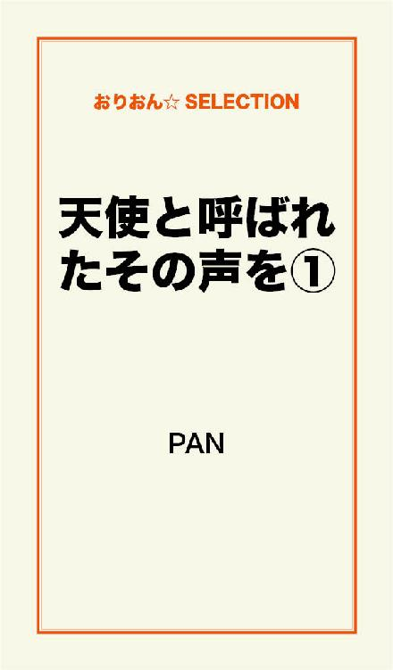
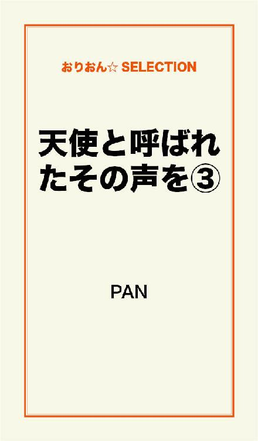

| 天使と呼ばれたその声を 完全版 | |
| PAN | |
この本は横書きでレイアウトされています。
また、ご覧になる機種により、表示の差が認められることがあります。

――こんなにも罪に塗れた私を神は許してくれた――
そんな唄を唄う彼女の声は、『罪』や『不安』全ての醜い心を浄化してくれた。
ふわり......と夜のきらびやかな繁華街に現れては人々を魅了し、そしてまた、ふわり......と消える。
その姿はまるで天使だった。
汚れを知らない真っ白な天使だった。
――――死神が唄う歌――――
全てが嫌になった。
学校も家も、何もかも。
壊れてしまえばイイって何度も願ったけど、そう願った所で何も変わらない。
寧ろ、加速をつけてそうであり続けるものだ。
見渡せば、深夜にも関わらず目を伏せたくなる程に輝くネオンの数々。
見下ろせば、週末でハメを外した人達で溢れている。
......何度、この場所に立っただろう。
現実から逃げたい日はココに立つ。
だけど、実行は出来なかった。
怖くて、足が震えて、結局は意気地無しの自分に更に哀しくなる。
......今日は違う。そう、今日は違うんだ。
自分の意思で飛び込めないのなら、"そうなるセッティング"をすればいい。
母親が飲んでるハルシオンも数分前に飲んだ。
そして、今、私は５階立てのビルの屋上。フェンスの外側。
足元が狭いコンクリートの上に座り、今か、今かと眠気を待っている。
きっと、明日のニュースに流れるんだろうな。
これは最期の私からの復讐。
メディアとかで面白可笑しく取り上げてくれるだろう。
期待はしている。
あ。こんな時って遺書書くべき？
でも、私の出した答えに笑う奴がいるかもしれない。
清々する奴がいるかもしれない。
思えば、こんな事をする前に一発ぶん殴っておけばよかったんだ。
そうしたら次の日が怖くて、こんな面倒臭いセッティングをせずに飛び込めたんだと思う。
そう言えば、証明写真あったっけ。
生徒手帳のを使われるのは嫌。
あー......。ちゃんと撮っておけばよかった。
どうでもよくなったはずなのに、どうでもよくない。
でも、もう遅いかも。
......すごく............、......眠い。
体育座りのままフェンスに背を付けて、静かに瞼を落とす。
顔に当たる夜風がとても気持ち良かった。
心を休めるのが最初で最期だなんて笑える。
情けなくて、哀しくて笑える。
視界を閉ざした私の耳に届くのは、さっきよりもクリアに聞こえる騒がしい街の音......。
......と、......歌。
......歌？
一弦、一弦を流れるように弾くのを"アルペジオ"と言うテクニックらしい。
どこかで聞いた事がある。
その"アルペジオ"で弦を弾くアコースティックギターの音と共に唄が聞こえる。
......なんて、澄み切った声なのだろうか。
今までの自分が救われるような......全身に鳥肌が立つ程の極上の声。
その声は次第に間近になり、後ろに気配を感じた。
歌が止まる。
「ねぇ、飛び降りるの？」
話し声さえも美しい声。
重力に引っ張られたままの重たい瞼を何とか気合いで数ミリ開き振り返る。
フェンス越しにその声の持ち主を瞳に捕らえた。
暗がりでも分かる金髪のロングストレートの小柄な女。
アコースティックギターを抱え、猫のような大きな瞳が私を見つめている。
私のこの"状況"に動じる事もなく、無表情のまま歩みを進めてきた。
例えば。
「はやまるな！」とか
「よく考えて」とか引き止めるものではないだろうか。
別に引き止めて欲しいワケではないけれども。
「ねぇ、飛び降りるの？」
引き止める所か、さっきと同じ質問を繰り返す。
「......えっと、」
口ごもる私を無視して、彼女は私の立っている"外側"と彼女の立っている"内側"を隔てるフェンスの下に腰を下ろし、背負っていたバックから赤いキャンドルを取り出すと、それに火を点けた。
......飛び降りる事を更に煽られている。
この女は死神のような気がした。
そうでなければ、わざわざ私の目の前にキャンドルなんて置く訳がない。
私の命の灯を削るかのように、キャンドルはオレンジの温かい色を出してゆらゆらと揺れていた。
やっぱり今のタイミングだったのかもしれない。
さっきよりも最高のセッティングだ。
もう、眠気もピークで、少しでも気を抜いたらガクッと眠りに就けそうだった。
キャンドルから死神に視線を移すと、何時からそうしていたのか、ジッと大きな瞳で私を見つめ続けている。
「死ぬの？」
「うん」
「そこ」
「？」
「そこは駄目」
「は？」
「場所変えて。邪魔」
意外な彼女の台詞に重たかった瞼が一気に持ち上がる。
とりあえず、かなり怪訝そうな顔をして右手の親指を立てながら、"内側"を指していた。
「早く」
綺麗な声のくせして、かなりの気迫があるのは確かで。
気の弱い私は素直にそれに応じていた。
きっと、それだけじゃなかったと思う。
彼女の声には何故か逆らえない自分がいた。
覚束ない身体を、再び気合いで立たせて、フェンスを倒れ込むように乗り越えた私はやっと"内側"に移動をした。
力なく彼女が座るすぐ横のコンクリートにひざまずくと、タイミングを見計らったかのように、ジャーンと軽快なギターの音が響き渡った......。
そして、彼女はまた唄う。あの極上の声で。
聞いた事のないその歌はとてつもなく哀しいメロディだったように思う。
キャンドルの頼りない光に照らされている彼女は、声を振り絞るように、星一つない暗い空に向かって唄い続ける。
一体、誰に向かって唄っているのかは分からない。
だけど、その時の私はまるで自分に唄ってくれている気がしたんだ。
英語で唄われている歌は、怒りや哀しみ。絶望や不安。そんな気持ちに支配されていた魂が綺麗に浄化される。
魂を鎮める鎮魂歌。
透き通るその声で、私の身体に入り込む。
頬に、何かが伝った。
両手を見つめると、小刻みに震えていて、その手にはとめどなく大粒の涙が弾けていた。
......今更ながら怖かったのだと実感した。
本当は、誰かに止めて欲しかったのかもしれない。
必要なんだよって。私の存在を認めて欲しかったのかもしれない。
人生、捨てたもんじゃないって。
まだまだこれからだよって思いたかったのかもしれない。
だからといって、この極上の声で唄う彼女が私を必要としてくれている訳ではないのは理解している。
でも、今の私がこの唄を、声を必要としているのは理解出来た。
その予想通り、この出会いで私の人生の価値観が変わる事となる。
生きるって事。死ぬって事。
人を信じる気持ち。人を裏切る気持ち。
愛する事......愛される事......。
――――主従関係――――
本日の天気は晴天。
これでもかって位に私を照り付けている。
季節は夏。背中に嫌って程に伝わってくるコンクリートの熱さ。
このままこうしていたら、きっと干からびる。確実に。
私が瞼を開けた時には既に今の状況だった。
死神に会ったのに、死ねなかった。
彼女は死神ではなかったんじゃないかって今更ながらに思う。
まして、死神なんて現実味がなくって、そう考えてしまった昨晩の私は相当参っていたのだ。
しかも、彼女は跡形もなく消えていた。
思えば、薬のせいで記憶が錯誤していたのかもしれない。
気怠い身体を起こし、眩しい太陽を見つめた。そして、今日も思う。
......また、始まったのだ、と。
この時間帯だと、家には誰もいない。
財布も携帯も家にあるから、今が自宅に戻るチャンスだった。
見慣れた細い裏道を通り抜けると、高いビルのせいで日当たりが悪いアパート地帯に入る。その中でも、特に年季が入っている木造のボロアパートの１階の角部屋が私の家。
サビ付いているポストに手を入れ、当たり前のように鍵を掴む。
そして、それを扉の鍵穴に入れ開けると、むせ返る位の煙草の臭いが身体に纏わり付いた。
散らかり放題の茶の間を通り抜け、締め切ったままの汚れたカーテンを開けても真っ暗なまま。
窓を開けてもコンクリートの壁が邪魔して風なんか入ってきやしない。
取りあえず、自分中では一張羅だった安物のワンピースを壁にかけて、床に放り投げていた制服を掴んだ。
学校に行くのには抵抗があったけど、ココに居るのも相当なストレスだった。
だからといって街をブラつくと、補導されるのが目に見えている。
学校は面倒。補導されて根掘り葉掘り聞かれるのも更に面倒。
消去法をしていくと、結局は学校に向かっている自分がいた。
"それ"が何時から始まったのかは自分でも分かんない。考えたくもない。
人間って不思議なもので同じ事を繰り返しされると、"それ"が当たり前のように錯覚してしまう。
だから、なのかな。慣れたのかな。
「ミチル！ 皆の分の飲み物買ってきてー？ 後～」
「うん......」
笑顔の自分がいるんだ。
人に頼んでおいて全く私に見向きもしない。
優雅にネイルを塗り合っているその女グループは、端からみたら私の"友達"なのかもしれない。
こんなのが友達なら必要ないって思うけど、私は１人が怖かった。
このグループに逆らう事も怖かった。
だから、こうして飼い主に奉公せざる負えない。
１人にしないでくれているから。イジメられないから。
弱いって思われているのは確かだけど、弱いは弱いなりに自分の保身を考える。
これが一番私の中での最善な生き方。
ペコペコ頭下げて、つまらない自慢話をヘラヘラ聞いて、そして、長い１日が終わるんだ............。
でも、今日は違った。
何時もは逃げるように帰る私を逃がしてはくれなかった。
「ミチル、街、付き合ってよ」
放課後、１人で掃除を任された教室で机を持ち上げていた私に意地の悪い声が降りかかった。
難色を示さないように、何時もの作り笑いで応える。
「今月、お小遣もうないし」
「え！！ ちょうどイイ！」
「......え？」
「バイト紹介しようと思って！」
携帯を片手に操作しながら、口角が上がっている。
"バイト"の内容は、聞かなくても理解出来た。
こいつらがその"バイト"の話をしているのを聞いたから。
語尾に「ミチルにやらせよ」って付け加えて。
......それだけは嫌だ。なのに、なのに。
「本当に？ ありがとー」
......もう、消えてしまいたい。
やはり昨日のうちに死んでしまえばよかった。
どうやら、"バイト"の計画は朝には決定していたらしい。
逃げられないように、わざとらしく肩を抱かれて歩く繁華街はとても華やかな場所には映らなかった。
擦れ違う人達の笑い声が、まるで私の生き方を嘲笑っているかのように思えてくる。
「９時に約束してあるから、ココで待ってて。アタシら、あそこのカフェで待ってっから、まぁ......２時間位？」
真夏にも関わらず背筋が凍る。
そんな私の気持ちを、少しも汲み取ってくれない女共は、私を置いて人混みに消えていった......。
時刻は、８時55分。
怖くて俯くと、小刻みに震えている足が視界に入る。
......こんな事なら、......こんな事ならと、何度も後悔の念が沸き起こる。
昨日のうちに眠ればよかった。
死神にそこはダメだって言われても、そうすればよかったんだ。
２分......１分......。
容赦なく刻は刻まれる。
そして、９時を知らせる真後ろにある時計台が無情にも私に９時を知らせてくれた。
この人混みだ。
私だと思われないかもしれない。そうであって欲しい。
お願い......私を見つけないで......。
「今晩は」
「......」
「その制服、○○高の子だよね？ ミチルちゃんでイイかな？」
俯いたまま、目の前にいる人の皮靴だけを見ていた。声からして40台後半。
アイツら、わざわざ、本名教える事ないのに。
「行こうか」
太い手に腕を掴まれて、私は誘導されながら前に足を踏み出した。
その間は、ずっと下を向いていた。
絶対に顔を上げなかった。
おじさんが立ち止まった時に、心臓が大きく音をたてる。
あまりもの緊張に空嘔吐しそうだった。
誰も気付いてくれない。
助けてくれない。
小刻みに震えていた足が、大きく震えていた。
......その時。
ジャーンというアコースティックギターの音と共にあの声が聞こえた。
昨日聞いた歌とは違うけど、この歌声は間違えるはずがなかった。全身で感じる。
魂が浄化される、極上の澄み切った声が......。
騒がしい雑踏に負けないで、風に乗って聞こえてくる。
......あの死神！？
私はやっと顔を上げて、無意識に掴まれていた腕を払った。
そして、走り出していた。
「ちょっ......、オィ！！」
私を買ったはずのおじさんは慌てた様子で私に静止を促したが、身体が止まらない。
会いたい。もう一度会いたい。
あの死神にどうしようもなく会いたかった。
ラブホテル街を抜け、アーケードに出る裏道をただひたすら走り続ける。
声がさき程よりも間近に感じた。
裏道から表通りに出る角を曲がると、そこには。
締まっている店のシャッターの前。
ギターケースに楽譜を乗せて胡座をかきながらギターを弾く、大勢の人達の中心にいる金髪ストレートの死神。
その人達を両手で掻き分けながら死神の前に息を切らしながら仁王立ちをすると、あの猫のような大きな瞳が私を捕らえた。
ギターの音も唄う事も止めないで、ただ、私を見つめるだけ。
「......助けて」
何故、その時、彼女にそんな事を言ったのかは分からない。
ただ、その声が、私を救ってくれるって確信があったんだ......。
――――天使の隠れ家――――
言われなくても分かる。
名前もお互いに知らないし、いうなれば、赤の他人。
私が覚えていても、彼女はきっと覚えてはいないだろう。
直ぐに瞳は反らされて唄い続ける。
彼女の歌を聞いていた周りの人達も、一瞬何事かと私に視線を向けたが、次第に何もなかったかのように唄う彼女に視線を戻した。
私だけが、ここに存在していない感じだった。
叫んでも誰も気にも止めない存在。
......戻ろう。
主人の居る所へ。存在しないよりは、私が存在するそこへ。
なんて蔑まれるか分からないけど。
明日から学校で無視されるかもしれないけど、仕方ないから......諦める事は慣れっこだから。
踵を返し、俯きながら私は歩き出した。
「待って」
涙で歪む視界のまま、呼び止めた声の方へ振り返ると、私を見つめている彼女がいた。
私が止まったのを確認すると、アコースティックギターをハードケースに入れ、身支度をしていた。
周りの人達が「後、１曲」と惜しんでいたが、軽く会釈をした後、そのまま私に近づいてくる。
長い金の髪が夜風になびいて綺麗だ。
「助けて欲しいって？」
「......」
「何に？」
「......」
自分から彼女に助けてとお願いしたのに"今の状況"と"日々の状況"が入り交じり、言葉がうまく出なかった。
喉の辺りで引っ掛かる。
その時。バックから着信を知らせる流行りの曲が鳴り響いた。
身体が強張り、また手足が震えだす。
やっと着信が切れたと思った矢先、
「ミチル！！」
と、聞きたくない声が聞こえた。
「何逃げてんだよ！」とか「ふざけんな！」とか。
罵倒の言葉を吐き捨てながら走ってくる。
どうする？ 逃げる？ でも、どこへ？
疑問や不安が入り混じる。
......もう、何も......分からな......。
「行くよ」
急に引っ張られた身体は大きく体勢を崩し、危なく転びそうになった。
気付いたら、彼女の細く小さな手が私の腕を掴み走り出していた。
後ろからは容赦なく「逃げんじゃねぇ！」と叫び声が耳を貫いたけど、彼女は裏道の更に入り組んだ裏道を走り抜けていく。
そして、古びた居酒屋の横に入るとやっと足を止めた。
まだ聞こえるアイツらの声......。
「しつこ......」
彼女は軽く溜息を吐き捨て、私をジッと見つめる。
全てを見透かされるような色素の薄い大きな瞳だ。
そして、ギターの入ったハードケースを前に突き出す。
「持って」
「あ、うん」
「また走る」
「うん」
「......」
「......」
「それ、傷付けたらただじゃおかないよ」
とんでもなく恐ろしい言葉と目力で訴えた後、あの時と同じ背負っていたバックに乱暴に手を入れて携帯を取り出した。
「行くよ」
再び腕を掴まれて、路地裏を走り抜ける。
彼女は器用に携帯を操作し、それを耳にあてた。
「アタシ。ちょっと厄介事に巻き込まれた」
うん。うん。と相槌を打つ彼女の電話の相手はわからなかったけど、
「ソラ！ 走るんじゃねぇ！」
と、受話器から漏れる程の大きな声で叫ぶ相手は男の人だと聞き取る事が出来た。
漏れた声を聞いただけでも驚いたのに、携帯を耳にあてている当の本人は動じた様子は見受けられない。
また相槌を打つだけの会話は始まり、電話は終わりを告げた。
まだ走り続けていた"ソラ"と呼ばれていた彼女。
本名なのかもしれないし、全く別人の名前かもしれない。
「ねえ！ 名前ソラって言うの？」
「......」
「走ったら駄目なの？」
「走るも走らないもアタシが決める。アンタに関係ないじゃん」
前を走る彼女が今、どんな表情でその言葉を吐き捨てたかは分からないけど、とても哀しい声だった。
何かを諦めたような。どうでもいいような......そんな哀しい声......。
電話を切ってから１分？ 正確には１分も経ってはいないと思う。
前方から数人の男の人達が血相を変えて私達に向かって走って来た。
「ソラさん！ 大丈夫ですか！？」
やっぱりソラって言うんだ......。
男の人達を確認すると同時に腕を掴んでいたソラの手が離れる。
「ソラさん、走ったらダメだってキョウさんが言ってたじゃないですか......」
ソラを囲む男の人達はその姿形から想像も出来ない程に敬語を使う。
二の腕に描かれた入れ墨に、益々恐怖心が芽生えていく。
私ならこんな風格の人には怖くて近寄れない。
そんな人達に労られているソラは一体どんな人間なのだろうか。
一見。端から見たら、小さな女の子をナンパか因縁を付けているようにしか見えない程の違和感がある。
「ごめん。厄介事になった」
「キョウさんが心配してるので、バーに向かって下さい」
ソラは小さく頷くと、「で？ 厄介事って......？」と言葉を続けた。
視線が私に向けられる。
「その子に聞いて」
確かに、私はソラに助けてと言った。
だけど"何に助けて欲しいのか"は伝えてはいなかった。
後ろからは私を探す声は聞こえない。
もう諦めて帰ったのかもしれない。
だとしたら、これ以上助けてもらう必要がなかった。
十分助けてもらったから。
「......えっと......」
もう大丈夫ですって、伝えようとした時、
「女。３人組の。１人は茶髪の巻髪。もう１人はデニムのミニ。後の１人は後ろでわからなかったけどハスキー声」
一体、いつアイツ等をその目で確認したのかは謎だった。
でも、ソラが言う特徴は的確だった。
事情が分からないソラが何を考えてそう言ったのかは分からないけど、
「見つけたら連れて来て」
無表情のまま伝えた。
ソラの言葉を聞き入れた男の人達は、そのまま路地裏を走り抜けて行った。
ソラはそれを見送る事なく歩き始める。
私はソラに預けられたギターの入ったハードケースを手に持ったままその後ろ姿をただ、呆然と見つめていると、１メートル位進んだソラは、振り返る。
「来んの？」
「どこに行くの？」
「来ないならイイ」
「......」
「どっちだよ......」
大袈裟に溜息を吐き捨てた。
なんで、見ず知らずの私を助けてくれたのだろう。
助けてと言ったのは私だけど、冷たいながらも気にかけてくれるのは何故なのだろう。
ここで別れたら、接点がなくなる気がした。
私はあの日、屋上でソラと出会ってから、ソラとの接点が欲しかった。
あの歌声をもう一度聞きたかった。
だから......。
「行く......」
小さく呟いた。
ソラはウンともスンとも言わないで再び歩き始めて、私も何も言わずに後ろを付いて行った。
暫くすると、繁華街の奥の奥。
ガラが悪いと評判の場所の一角に、他の店よりは大きく場所をとったバーが見える。
ソラはなんの躊躇いもなく、まるで我が家に帰るような感じで扉を乱暴に開いた。
それと同時に、目の前の光景に驚愕した。
――――『ソラ』と『キョウ』――――
誰が見たってこの光景には唖然とするだろう。
広いフロアにはこれでもかって位人で溢れているのに、もの音一つ立てずに静まり返っている。
会話もなく、皆神妙な面持ちだった。
こんなに集まっているのに、何をしているのか聞きたい。
テーブルにはそれぞれが頼んだであろう、お酒が入ったグラスが置いてあるのにも関わらず、誰もそれに手を付ける事もなく、ただ、ただ黙っている。
そんな沈黙を破ったのは、
「ソラ！！」
フロアの奥にある黒革の長ソファーから立ち上がり、こちらに駆け寄る男の人だった。
ココにいる人達も相当風格のある人だったけど、馬鹿な私でも直ぐに分かる。
この人が他とは違う威圧感があるって事。
整えられ、釣り上がった眉の下に猛獣を思わせるかのような鋭い瞳。
無造作にセットされたブラウンの髪と......。
息を飲む程の綺麗な顔立ち。
それが更にこの世の者と思えなくて、だから、他の人達と風格だとか纏う空気が違うと錯覚させたのかもしれない。
その人がソラに駆け寄ると、大きな手が頬に触れる。
猛獣の瞳が優しさに満ちて細まる。
「大丈夫か」
低い声で、口数は少ないが、やはりその風格に反して彼の言葉は優しかった。
「平気」
ソラは相変わらずでトーンに強弱も付けずに返事をした。
「それならいい」
「キョウ、ごめん」
「もう、走るな」
「......」
「分かったな？」
「......」
それはまるで恋人同士のような雰囲気だった。
違う。確実に恋人だと思った。
その光景が心にとてつもない焦燥感を与える。
恋人同士が羨ましいのではない。
ただ、こんな風に無償の愛で包まれているソラが凄く羨ましかったんだ。
私は知らない。
誰にでも好かれる条件を。
取り乱す程心配される事を。
大事にされる事を。
笑顔を繕って、一生懸命人に縋り付いて、それでやっと人間関係を成立させているのに、ソラはそんな感じではない。
素っ気なくしても、無表情のままでも人が付いてくる。
私もその１人。
もしかしたら、ソラに付いて来たのは間違いだったのかもしれない。
こんな現実を目の当たりにしたら、日々努力した揚げ句に、売りをさせられてしまう自分が可哀相で仕方ない。
軽く息を吸い込み、ゆっくり吐き捨てる。ソラに預かったギターケースを壁に立て掛けた。
ソラにもう一度お礼が言いたかったけど、今の状況に割って入る度胸がない。
しかし、帰ろうとした私に、
「アンタ、誰？」
優しかった声が威圧的な声に変わった。
キョウと呼ばれている男が私を引き止めたのだ。
「あ......」
その質問はごもっともだと思う。
知らない人間がずっとココに突っ立っていれば誰だってそう言うだろう。
「拾った」
「拾った？」
「だってコイツ。命を捨てようとしていた」
「......」
キョウさんは無言のまま目を細めて私の瞳を見つめていた。
ソラはきっと屋上での事を言っている。
あんなに真っ暗だったから覚えていないとばかりに思っていたのに......。
そう思ったら、涙が出そうになったけど、下唇を噛み締めて感情の波を抑え込んだ。
ソラはそれ以上は語らずに、私が置いたギターケースを手に取りフロアの奥。
キョウさんが座っていた長ソファに向かって歩いていく。
そして、ギターの音が鳴り、フロアにソラの歌声が響き渡った。
......どこかで聞いた事があるこの曲は......。
「アメイジング・グレイスか」
キョウさんは唄うソラを優しい眼差しで見つめた。
そしてソラを見つめたまま、
「アンタ名前は？」
「......ミチルです」
「アイツ歌最高だろ」
「はい......初めてあの声を聞いた時、救われました」
やっとキョウさんの視線が私に向けられる。
ソラを見つめていた時と同じ優しい瞳で。
「何歳？」
「17です」
「ソラと一緒か。なら酒はダメだな......」
そう言うと、キョウさんは私を手招きして、ソラが唄う目の前の特等席に案内してくれて、近くにいる人に飲み物を頼んでくれた。
直ぐに持って来られたビールをキョウさんは直ぐさま喉に流し込み、気持ち良さそうにフーっと息を出す。
私は手渡されたオレンジジュースには手を付けずに唄うソラをその目に焼き付けていた。
死神なんてもんじゃない。
ソラはまるで......。
「ソラはこの辺りじゃ、天使の声って言われてる」
キョウさんは私の心の声を代弁してくれた。
声だけじゃない。
唄うその姿もまるで背中に真っ白な羽根が生えているように見える。
ずっと見つめていると、さっき抑えた感情の波が溢れてしまいそうだった。
いや、もう遅い。
とめどなく涙が溢れていた。
それは、既にアメイジング・グレイスを唄い終わった後の次の曲。
ソラのオリジナルだと思われる曲の歌詞に......
"泣きたいなら泣けばいい。その粒の分だけ明日は強くなれる"
なんて唄うから......。
また勘違いしてしまう。
こんなに人がいるのに、私にだけ、私に向けて唄ってくれているような気がした。
「素敵な恋人ですね？」
すると、キョウさんはキョトンとした表情をした。
何を言ってるのって感じで。
そして、口角をあげた。
「ソラは俺の女じゃねぇ」
「えっ！？」
「勘違いしたか？」
「......だって」
"ん？"と私の顔を覗き込むキョウさん。
......だって、恋人ではないのに、なんでそんな愛おしむような瞳でソラを見つめるのだろうか。
だけど、その言葉は飲み込む事にした。
私自身、色々と聞かれるのは好きではないから。
首を横に振ると、キョウさんは自嘲的な笑みを浮かべた。
「ミチル」
「はい」
「これも何かの縁だ」
「......」
「何があったか知らねぇが、何時でもココに来ていい。顔は通しておく」
ソラもそうだったけど、キョウさんも何故、今日出会ったばかりの私にそんな優しい言葉を与えてくれるのだろうか。
私には分からない。
私と仲良くしたって得な事はないのに......。
きっと何も返せないのに。
人と人との繋がりは、"損得"で成り立っていると思う。
自分にとってメリットがある人なら大歓迎だし、わざわざデメリットになる人を側に置く事はない。
それなら、何故？
17年間で築き上げていた固定観念が覆される。
ソラの唄が終わった。
フッと顔をあげると大きな瞳で私を見ている。
そして、あの時と同じで、親指を立てていた。
「こっちに来いってよ」
軽く肩を揺らしながら笑うキョウさん。
意味がわからずソラの近くにいくと、ソラはとんでもない事を言って来た。
「何か唄えない？」
「えぇ！？」
「唄えないかって聞いてる」
「む......無理！」
そのやり取りに周りが盛り上がり、「唄えー！」とヤジが飛び交う。
キョウさんも言った通り"天使の声"と呼ばれているソラの後に唄えるはずもなく......。
「そうか、音痴か」
「お、音痴じゃないよ！」
「じゃあ、唄え」
「無理！」
「......音痴」
意地悪なのに、意地悪だと感じないのはソラだったからだと思う。
無表情だけど、ちゃんと汲み取る事が出来た。
泣いていた私を元気付けようとしているのだ。
私とソラを中心に笑いが広がる。
初めてだった。なんの見返りもなく接してくれる人と出会ったのが。
これまで我慢を続けていた私が報われた気がした。
何故、ソラを見て焦燥感を感じたのだろう。
今ならわかる。ソラの周りに人が集まる理由が。
......不思議に人を引き付ける魅力がある。
「ソラ、ありがとう」
ずっと言いたかった言葉をそっと口にすると、ソラの口元が少しだけ綻んだ。
そんな穏やかな時間を壊したのは、大きな音を立てて開いた店の扉だった......。
――――トモダチ――――
路地裏で会った男の人達と、その間には見覚えのある３人の女。
騒いでいた店内の皆もキョウさんも、ソラも、鋭い目付きでそれを睨みつける。
私は、睨む所か視線を反らした。
どうなるか予想が出来ないから怖い。
楽しさにこれまでの状況を忘れていた。
「誰だ、コイツ等は......」
キョウさんの不機嫌な声がフロアに低く響く。
自分に向けられたわけではないけれど、とてつもない恐怖感を与えた。
恐る恐る、顔をあげてかつては"主人"だったアイツ等を見ると、恐怖に歪んだ表情が瞳に飛び込んだ。
まるで、自分の心の鏡のようだ。
１人になるのが怖くて笑顔で過ごしてたけれど、何時も心の中の私は恐怖に怯えていた。
だから、また視線を反らす。
「ソラ、誰だ」
「知らない」
「知らない？」
「コイツに聞いて」
ソラは隣で俯く私に視線を向けた。
どうすればいいかわからなかったから、何も言えない。
最善な形を探すけれど、どれも最終的には壁にぶちあたる。
「ミチル」
ソラが初めて私の名前を呼んだ。
ハッと思考回路を中断させてソラを見つめた。
真っ直ぐで曇りのないその瞳の中にアイツ等と同じ恐怖で顔を歪めている自分が映った。
「アンタはアタシに助けてと言った」
「......」
「だけど、自分で何かを変えなきゃ状況は変わんない」
「ソラ......」
「動け」
アタシ達がいるじゃんって口にはしないけどソラがそう言った気がする。
ここで逃げたらまた私はあのビルのフェンスの外側に立つのだろうか。
また日々を作り笑いで過ごすのだろうか。
さっきまで考えた最善の方法......。
ここで取り繕っても、そうでなくても結果が同じだ。
同じであれば、人はどうする？ 私はどうする？
「......れた」
「は？」
「売られた」
「売られただぁ？」
キョウさんは先程よりも怪訝な声と表情を表に出し、アイツ等を睨み付ける。
「ミ......ミチルッッ！ そんな、つもりじゃなかったの！ ね？ ウチラ友達でしょ？」
「友達じゃない」
「ミチル！！」
「友達なんかじゃない！！」
不思議と手足の震えはなかったのはソラが側に居てくれたからだと思う。
ソラは相変わらず興味なさそうに、長ソファに深く座り、ギターをいじっていた。
「二度とミチルに近付くんじゃねぇ」
「......は、はい」
「摘み出せ」とキョウさんが命令すると、アイツ等は乱暴に店の中から出されて行った。
生きて行く中で、相手の歩幅に合わせる事は大事だと思う。
でも、そればかりに気を取られて自分だけを殺してしまう......。
まるで心が通わない機械みたいな、プログラムを組まれた通りに行動する人生に価値はあるのだろうか。
ちゃんと互いに認め、認められるそんな関係に私は憧れていた。
例えばそう。ソラやキョウさんや、ここにいる人達みたいに、何も言わなくても初対面でも、"人間"として扱ってくれる。
ここが人生のターニングポイントなのであれば見逃したらいけない。
これまでの自分が変わる事が出来たのであれば......。
だけど、人生なんてそんな上手には出来ていない。
覚悟はしていた。していたけど、今更ゼロから始める事の厳しさを目の当たりにした。
あの時は、ソラ達が居たから怖くはなかった。
何かあっても助けてくれる確信があったから。
でも、そこから出たら私には何もなかった。
嫌でも縋り付いていた唯一のモノを自ら手放して残ったのは、１人きりの自分。
翌日の学校は見事に１人だった。
昨日の状況とあまりにもギャップがありすぎる。
授業中はいいけど間にある10分の休み時間が１時間位あるんじゃないかって位長く感じた。お昼休みも周りの楽しい会話が溢れている中ポツンと自分の席に座っていた。
アイツ等は私に視線を向ける事なく、代わりに、周りからの好奇な視線に曝された。
"ケンカ？""仲間外れ？"時折聞こえる会話の節々がとても嫌だった。
本当に独りきりで、今日は誰とも会話をしていない。
......無性に友達っていうのが欲しかった。
でも私は友達の作り方が分からない。
今更、何ヶ月も過ごしたクラスメイトに"初めまして""仲良くしてね"なんて言えるはずもない。
結局、ソラが動けと言って、動けたのはあの時だけだ。
何も変わらない。寧ろ状況は悪化したように思える。
こんな私を見てソラはなんて言うだろうか。
どうしようもなくソラと話がしたかった。
だから、お昼休みに学校を抜け出してまたあの場所に向かって走り出していたんだ......。
行き着く場所はやっぱりココだ。
何故ココなのかは分からないけど、沢山のビルや建物がある街並みの中で決して高くはないこのビルの屋上はとても見晴らしがよかった。
それが角度の関係なのか、なんなのかは知らないけど......。
そして当たり前のようにいる、声を振り絞るように晴れた空に向かって唄うソラ。
邪魔しないようにそっと隣に体育座りをしてその歌に耳を傾ける。
「サボり？」
ソラは唄うのを辞めてギターだけでメロディーを奏でていた。
「また飛び降りたいの？」
「ねぇ、ソラ」
「ん？」
「私とソラって友達だよね？」
その質問にソラは何も答えなかった。
特に考えているわけでもなく、相変わらずギターをいじっている。
気休めでも「そうだね」って肯定の言葉が欲しかった。
私は１人じゃないって思いたかった。
「きょ、今日、１人だった......よ」
鳴咽混じりの声は今にも消えてしまいそうで......。
肯定の言葉をくれないソラに対して軽い怒りがあって......。
こんな状況になったのをどこかソラのせいにしている自分がいる。
それはとても醜い感情だった。
天使の声と呼ばれる声を持つソラにそんな感情を知られたくなかったのに。
どんどんと堕ちて行く。
「......トモダチって、いちいち、トモダチって言わなきゃいけない存在なの？」
「......」
「面倒だね」
呆れたように吐き捨てるソラに、ギリギリで止めていた感情が溢れ出した。
「ソ、ソラには分からない！ 私が今までどんな思いをしてきたかとか、必死で１人にならないように努力してッ！ 何が動けよッ！ 何も変わらないじゃない！」
「アンタさぁ......」
やっとギターの弦を弾くのを止めたソラは私を真っ直ぐに見つめる。
「アンタが動けば世界が広がる。世界が広がれば違うものが見えてくる。そうやって人のせいにしてなんの価値があんだよ」
「......」
「それとも、昨日の友達だって言う奴らに言ってこれまで通りに付き合って、ココで飛び降りる？」
まだ曲のついていない歌詞みたいな台詞を並べるものだから、素直に心に染み渡る。
別に、戻りたいってわけじゃない。
また絶望に打ちひしがれてしまうのかって思うとウンザリする。
「キッカケなんて沢山あんじゃない？」
「例えば......？」
「自分で考えな」
ソラはきっとわからなかったんだと思う。
それは私も、誰でも同じだ。
沢山あるから分からない。
逆に考えれば分からない程に人と人との接点は溢れているんだ。
その日、ソラが深夜まで私に聞かせてくれたのは"トモダチの歌"だった。
何曲も間を置く事なく私に聞かせてくれた。
たまに知っている曲が流れて、口ずさむ私にハモってくれたりする。
ソラが言うトモダチってのは、言葉にしなくても分かり合えるって事。
時には言葉は必要だけど、確認をしなければ成り立たない関係はとても脆いものだって感じた。
動く事は行動でもあるけれども、心を動かす事。
自分が勝手に作りあげた硬い殻を壊して一歩を踏み出す勇気って事だ。
そうだよね、ソラ。
――――プレゼント――――
学校は相変わらずだった。
だけど今までと違うのは心持ち。
人は心一つで強くもなれる。
まだ少し寂しく思ったり孤独を感じたりもするけど、私は私の居場所を見つけた。
学校が終わったら真っ直ぐにソコに行くのが日課になっている。
すっかり慣れた店の扉を開くと、まるで帰りを待ち侘びていたかのような笑顔がそこにある。
「オゥ！ ミチル、お帰り」
「ただいま！ ......ソラは？」
何時も気怠く長ソファに座っているソラがそこにはいなくて、居るのはキョウさんと数人の仲間達。
「ソラは今日遅くなる」
「なんで？」
「それより、ミチル。ちょっと付き合え」
キョウさんは質問には答えず、立ち尽くす私の腕を掴んで再び店の外に出された。
店の外に出たキョウさんは少しだけ照れ臭そうに首の後ろを掻くと、私と一緒に外に出た理由を口にする。
「３日後」
「はい......９月２日ですね」
「ソラの誕生日だ」
「え！？」
ソラの誕生日がもう直ぐで慌てたわけではない。
忘れてた日にち......９月２日は。
「18になる女は何が欲しい？」
「............」
私の誕生日だった。
きっと、ソラみたいに誰かがこんな風にその特別な日を"特別"だって思ってくれているのであれば、ちゃんと忘れずに覚えていられるのだと思う。
今まで生きて来た中で、誰かと一緒にその日を過ごした事のなかった私にはキョウさんに大事に想われているソラがとても羨ましい。
その日、私も誕生日なんだよって言える度胸なんてないし......。
思えば、ソラに何も返せていない私はソラに何か感謝の気持ちを伝えたかった。
だから、同じ誕生日だって事は、心の奥の奥にしまい込み、笑顔で答えた。
「ソラは何が好きですか？」
「分からねぇ......」
「去年は何をあげたの？」
「今回が初めてだ」
「......」
プレゼントっていうのは、その人の事を想って選ぶ物だ。
例えば色。デザイン。
しかし、ソラの事を考えても何も浮かばないのは何故だろうか。
普段見ていても、何にも興味を示さないソラ。
気高いノラ猫みたいに気ままに我が道を行くって感じのソラ。
私が知る限り、ギターを弾くか、ソファで寝てる姿しか分からない。
口数も少ない......。
「とりあえず......見て回りますか？」
「あぁ、悪ぃな......」
あぁ、やっぱり羨ましい。
キョウさんは、ソラは自分の女じゃないって言っていたけれど、確実にキョウさんは片思いをしているのだと思う。
相手はあのソラだ。
きっとタイミングがつかめないのだと、勝手に想像を膨らましていた。
私も、キョウさんにこんな風に大事に想われたい。
何からでも守ってくれそうな、しなやかな筋肉の付いた腕だとか、全てを包み込んでくれる大きな手だとか。
整えられた細い眉の下にある、真っ直ぐな瞳に見つめられたいって思う。
ソラはそれを全て独占してるんだ......同い年で同じ誕生日の私達の違いってなんだろう。産声を上げたその日から運命ってのが決められているのであれば、それはとても残酷な事だ。とてつもなくその日を呪いたくなる。
何故、生まれて来たのかを......その意味を問う。
アーケード街に入ると、沢山の店が立ち並び、そして人の波に襲われた。
キョウさんとの距離が広がっていく。
きっと、私の人生はこんな感じなんだって思った。
人の波に逆らわずに、ただ、流されて、飲み込まれて、消えていく泡みたいな存在なんだって思えた。
その時。グッと掴まれた腕に視線を移すと、大きな手が目に入った。
「離れんじゃねーぞ」
キョウさんが人の波に飲み込まれていた私を自分の身体に引き寄せてくれたのだ。
憧れていた......触れたかった手が......触れている。
何も言わずに手を握ってくれて、一歩後ろを歩く私に人がぶつからないように道を作ってくれていた。
繋ぐ掌は火傷しそうな位熱くて、いっその事、このまま火傷して痕に残ればイイって思う。こんな事を思ってしまう私はきっとどうかしてる。
「これはどうだ？」と、キョウさんが指差す物は確かにソラに似合いそうで、私には明らかに似合わない物。
私なら......って何度も思ったけど、これは私に対しての買い物ではないって、何度も、何度も、思う度に惨めさが募っていく。
その日は沢山のお店を見て回ったけど、結局プレゼントは見つけられずに終わってしまった。
ずっと、キョウさんと一緒に街を歩きたかったけど、ソラを想うキョウさんの隣はとても辛かったのは事実だった。
それでも、またこうしてキョウさんの隣を歩けると思うと、我慢は出来る。
案の定「また明日出直すか」と私を買い物に誘ってくれた。
小さく頷くと、口角をキュッと上げて笑うその笑顔がとても好きだ。
どことなく滅多に笑わないソラの笑い方と似ている。
たまり場の店に着くと、長ソファに横たわるソラの姿があった。
ギターを両腕に包み、抱きしめながら眠る姿は、まるで愛おしい人が隣にいるような寝方だった。
痛い位に頬にギターを押し当てて、それでも心地良さそうに眠るソラ。
キョウさんは淋しそうな、呆れているような表情でそれを見つめていた。
近くにいた人に毛布を持ってくるように命令した後、
「あれ以上のプレゼントはねぇ......、か」
キョウさんには決して似合わない小さくて今にも消えてしまいそうな声が耳に届いた......。
「あのギターはプレゼントなんですか？」
「あぁ」
「キョウさんが？」
「いや」
自嘲的な笑みを浮かべるキョウさん。
これ以上は勘弁してくれって感じで、私もそれ以上聞くのを止めた。
ソラは、キョウさんの気持ちに気付いているのだろうか。
キョウさんがこんなにも切ない表情をしている事を知っているのだろうか。
ソラが眠る長ソファの直ぐ近くの床に座り小さな寝息を立てているソラの顔を横目に見る。
次第に横目で見ていたのが、大きく目を見開き、凝視した。
眠るソラの閉じてある瞼から涙が流れていた。
哀しい夢でも見ているのだろうか。
ギターを抱きしめる腕の力も強くて、必死で何かに縋り付いている感じだった。
声をかけようと思ったけど、涙を流すソラの顔は無意識な行動とは反比例していて、とても穏やかだったから起こそうとした手を止めた。
ふと、目に入ったのはギターの下の部分。
デザイン性の欠片も感じられない。
彫刻刀か、もしくはカッターとか。
そんなもので彫った感じ。
ローマ字で"HARU"と彫られている。
"あれ以上のプレゼントはない"
ギターを見てキョウさんは言った。
もし、ソラへのプレゼントなのであれば"HARU"と彫られているのは明らかに可笑しいと思う。
よく見れば、そのギターは年期が入っていて、所々キズが付いていた。
あの時......ソラと一緒に走った時。
ギターを持った私にソラは凄い剣幕で"それをキズつけたらただじゃおかない"って睨んだくらいだ。
ソラが付けたキズとはとても思えない。
キョウさんがどんなに悩んで撰んだプレゼントよりも、敵わないと言う、ソラではなく"HARU"と彫られた年期が入ったギター。
それを泣きながら力強く抱きしめるソラ。
「また、泣いてたか」
毛布を持ったキョウさんはそれを静かににかけてあげて、優しくソラの頭を撫でた。
とても哀しそうな瞳で......。
どうやら、ソラがこうして泣きながら寝ている事は初めてじゃないらしい......。
キョウさんはその理由を知っているらしい......。
だけど、ソラが泣く理由が聞けないのはとても聞ける状況ではなかったから。
周りにいる人達も、キョウさんとソラを労るような雰囲気を出しているのはバカな私でも理解出来る。
結局、この場に居ても部外者の私が土足で踏み込んではいけない絶対領域があって、触れてはいけない事のように感じた。
――――絶対領域――――
誰にだって、決して知られたくない事位ある。どんなに仲良しの友達にだって、信頼している人にだって言えない事はある。
もし、話しをしたら今までの関係が崩れるのではないか、引かれるのではないかって不安に駆られる位なら初めから知られたくもないし、話す気にもなれない。
イイ例が私で。
私だって、知られたくない絶対領域ってものが心にあって、いくらソラでも踏み込まないで欲しい部分が存在した。
きっと、今がそうなんだと思う。
踏み込んだらいけないタイミングだ。
だから、ソラの頭を優しく撫でるキョウさんには何も聞かなかった。
２人を見ていると、ソラとキョウさんもある種、２人だけの領域がある。
初めから決して崩す事の出来ない壁が立ち塞がっていて私が入る隙間なんて微塵もないのだ。
折角見つけた居場所が孤独を感じる世界に変わる。
「私、帰ります」
「ミチル」
「ソラによろしく伝えてて下さい」
「あぁ、また明日な」
"また明日"はプレゼント撰びの事。
何故、キョウさんはソラをそんなにも愛せるのだろうか。
恋人でも友達でもない２人の間にある関係ってなんだろう。
......それは、２人にしか分からない事。
踏み込んではいけない領域。
「待て」
動き出した私にキョウさんの声が静止させる。
「送らせる」
オィ！と近くにいる数人の人に声をかけると、その人達は静かに頷き私の所に歩み寄ってきた。
送りますと言われたが、
「いえ、自宅は近いのでいいです」
「駄目だ」
「......」
ズルイと思った。
キョウさんとソラは私に境界線を引いてそこから内側には行かせてはくれないのに、無断で私の内側に入ろうとする。
わかってはいる。
こんな夜中に制服姿の私が繁華街を歩いたら危ないって事。
キョウさんの優しさだってちゃんと頭では理解はしているのに心は拒絶する。
だけど、２人と一緒で、これは私の領域。
誰にも知られたくない絶対的なものだった。
「他の人に送らせる位なら、キョウさんが送ってよ！」
きっとキョウさんが送るって言っても断ったと思うけど、黙らせるにはそう言うのが効果的だと思った。
ソラから離れようとはしないのがわかっていたから。
どんなに感情的に叫んでも、眠りながら涙を流すソラの方が大事だってわかっていたから。
......それなのに。
「わかった」
キョウさんはソラから離れ、立ち上がった。
別にそんなつもりで言ったわけじゃないのに。
何故分かってくれないのだろうか。
私は少しずつ後退りをすると、そのまま勢いよく店を飛び出した。
「ミチル！！」
キョウさんの叫ぶ声は耳にではなく心に突き刺さった。
痛くて、痛くて......いっその事ナイフでえぐって心ってものを身体の中から取り出したい位だった。
ソラを大事にするキョウさん。
ソラを想うキョウさん。
ソラを愛しい瞳で見つめるキョウさん。
全部羨ましかった。
醜い嫉妬心で支配される私の行き着く場所はドコにあるのだろうか。
誰かが教えてくれないのであれば、自分で探さなきゃいけないってのは分かっているけど、あがいて、もがいて、それでも見つけられない時......どうすればいいのだろうか。
全力で疾走した繁華街を抜けて見慣れたアパートが立ち並ぶ場所まで着くと、やっと速度を下げて歩く事が出来た。
チカチカと点滅する街灯の光はその存在の意味さえも失いかけている。そう、私みたいに。
出来ればこの時間には帰りたくなかった。
だから、送ってもらわなくて正解だった。
......私の誰にも知られたくない。
触れられたくない絶対領域。
ドアノブに触れようとした手がほんの数センチ手前で止まった。
扉越しに聞こえる家の中の音が身体を硬直させたのだ。
何かが割れる音......。
何かを殴る鈍い音......。
私の日常はそんな不快な音に囲まれている。
だからこの時間に帰るのは嫌だった。
生唾を飲み込み喉を鳴らした私はゆっくりとドアノブに手をかけた。
開いた扉の隙間から見える世界はまさに地獄絵図だ。
煙草の煙で灰色掛かった部屋の中は散乱したおかずと割れている食器やビール瓶。
顔を茹タコみたいに赤くし、偉そうに仁王立ちしている男と............。
その直ぐ横にうずくまる......。
「お母さん！？」
慌てて頭を両手で抱えているお母さんの所に行くと、顔を上げたお母さんの額からはダラダラと鮮血が流れていた。
近くには二つに割れたビール瓶。
お母さんの髪にはその小さな破片が被さっている。
「ミチル、逃げなさい」
弱々しく放たれる言葉は思いの他説得力があって......。
だけど、こんな状態の母親を置いて逃げる事は出来なかった。
何故、お母さんは帰って来たのだろう。
ずっと実家に"避難"していたのに......。
こんな無謀な事を、何故。
「離婚だぁ？ ふざけるなよ？」
「......」
「こんなもん持ってくる位なら金持ってこい！！」
とても父とは呼びたくないソイツはぐしゃぐしゃに握っていた紙を二つに破り、更に細かく破り辺りに散らす。
目の前に次々と舞い落ちる紙にはお母さんの名前が書いてあった。
こんなにも罵声を浴びているのに涙一つ流さないお母さん。
震えているのは私の方だった。
その手を握りしめてくれるお母さんの手はとても温かい。
「オラ！ 金持って来い！」
振り上げられた瓶が視界いっぱいになった。
「お母さん！！」
それは本当に無意識な行動だった。
お母さんの頭を自分の胸の中に押し込み、全身で包み込んだ。
そして、その瞬間、全身を貫く痛みが走り目の前が真っ白になった。
何が起きたかはわかる。
額には生温かいものが伝っていた。
お母さんの悲鳴と呆然と立ち尽くす父親。
「俺じゃない......俺じゃないぞ......」
そう震えた声を出した父親は慌てて家を飛び出した。
頭を瓶で撲られたのに、痛みに苦しむわけでもなく不思議と冷静な自分がいた。
「お母さん、もう、大丈夫だよ。お父さんが戻って来る前に逃げて」
やっと、涙を流したお母さんを見ると何だかホッとした。
どれだけ私を守る為に流したくても流せなかった涙があるのだろうか。
だから、やっと泣ける事の出来たお母さんに安心した。
「お母さん、早く」
「ミチル......病院に行きましょう」
「大丈夫だから、お願いだから」
「だって......」
全く動こうとしないお母さんに痺れを切らした私は微笑みながらため息を一つ吐き捨てる。
「......一緒に病院に行こう？」
お母さんの傷も心配だったから、支えるようにゆっくりと家から出た。
こんな時間に診察している病院といったら総合病院位で、ここから徒歩で行くのにはかなりの距離がある。
タクシーを使える程お互いに持ち合わせがなくて、ただゆっくりと繁華街を支え合いながら歩いた。
頭痛が鳴り止まない。
意識が何度も途切れそうになるのを堪えながらも、足を前に進めなくてはいけない。
お母さんの足取りもおぼつかず、意識を失いかけている......。
ここで死ぬのかもしれない。
あの時、眠らなくてよかったって今更ながらに思う。
初めから......生まれた時からこうなる事が決まっていたから眠れなかったんだ。
前のめりに身体が傾き、そのまま意識を手放そうとした時......。
「ミチル！！」
大好きな......あの声が聞こえた。
滅多に名前なんて呼ばないくせにいざとなったらちゃんと呼んでくれる。
私はその声で名前を呼ばれるのが好きだった。
それだけで、心が綺麗になれる。素直になれる。
それって天性の才能なのかな。
神様からの贈り物なのかな。
............違ったよね。
自分の痛みを知っているからこそ人にも伝わるんだよね。
だから心に染み渡るんだよね。
――――特別な日に変わる――――
独特の消毒液の匂いと白に囲まれた部屋。
決して寝心地がいいとは言えない硬いベッド。
目を開けた時には病室にいた。
何故、ココにいるのか理解出来ない。
お母さんと怪我をしながら繁華街を歩いたのは深夜。
今は眩し過ぎる太陽が窓から顔を覗かせていた。
出来るなら病院の受診は避けたかった。
保険に入っていなかったから......。
お金なんて持ち合わせてないのに、一体この治療費はどうやって払うべきなのだろうか。
頭を撲られたにも関わらず、意外にも現実的に考える私の意識はハッキリしているものだった。
「起きた？」
声のした方に顔を向けると、看病する人用に壁に隣接された簡易ベッドに寄り掛かり、相変わらずギターを腕に抱きしめているソラが少し不機嫌気味にこちらを見ていた。
意識を手放す直前に、確かに聞こえたソラの声。
やっぱりなって思った。
あの時、ソラが私達を助けてくれたのだ。
「ソラ、ありがとう......派手に転んじゃってね......？」
「アンタさ」
笑いながら嘘を言ったからバレたのかと思った。
元々、なんでも見透かすような瞳を持つソラには嘘なんてもんは通用しない。
それでも家庭内暴力を受けているなんて事実は知られたくない部分であって......。
「隣の女の人も一緒に転んだの？」なんて逆に質問されたらなんて答えようか、頭の中は珍しくフル回転していた。
......が。
「アンタ、店にバック忘れてたよ」
ソラの意外な返事に拍子抜けした。
見ればソラの座る直ぐ横に私の学生鞄が寄り掛かかっている。
「誰のか分からなかったから、中、見た」
「......うん」
「生徒手帳あって、アンタのだって分かった」
「......うん」
「......」
「......」
「......それだけ」
お互いに無言になった時、妙な緊迫感があった。
視線が絡み合い......だけど、どちらが何を聞いたり話したりするわけでもなく会話は終わり、ソラは病室を出て行った。
正直ホッとしている。
やっとまだ頭痛の引かない頭を休める事が出来る。
何故、ソラがあの時タイミングよく現れたのか。
疑問には感じていたけど、生徒手帳に書かれてある住所を頼りに鞄を届けてくれようとしたのだ。
家に来られなくてよかった。
そう考えると、あのタイミングで父親が私を殴った事を少なからず感謝してしまう私はやっぱりどこかおかしい。
完全に麻痺してると思う。
白いシーツに包まり、瞼を閉じたら何故か涙が滲んだ。
早くココから出なきゃいけない。
少しでも入院費用を少なくしなきゃいけない。
でもここから出て、私はドコに行けばいいのだろうか。
お母さんの実家には行けない。
キョウさんにあんな困らせる事を言っておいて、図々しくあの店には行けない。
だとすると、やはり帰る場所は一つしか思い浮かばない。
「失礼するよ」
病室の扉が開くと同時に慌てて涙を拭った。
視線を窓の外から入口に向けると、そこにはソラと、白衣を身に纏った男の人。
「ミチルちゃん、気分はどう？ 何時もと違う所ある？」
私のカルテらしきものを開き、何かを書き込んでいるその人の首から下がっている名札を見ると"医師"としっかり示されていた。
とても、雰囲気が柔らかい先生だと思った。
それは少し目尻が下がっているせいかもしれないけど......。
「ミチルちゃん？」
「......」
「オィ！ 質問に答えな！」
すっかり先生の雰囲気に飲まれていた私をソラは一喝した。
「ソラ！」
先生はそんなソラを怒鳴り付ける。
ソラは軽く舌打ちをして、ベッドの横にある椅子に乱暴に座った。
「すまないね、こんな娘で......」
「............えっ！？」
慌ててソラを見つめると、相変わらずの不機嫌顔のまま、
「コイツ、アタシのオヤジ」
十八番の親指を立てて先生を指すソラに先生は
「オヤジとはなんだ！ パパと呼べ！」
と、ソラにげんこつをお見舞いした。
パパなんて馬鹿じゃねーの！？って顔でげんこつを落とされた頭を押さえているソラ。
確かに、ソラが「パパ」なんてキャラはなんか違う気がする。
天地がひっくり返っても有り得ないような感じです......先生。
先生を見て、問診に答えられない程に雰囲気に呑まれたのはソラと似ていたからだと思う。
ソラと同じで先生も人を魅了する雰囲気がある。
たまにしか見せない笑顔もまるで先生に似ているソラは紛れも無く父親似だ。
医者の父親を持ち、きっとソラは何不自由なんかないんだろうなって思う。
恵まれた家族と仲間がいて、幸せなんだろうなって羨ましく思う。
ますますソラとの格差を感じた瞬間だった。
「ミチルちゃん、一緒にいたのはお母さんだね？」
「......」
出来れば、ソラには席を外して欲しかった。
こんな私を見て欲しくない。
もう既に傷だらけで、見られたくない所は見られているのだけど......。
これ以上......これ以上はって、心が拒絶している。
そんな私の気持ちが通じたのか、タイミングよくソラのバックから携帯音が鳴った。
「ソラ！ 病院では電源を切りなさいと言っているだろう」
うざったそうに携帯を耳に当ててギターを片手に持ち、病室を出ていくソラ。
「待ちなさい。ちゃんと考えているのか？ 約束まで後少しだからな」
一瞬、ソラの瞳が哀しさに陰った。
自由気ままで気高い猫のソラが、捨てられた子犬みたいな哀しい瞳をしたのを私は見逃さなかった。
理由が分からないけど、あのソラが動揺する位の事。
先生も、神妙な面持ちでそう言うから、自分が辛いからって、ソラが何不自由なく幸せ者だって思った私はすごく最低な人間だと思う。
誰にだって、悩みがある。
それには大きいも小さいもなくて、その人にとっては果てしなく辛い事だから、簡単に"そんな事で？"なんて言ってはいけない。
悩みのスケールを比べてはいけない。
理由はなんであれ、悩んでいる事には変わりはないのだから......。
何も答えないで立ち去るソラの背中を見つめながら小さく溜息を吐いた先生は、仕切り直して私に再び視線を戻した。
「お母さんなんだけどね、実家の人が迎えに来て帰ったんだよ......幸い傷も浅くてね」
「そう、ですか」
「ミチルちゃん？」
「はい」
「虐待、受けてるね？」
「......」
「医師は報告する義務があるんだ」
「......」
「何故、お母さんと一緒に実家に行かないの？」
それを言った所で何が変わるんだろうって思うけど、ソラの雰囲気を持った先生には正直に言う事が出来た。
父親は初めからあんな人ではなかった。
真面目で、仕事人間だったけど家族を大切にする人だった。
私はちゃんと、幸せを感じていた。
それなのに、不況の波にリストラされた父親は豹変した。
毎日お酒を飲んで......、お母さんに八つ当たりするようになった......。
もしかしたら立ち直るキッカケがないのかもしれない。
親だって私と同じ人間だから、自暴自棄位あると思う。
それがエスカレートしただけだから、庇う訳ではないけど、虐待だけは否定した。
いつか、リスタートするその時が来るまで待ちたかった......。
そして、先生の最後の質問に......、
「私、お母さんの本当の子供ではないんです。父親の連れ子なんです」
だから、お母さんの実家から私は嫌われていた。
血の繋がらない私は、離婚してしまえば赤の他人だから。
お母さんを悲しませる親の血を受け継いだ子供だから。
先生は、軽く頭を撫でてくれて、申し訳なさそうにしていた。
「辛い事を言わせて悪かったね？ ミチルちゃんも傷が浅いからもう大丈夫だよ。何かあったら何時でもココに来なさい」
優しく諭すように話すと、先生はそのまま病室を後にした。
退院の手続きはソラのお父さんがしてくれて、気にしていた費用も全額ソラのお父さんが支払ってくれた。
必ず返しますと言った私に、「じゃあ、出世払いでな」と私が気を使わないようにと、そう言ってくれた。
ソラのなんだかんだいっても世話焼きな所はやっぱりお父さんに似ているのだと思う。
時刻は夜の10時を回っていて、それでも家に帰れない私はただ繁華街の閉まったシャッターの前に膝を抱えて座っていた。
道行く人から見たら、プチ家出的な感じで見ているのだろう。
もしくは、誰かが声をかけてくれるのを待っているウリをしているどうしようもない奴だって思ってるのかもしれない。
もう少しで私とソラは誕生日を迎える。
本当ならキョウさんとお昼頃にソラのプレゼントを見て回る予定だったのに。
結局、何も思い浮かばなかった。
ソラに助けてもらってばかりの私は一体何を返せるのだろうかって考えて......考えたけど、もう営業している店なんかないのが現実だ。
キョウさんとは気まずいけど、せめて「お誕生日おめでとう」って伝えたかった。
言葉だけだけど、本当に"せめて"ありったけの気持ちを伝えたい。
重い足取りで、ソラとキョウさんがいる店に向かう。
店のすぐ目の前まで行くと、直ぐに私は違和感を感じた。
......明かりが点いていない。
０時まであと数分だった。
てっきりカウントダウンでソラのバースデイパーティーをするものだとばかり思っていた私は落胆した。
こんな事なら、もっと早くに来ていればよかった。
私の誕生日でもあるのに、せめてこの日だけは、イイことが一つ位あってもいいじゃないかって神様を恨んだ。
ソラにおめでとうって言いたいだけなのにそれさえもとことん邪魔される運命が憎い。
溜息を吐きながら、閉まっているであろう扉に手をかけた時、再び私は違和感を感じた。
......開いてる。
ゆっくりと扉を開くと、やはり店の中は真っ暗で、誰かが鍵をかけ忘れたんだと思った。こんな時、どうすればいいのだろうか。
どうせ帰る場所なんてないんだし、留守番を言い訳にココに泊まれれば何とか今日を過ごせる。
「３、２、１！！」
......突然、真っ暗なフロアから様々な声が溢れた。
ジャーン！と聞き慣れたアコースティックギターの音が鳴り響き、フロアの中心に何時もは置いていないテーブル。
その上にはオレンジ色の暖かい色を出すロウソクが挿してあるホールケーキ。
あまりにも、突然の事でパニックになっている私を他所に、数箇所に設置されてある沢山の椅子の陰からいつものメンバーが姿を現す。
長ソファに座るソラがギターを抱えていて、周りにいる皆を一瞬だけ見渡し......、
「Three、two、One...... 」
中央に立つ私に向かって皆が唄ってくれたのは、お決まりのバースデイソングだった。
「HAPPY BIRTHDAY、dearミチル♪」
ホールケーキにはロウソクが18本。
真ん中にあるチョコレートには"ミチルHAPPY BIRTHDAY"としっかりと記されていた。
言葉の代わりにとめどなく涙が溢れた。
ソラにおめでとうって伝える予定が......。
逆に皆にありがとうって伝えたいのに、もう言葉にならなかった。
唄が終わっても泣き続ける私にソラが相変わらずの不機嫌な声で、
「ロウソク、消せよ」
って言うから......。何だか悔しくて、
「ソラも一緒に消して」
と泣きながら伝えた。
ソラも今日じゃん。私だけ祝われるなんて納得出来なかった。
黙り込んだソラは軽く舌打ちをして立ち上がり、私とソラでロウソクの点いているケーキを両側で挟み、「せーの」で炎を消した。
やっとフロアの電気が点き、テーブルには沢山のパーティー用のご馳走と飲み物が並んでいる。
「ソラ、なんで？」
「あ？」
ロウソクを消し終わったソラはまた長ソファに移動をし始めたが慌ててそれを止めた。
「今日は、ソラの誕生日でしょ？」
「アンタもでしょ？」
ごもっともの答えが返って来た。
でも、私の質問の答えになっていない。
私が聞きたかったのは、何故、私の誕生日が今日だって知っていたのかが疑問だった。
それ以上なにも語らないソラを見つめていると、代わりにキョウさんが私を呼び止める。
正直、気まずかったけど、誘導されるまま店の端っこまで移動したキョウさんはこの状況についての説明をしてくれた。
どうやら、昨日置き忘れたバックの生徒手帳を見た時に誕生日を知ったらしい。
そして、ソラはキョウさんに......
「アイツ、欲しいモノがあるって電話してきた」
「それじゃあ、プレゼント用意出来たんですね？ よかった......。何を買ったんですか？」
「ケーキ」
「......え？」
「ミチルの名前が入ったでかいケーキが欲しいって」
「......」
「ミチル、HAPPY BIRTHDAY......」
キョウさんの甘く耳元で囁かれた言葉は再び涙腺を破壊して、そのままキョウさんの胸の中で泣き崩れた。
ねぇ、ソラ。
やっぱりね、特別な日を特別だって思ってくれる人がいて、初めて"特別"になるんだと思う。
今日、この日。産まれてから18年かけて誕生日が特別な日なんだって分かったんだよ。
特別な日に変わったんだよ......。
「ねぇ、何が欲しいものある？」
すっかり羽目を外している人達を他所にソラに語りかけた。
「声」
「え？」
「ずっと、唄い続けられる声」
――――愛情――――
どこにも帰る所がない私はキョウさんに数日でいいからココの店で寝泊まりさせて欲しいとお願いした。
キョウさんは笑顔で承諾してくれたが、ただ一人......。
不機嫌な人間が痛い位に私に視線をぶつけてる。
ソラだ。何か気に食わないらしい。
気に障る事を言っただろうか......と、自分の吐いた言葉を一字一句思い出してみた。
「メシはどうするんだよ」
「えッ？」
「風呂は？」
「えっ？ ソラ？」
「ココ、風呂ねぇし」
ソラは次々と質問するくせに、私の答えを待たないで、また新しい質問をしてくる。
確かに、ソラが言ってる事は、本当に"どうしよう"って思う事で......。
それでも、どうにかしなくてはいけない状況に立たされている私は、
「どうにかす......」
「ウチに来れば」
"どうにかするよ"って言おうとした私の言葉にソラのとんでもない台詞が覆い被さった。
ウチって、ソラの家って事？
意外な事を言われたものだから、瞬きさえも忘れて、口も半開きになっていた私の顔はきっと、鏡を見なくても分かる。世界一のアホ面だ。
キョウさんもそうしろと賛同し始めて、
「決まり」
ソラの口元がキュッと上がった。
どうやら私の意志は関係ないらしい。
ソラの中では既に決定していた事らしい。
なんて勝手な奴らだって思ったけど、正直な所嬉しかったのは事実だった。
こんなにも幸せな事が続くと哀しい事があった時に立ち直れなくなるんじゃないかって思う。
それでもソラの優しさに甘えたいって思えた私は少しだけ成長出来たんだって思えた。
人は１人じゃ生きてはいけないし、頑なに独りを決め付けていた私の今までの人生に甘えるって言葉は皆無だった。
でも、こうして助けられて、助けて、そうしてお互いに支え合える人間関係って人生の宝物になる。
まだ何も返せてないけど、いつか私もソラの支えに、助けになってあげたいって思った。
時刻は深夜を回っていて、キョウさんが家まで送ると、車を回してくれた。
運転手付きの車高の低いフルスモークの車に乗り込むと、大きなエンジン音を鳴らして繁華街脇の大きな道路を走り始めた。
私の家の逆方向を走る車は次第に高級住宅街に行き、やっと停車した後部座席の窓から見た家は、この世のモノと思えない程にデカイ家だった。
高い塀に囲まれたソコは家と言うより要塞。
「降りないの？」
呆然と窓に両手を着きながらソレを見上げている私をソラは呆れたように促した。
甘えるって決めたけど、今更ながらに恐縮してしまう。
こんな夜中に家にお邪魔する友達ってどうなのだろう。
私が親なら、なんて礼儀知らずな奴だって子供にそんな子と付き合うなって言いそう。
まさに、そんな状況に立たされているのは......他でもない私だ。
「ミチル？ どうした」
車の中で縮こまる私をキョウさんが肩に手を添えて心配してくれた。
「だって、こんな時間にお邪魔して礼儀知らずって思われたらどうしよう！」
涙声混じりの声でキョウさんに伝えると、何を言ってるのって感じで。
キョトン......としている。
なんで、そんなに呆気に取られるのだろうか。
すると、肩に添えられていた手が頭に移動してゆっくり撫でてくれた。
「お前、まるで男の家に行くみたいな台詞だな......」
「......」
「大丈夫だ」
「何が？」
「ソラの親だぞ？」
「......」
「アイツの親だから心配すんな」
キョウさんは「大丈夫」とかしか言わない。
もっと具体的に言って欲しかった。
例えば、すごく優しい親だから気にしない......とか。ソラのお父さんには会っているけど、お母さんは一体どんな人なのだろうか。
「キョウも来るか？」
キョウさんを誘ったソラに思わず心の中でガッツポーズ。
１人よりは、２人の方がいい！ 絶対にいい！
「いや、こんな時間に邪魔しちゃ迷惑だろ」
ソラの誘いをアッサリ断ったのに対して軽い怒りを覚えた。
意地悪い笑顔でじゃあなって去って行くキョウさんを思いきり睨み付けて、そんな私を他所にソラは何も語らずにさっさとあの大きすぎる家の中に入って行く。
こんな高級住宅街に１人で立ち尽くしていたら不審人物に思われて通報されるかもと、変な恐怖感に襲われて私も慌ててソラの後をついて行った。
大きな家に見合った大きな門をくぐるとすぐに煉瓦調の階段があって、その先にやっと家の中に入る為の扉がある。
そこから広がる庭も美しく手入れされていて、やはりデカイ。
扉はどうやら鍵が掛かっているらしく、ソラは面倒臭さそうにバック中をあさっていた。
しかし、その動きが止まった。
ソラはジッと私の顔を見つめる......その瞬間。
ピンポンピンポン！
真夜中の高級住宅街にインターホンの音が鳴り響いた。
何故かソラは人差し指でインターホンを連打している。
突然の意味が分からない行動に私はただア然とするしかなかった。
「ちょっと！ 何してんの！？」
「鍵」
「え！？」
「鍵。忘れた」
更にア然とした事は言うまでもなく、鍵を忘れたからといって何もインターホンを連打する事はないだろ......とか。
家族が、ましては医者をしているお父さんは疲れて寝てるんじゃないの？とか。
言いたい事は山程あったけど、扉の向こう側から聞こえる足音で全てが終わった。
完全に迷惑な友達のレッテルを貼られる。
ソラには少し私の立場ってのを考えて欲しい......。
玄関を開ける鍵の音が鳴り、扉が開かれると眩しく目が眩む豪華な玄関に、負けない位の女神様が立っていた。
ゾッとする程のその美しい人は、紹介されなくても分かる。
ソラはお父さん似だと思ってはいたけど、お母さんの方が似ている。
この美形の遺伝子が見てみたい位だ。
すっかりソラのお母さんに釘付けになっていたが、その美しい顔は一瞬にして眉間にシワを寄せ......。
「こんな時間まで何してるんだ！ このバカ娘！！」
ソラの頭に本日２回目のげんこつが落ちた。
ソラは頭を抑えて、それでも変わらない無表情のまま靴を脱いで家に入っていった。
ソラのお母さんのギャップに驚きを隠せない私は、口をポカンと開けていて、立ち尽くしていた。
「ミチルちゃんね！ 話はソラとパパから聞いてるわ。さぁ、上がって？」
優しく語りかけてくれたその口調の方がソラのお母さんに似合っている気がしたけど、これがソラの家族。
甘やかす事なく、悪い事は悪いと叱るって凄く愛情を感じる。
よく、子供を叱らない親が増えてるって言うけど、叱らない事が、甘やかす事が愛情なのかな。
それが大切にしてるって事なのかな。
まだ世間を知らない小さい子供にとって親は唯一の世界だから、イイ事、悪い事をちゃんと教えてあげるのが大切にしてるって事だと思う。
18になるソラを病院で注意したお父さんも、深夜にも関わらず玄関先で怒鳴ったお母さんも、すごくソラに対しての愛情が感じられた。
「あの、こんな夜分にお邪魔して申し訳ありません......私は......えっと、初めまして......」
謝るのが先か、自己紹介が先か混乱している私にソラのお母さんは何も言わずにただ優しい笑みを浮かべていた。
「疲れたでしょ？ ケガしているから今日はお風呂は入らないでそのまま休んでね？ 部屋は簡単だけど用意してたから」
肩を優しく抱かれて、その温かさに涙が出そうになった。
案内された部屋は２階にある角部屋だった。
簡単にしか準備はしていなかったと言うわりには、広い部屋に可愛らしいピンクのカバーがついるベッド。
その上には綺麗に畳まれたパジャマがあった。
「おやすみなさい」
笑顔を残してくれたソラのお母さんに、
「おやすみなさい」
と少し照れながら挨拶をして、私の為だけに準備された部屋の中に１人になった。
早速、パジャマに着替えてベッドに横になったけど、なかなか眠りに付けない。
疲れているはずなのに、思考は冴えていくばかりだった。
そういえば家に入ってからソラとは話をしていなかった。
誕生日なのに「おめでとう」さえも言えていない。
横にしていた身体を起こすと、私は再び部屋を出て、廊下を見渡す。
ココ以外の部屋の扉は幾つもあったけど、微かに漏れる音楽が聞こえて、すぐ隣がソラの部屋だって分かった。
「ソラ......？」
返事はしないだろうなって予想はしていた。
相手はあのソラだから。
お構いなしで扉を開くと、案の定、そこにはソラがいて、壁に隣接されているベッドに座り膝を抱えて何かを考えているようだった。
ソラの部屋は、やはりソラらしくて余計なものが何一つ置かれていないシンプルな部屋だったけど唯一目についたのは、ベッドの頭側の壁にかけられているコルクボードだった。そこには沢山の写真が飾られていて、今より少しだけ髪の丈が短いソラと、その隣に写るのは......。
ブラウンの髪を無造作にセットした無邪気に笑う男の人。
意外な事に、写真の中のソラは満面の笑顔でその男の人と頬を寄せ合い、幾つもの幸せそうな写真が飾られてある。
「勝手に入ってくんなよ」
現在の不機嫌なソラとは大違い。
「眠れなくて......」
「そ......」
興味なさそうなソラはそのままベッドに横になり瞼を落とした。
立ち尽くす私と瞳を閉じたままのソラ。
よく見ると、ソラは真ん中には横にならず、人が１人入れるスペースを作って眠っていた。
「電気」
「え？」
「電気消してからなら来てもいいよ」
「ソラ......」
どうしても今日だけは１人では眠りたくなかったんだと思う。
淋しかったんだって思う。
ソラはそれを察してくれたのだ。
本当に分かりにくい優しさがあるソラ。
実は不器用で、どうすればいいか分からないから態度や行動で示すんだよね。
ソラはそんな人間。
入口にある電気のスイッチを消し、ソラの隣に横になると不思議と心が落ち着いた。
「ソラの親って、素敵だね」
「そ？」
「うん。羨ましい。ソラに対しての愛情が伝わる」
「......アンタの母親」
「え？」
「繁華街で意識失った時に、無意識でアンタを庇ってたよ」
それは、記憶にない事実だった。
意識を失ってしまったから当たり前の事だけれども......。
お母さんの方が傷が深かったはずなのに、倒れそうになった私を庇ってくれたなんて想像もしていなかった。
「オヤジから聞いたけど、義理の母親なんだって？」
「......」
「血は繋がらなくても、無意識にアンタを守ったんだよ。それって凄く愛情感じない？」
「......」
「アンタはちゃんと愛されてる証拠だよ。アタシを羨ましく思うのは贅沢だ」
思えば、お母さんと暮らしていた数年。
確かに血は繋がってはいなかったけど、ちゃんと私のお母さんだった。
もしかしたら気にして、境界線を引いていたのは私だったのかもしれない。
だから、愛された事がないって勝手に独りよがりで決め付けていた。
無意識に私を庇ったなんて、そんな事実を知ったら......。
「泣くな。寝ろ」
泣くに決まってるじゃないか。
哀しくて涙が流れてるわけではない。
今は離れ離れでも、ちゃんと私を子供として愛情を注いでくれていたんだって改めて思うと、嬉しくて、幸せ過ぎて涙が出た。
「いつか、戻れる日は来ると思う」
「......うん」
「その時まで嬉し涙はとっておきな」
「......うん」
結局、ソラにおめでとうの一言も伝えられず、代わりに自分が最高のプレゼントをもらってしまっていた。
眠りについて、久しぶりに見る事の出来た夢の内容は覚えてはいないけど、確実に幸せな夢だった。
――――キョウという人――――
カーテンの隙間から差し込む光で瞼が持ち上がった。
昨日一緒に寝たはずのソラの姿は既になく、サイドテーブルの時計に目をやると、時刻は９時を回っていた。
身体をゆっくりと起こし、辺りを見渡す。
直ぐに目に入ったのはやはり壁に飾られているコルクボードの沢山の写真だった。
こんなにも、この世の全ての幸せを手にしたかのような笑顔のソラ。
何故、笑わなくなったのだろうか。
そして、隣に写る男の人。
初めて見る人なのに、どこか面影がある。
よく見たら、キョウさんと顔のパーツがまるでそっくりだった。
謎が一つ解けたとしたら、キョウさんとソラはやはり付き合っていたのだと思う。
今でも一緒にいるのに......こんなにも沢山の写真を飾っているのに、何故別れたのだろう。
キョウさんのソラに対しての無償の愛情が、益々、私の中で確信に変わっていく。
「ソラは俺の女じゃねぇ」
それは、既に別れてるんだよって意味だったのだ。
それでもソラを想い続けるキョウさんの姿を思い浮かべると、心臓がギュッとわし掴みにされたような痛みがあった。
これは......。哀しいというべきなのか。
第三者の私にでさえ気持ちが伝わるのに、届かない。
ソラも写真を飾ってあるのに、何故、２人は互いに惹かれないのだろうか。
その時、突然に開かれた扉の音に身体が跳びはねた。
「オラ、いつまで寝てんだよ」
とてつもなくご立腹のソラを見て血の気が引いた。
今日は何時もにも増して機嫌が悪いらしい。
眉間に深くシワを寄せて、これでもかって位に睨み付けてくる。
「あ、ごめんッ......」
「皆待ってるから下行くよ」
そう吐き捨てたソラは直ぐに背中を向けて部屋を出ようとしたが、私は慌ててそれを止めた。
「ソラ！」
「あ？」
先程よりも不機嫌な表情。
引き止めた事をすごく後悔した瞬間だった。
「この写真......」
「......」
「なんで、キョウさんと別れたの？」
「は！？」
ソラは多大な溜息を吐いて、呆れながら部屋を後にした。
気まず過ぎる雰囲気を感じながらも、１階のリビングへ向かう。
既にお父さんとソラがダイニングテーブルに座っており、キッチンから顔を出したお母さんが私に気付き、手招きしてくれた。
促されたまま座ったのは、一番座りたくなかったソラの隣の席だった。
「おはよう」
「おはようございます。昨日はありがとうございました」
ソラのお父さんに挨拶と、昨日のお礼を言うと、タイミングよくお母さんが席に着き、「頂きましょう」と合図を送ってくれた。
誰かと一緒に食べるご飯は何年振りだろうか。
そんな感傷に浸りながら食べたご飯はとても美味しかったけど、隣から痛い位に刺さる、ソラの不機嫌オーラが気になって、正直、ゆっくり味わう気持ちの余裕を与えさせてはもらえなかった。
「傷はどうかな？」
「はい、大丈......」
「全然ダメっぽい」
ソラの不機嫌な声が私の台詞を遮る。
ソラの言葉に血相を変えたお父さんは医者の顔になる。
私自身、まったく問題はなかった。
軽い痛みはあるものの、ソラの言う"ダメ"の意味が分からない。
「なんか変な事言ってきやがる」
「ソ......ソラ？」
「あー。あれだ」
「......」
「その短絡的思考は治らないな」
「え？」
首を傾げた私を横目に睨むソラは"ダメ"の理由の結論を言う。
「バカは治らねぇ」
「ソラ！！」
お父さんとお母さんの怒鳴り声がシンクロし、それでも何食わぬ顔をしたままご飯を食べるソラは本当に図太い神経の持ち主だと思う。
どうしたら、この両親の間にこんなにも不器用な子が育つのだろうか......。
ソラにとってあの写真の話はタブーだったらしい。
キョウさんと別れた理由を聞かれたのが相当嫌だったんだと思う。
そこまで不機嫌になる位の理由が２人にはあるんだ。
それなのに、一緒に居る。
夜勤開けのお父さんは、ゆっくり出勤する日だったらしく、朝食を食べ終わってからスーツに着替えていた。
ソラも、何時ものバックを背負ってギターを持ち、お父さんと一緒に家を出て行く。
「ソラは学校ですか？」
「ソラは学校、中退したのよ」
食器を拭くお母さんは呟くような感じで教えてくれた。
それがとても寂しそうに感じたのは気のせいなんかではない。
人の顔色ばかりを気にして人生を送っていた私は人の表情に敏感だった。
今朝は咄嗟に感情のままソラに質問してしまったけど、やっぱり人に触れられたくない部分っていうのはあるから、だからそれ以上、聞くのを止めた。
それを証拠にお母さんは直ぐに話題を変えて話し始めたから、聞かないでよかったなって思う。
無理に聞く必要なんてない。
いつか話してくれるかもしれないし、一生話してはくれないかもしれないけど、タイミングなんだって思う。
もし、話してくれたのであれば、こんな私でも役に立つのであれば、全力で支えになってあげたい。
ソラにも、ソラの両親にも、ずっと笑っていて欲しいって思うから。
窮屈で息苦しい世の中で、自然と自分の事だけで精一杯になってしまうから、だから、誰かの為に何かをしてあげたいって思う気持ちはすごく大事な事なんだって思う。
朝の片付けが終わった後、実は看護師だったというお母さんに傷の処置をしてもらった。
当分の間はココに避難する事になった私は一度自宅に戻って必要な物を取りに行く事にした。
自宅に帰るにあたり、お母さんが心配をして、一緒に付いて行くと言ってくれたが、今の時間帯なら誰もいないと確信していたから、大丈夫と伝えて外出した。
予想通り自宅には父親の姿はなく、少し大きめのボストンバックに着替えを入れて直ぐに家を出た。
ほんの数分しかいなかったのに、身体に染み付いたように香るタバコの匂いがとてつもなく嫌だった。
荷物を持ちながら、もしかしたらソラはそのまま何時ものたまり場に居るのかもと、店に向かったけど、やはりソラの姿はなかった。
「ミチル？」
店の奥から顔を出して来たのはキョウさんだった。
眠そうに目を擦りながら私の側まできたキョウさんは、
「ソラの家、大丈夫だったろ？」
得意気に笑った。
キョウさんはソラの両親を知っているからこそ、私に大丈夫だって言ったんだ。
親を紹介する位の関係にどうして亀裂が走ったのだろうか。
もし、ソラとキョウさんが昔に戻れるのであれば、ソラはまたあの笑顔で笑うのだろうか。この私のキョウさんに対する名前のわからない気持ちも落ち着くのだろうか。
「......ご両親は大丈夫だったんですけど......」
「あ？」
「ソラがブチ切れて......」
「喧嘩したのか？」
喧嘩とは違うけど、当事者に聞いていいものかどうか迷っている自分がいる。
あの写真に写る２人について聞いていいものかどうか、考えて......考えたけど何も浮かばない。
「まぁ、ソラだからなぁ......」と、差ほど興味がなさそうに後頭部を掻きむしりながらキョウさんはバーカウンターの中に入り、お湯を沸かし始めた。
市販のインスタントコーヒーをカップに入れてお湯を注ぐ。
香ばしい香りがフロアを包んだ。
そのカップを上から覆うように手に持ち一口啜る姿が、何とも言えない程に絵になる。
きっとここまで綺麗な人は何をやっても似合うんだろうな......。
ジッと見つめる私にキョウさんが気付き、
「飲むか？」
「え？」
「飲んどけ」
返事を待たずして行動に移す所はやはりソラと一緒だ。
手渡されたカップを受け取り、それを飲み込むと口の中に甘さが広がった。
コーヒー......ではない。
「珈琲牛乳......」
「正解」
「甘い......」
「ん？ 甘いの嫌いか？」
「好き......です」
キョウさんとソラは似ているけど、明らかに違う所もある。
分かりにくいのがソラ。
分かりやすいのがキョウさん。
それでも、最終的に辿り着くのは同じ所なんだけれど。
「キョウさん？」
「ん？」
「何歳なんですか？」
「23」
「何されてるんですか？」
「ミチル」
不機嫌......ではなくて。
訝し気な表情と言えばいいのだろうか。
明らかに怪しまれている。
「まぁ。いっか......」と呟くキョウさんは、カウンターを人差し指でトントンとリズムよく叩いた。
「ココ」
「ココ......？」
「ココの店もだけど、他にも２つ店がある」
「キョウさんのお店！？」
「まぁ、後ろ楯はあっけど」
カウンターバーにある椅子に腰を下ろしたキョウさんは優しい笑みを浮かべながら「あとは？」と問い掛けてくる。
聞いてみてもイイのだろうか。
何故、ここまで２人の関係が気になるのだろう。
ソラの為？
違う。自分の為......だ。
「キョウさんと、ソラって......」
タイミングよくフロア内に携帯の機械音が流れた。
「......」
「......」
キョウさんとソラって......。
――なんで、別れたの？
飲み込んだ言葉は直ぐには消えてくれなかった。
ずっと喉の辺りで引っ掛かり、言いたくても、言えなかったのは、
「悪い。ソラからだ」
何とも幸せそうにキョウさんの顔が微笑んだから。
あの写真と一緒。世界中の幸せを手にしたかのような満面の笑み。
その笑みを見たら、やっと言葉が消化して喉を通過してくれた。
聞かなくても分かる事だ。
聞く方が間違っている。
ミチルも行くか？と聞かれたけど、用事があると首を横に振った。
ソファにかけてあった薄手のジャケットを身に纏い、キョウさんは「悪いな」と一言残して私の横を通過した。
優しい香りが鼻を掠める。
初めて会った時の、あの猛獣を思わせるかのようなオーラはどこに行ったのか。
まるでソラは猛獣を操る飼い主みたいだ。
だからキョウさんはソラにどこまでも優しいのかもしれない。
店の扉が開く音が耳に届き、
「ミチル」
キョウさんがこちらを見ている。首を傾げる。
「帰るまで店出るんじゃねぇぞ？」
小さく頷くとキョウさんはフッと笑みを零して店を後にした。
頷いたものの、キョウさんは一体何時に帰ってくるのだろう。
人１人いないフロアを見渡すと、広いとは思ってはいたが、今は余計にその広さが自己主張している。
奥に扉が一つと、今まで気付かなかった２階へ上がる螺旋階段。
コンクリートのままの壁。
店って言っていたけど一般のお客さんを入れている様子もない。
１階のフロアには以前ソラが唄ったステージがあって......。
まるで、ソラだけの為の空間のようだ。
真っ正面にキョウさんとソラしか座らない黒革のソファ......。
ソラの唄を聞く、絶好の特等席。
人には色々な「好きの形」がある。付き合うのも、抱き合うのも、キョウさんやソラみたいに互いに好きだけれど、ただ想うだけも好きの形なのかもしれない。
心のどこかで、キョウさんとヨリを戻せば、また写真の中のソラに会えるんじゃないかって思った。
幸せそうに笑うソラに。
でも、それとイコールしてやはり自分の為に......というのはある。
ソラに助けられたから、少しでも役に立ちたくて......。
所詮、自己満足の世界......なのかもしれない。
黒革のソファに手を置いて、ステージを見つめる。
脳裏にソラが唄う姿がリピート再生されて、そのまま瞳を閉じた。
どの位、そうしていたのか。
遠くから............何か......聞こえ............、バンッ！と大きな扉を開ける音と共に、
「ミチル！ 帰んよ！」
振り返ると、ギター片手に今朝の姿と変わらないソラが立っていた。
その後ろには見覚えのある数人の男の人達がいて......
「ソラさん、もう少し優しく開けて下さいよ」
「壊れたらキョウさんに怒られますって......」
入れ墨全開のお兄様達が相変わらずソラの下手に出ていた。
謎は、どうやらキョウさんとソラの事だけではなくて、この相互関係も未だに理解出来ないでいる。
「あれ？ キョウさんは？」
「キョウ？ 帰ったよ」
「......」
「あ？」
「何でもない」
軽く舌打ちをしたソラは何も言わずに店から出て行くから、男の人達も慌ててその後を追った。
「ミチルちゃん！ 早く！」
「あ、はい！」
店から出て直ぐにある大きな道路の路肩にはいつか乗った事のあるフルスモークの車が止めてあった。
車の中は終始無言。
ソラの機嫌はまだ直ってないらしい。
窓から外を眺めると、沢山のネオンに彩られたビル。
そして人............。
――人の中に。
ちょうど、信号で車が停車した時だ。
人の中に、キョウさんがいた。
キョウさんだけではなく、派手めな女の人の肩を抱き、仲間なのかその一角が妙に盛り上がっている様子だった。
「ソラ」
「あ？」
"キョウさんが女の人といる"
なんて告げたら、ソラは悲しむと思う。
だから、必死に加速する心臓付近に手を当てて、ソラがキョウさんを見ないように窓を全身で隠した。
「何」
「なんでもない」
なんでもなくない。
これが、好きの形なのだろうか。
――――身代わり――――
ソラは知っているのだろうか。
キョウさんには女の人がいるって事を。
もしかしたら知らないのかもしれない。
それなら、わざわざ教える必要はないはず。
世の中、知らない方が幸せだって思う事なんて五万と溢れていて、私が目撃した光景はその中の一部なのだ。
そう思うのに、消化不良を起こしている。
それは、私が見た側だから。
私だって知りたくなかったから尚更、後に引いてしまう。
ソラではない。
私が泣きたい。
キョウさんはソラだけだと思っていたから。
あの優しい眼差しも、差し出される熱い手も全てソラに注がれているものだと思っていたから......。
なんの関係もない私が裏切られた気持ちになるのは何故だろう。
ソラの家に着くなり、お母さんが飛び出して来て一番に私を抱きしめてくれた。
そんな私達を無視してソラは家に入り、そのまま２階へ向かう。
「連絡ないから心配してたのよ！？」
そう言えば、連絡するのをすっかり忘れていた。
ソラの家に来て２日目。
今まで連絡するって事はなかったし、持っている携帯電話でさえ使う機会は殆どなく、その意味を失っていた。
「すみません......」
「いいのよ無事なら」
「はい」
「今日はソラに連絡したからよかったけど、ミチルちゃんの連絡先教えてね？」
「ソラに？」
よく私の居場所が分かったなって思った。
行く場所なんて限られてはいるけれど......。
よくよく考えたら、その前にソラがキョウさんに連絡をしていたから、キョウさんが教えてくれたのだと直ぐに理解出来た。
でも、もしかしたら。
私が居たから、ソラはキョウさんとの時間が無くなったのではないかと罪悪感にかられるまで時間は掛からなかった。
「ソラの所に行きます」と言った私に、ご飯だから降りてくるように伝言を預かると、慌てて２階に駆け上がった。
階段を昇り終えた直ぐに、ソラの部屋から聞こえる音楽......。
鎮魂歌だ。
神様とか、魂とか、罪だとか。
よく分からないけどきっと意味合いも兼ねて聞いているのだと思う。
「ソラ？」
何に許されたいのだろう。
何に縋り付いているのだろう。
そっと覗いた部屋の中には、頬をあの写真が沢山貼ってあるコルクボードに着けて、やはり"HARU"と彫られたギターを両腕に抱きしめているソラがいた。
その瞳は哀しみを秘めて揺れている。
鎮魂歌が流れているものだから、まるで神に許しを求めて懺悔している迷い人のようだった。
ソラは何時も鎮魂歌を聞いている。
賛美歌ではなく、クラシックでもなく、ただただ、魂を鎮める曲だけを......。
"死を恐れることはありません"
"全ては主の元へ帰るのだ"
音楽の時間に先生が何かの曲の一文を言っていた。
なんでだろう。その姿が儚く見える。そして、哀しくもなる。
心臓をグッと鷲掴みされたような感覚が走った。
「何してんの」
ソラの声にハッと意識を現実に戻す事が出来た。
相変わらず不機嫌で、いつの間にそうしていたのか私の目の前まで来ている。
「お......母さんがご飯だって」
「そう」
「ソラ！」
「あ？」
「何でいつも鎮魂歌なの？」
ソラは一瞬だけその瞳を見開く。
直ぐに元の不機嫌な表情に戻り、音楽が流れるコンポまで歩み、それを止めた。
「音楽。詳しいの？」
「あ......違った？ 賛美歌の方？」
「鎮魂歌で間違いないよ」
結局、何故何時も聞く曲が鎮魂歌なのかは教えてはくれなかった。
やはり、私の周りには謎が溢れ続けていく。
学校での唯一の楽しみは恥ずかしながら、お弁当だったりする。
一番１人になるのが嫌だった苦痛の時間はソラのお母さんの手作り弁当一つで一変した。
教室は居づらいのは少なからずあるから、屋上で食べるようにしている。
可愛らしい赤いチェックの布を解き、姿を現した四角いお弁当箱。
蓋を開けて......やはり圧巻。
「すご......」
華やかに彩られた中身はどれも美味しそうで、少しだけ頑張っている私へのご褒美だ。
９月の中旬。ずっと続いていた秋晴れは何処へ行ったのか。
遠くに見える空に浮かぶ雲は街を暗く覆い隠している。
雨かな......。
おかずを一口食べ、そのまま遠くの空を見つめていると、
「昨日、天使いなかったね」
......天使？
「何時居るのかなぁ......不定期だよね」
......ソラの事、か？
疑問に思う地点でおかしい事だ。
『天使』なんて呼ばれる人なんてこの世でソラしかいないと思う。
"アイツ等"と付き合いが無くなり周りの声に耳を傾ける事が出来る。
キーワードは
"金髪"
"ギター"
"アーケード"
正しくソラを指していて、意外にもかなり有名人になっていた。
ソラにこんな話をしても、「あ？」と不機嫌に返事されて終わりだろう。
「でも」
ソラの話は尚も続く。
「あの女の子ってヤバイんでしょ？」
――何が？
「バックに怖い人ついてるらしいよ」
「何度か見た事ある！ ワイルド系のイケメンでしょ？」
キョウさんの事だ。
キョウさんの事もかなりの噂になっている。
噂は伝言ゲームの様にあることないことを付加してとんでもない話になっていた。
"半殺しにした事がある"
"警察署あがりだ"
あること......ないこと......あること......ないこと......。
「キョウさんはそんな人じゃないよ！！」
カッとなって叫んだ声は屋上にも関わらず大空に響き渡った。
私が何故怒ったのか理解出来ないでいる人達は怪訝そうに眉を潜める。
あー仲間外れにされていつも１人でいる子だって視線も向けられる。
まだ食べ終わっていないお弁当を手荒くしまい、その場を後にした。
"キョウさんはそんな人ではない"
さっきは感情のまま叫んだのに、時間が経つにつれて冷静になっていく脳内。
初めて会った時、正直怖かったけど直ぐに私を受け入れてくれた。
優しく微笑みかけてくれたり......。
逸れないように手を握ってくれて。
そして何よりソラを大事にしている人。
............他の女の人と歩いている人。
あぁ、まただ。
車の中で見かけた映像が甦る。
その度に胸が締め付けられた。
でも、この事実を知って傷付くのはソラだと思うから、絶対に言わない。
絶対に......。
キョウさん達が何時も集まる場所は街中の繁華街の更に奥。
繁華街なのにその一帯は自棄に薄暗い。
怪しげなお店も立ち並んでいて、それ相応の人達が出入りしていた。
喧嘩をしている現場だって沢山見た事もある。
それでも私がソコへなんの不安もなく遊びに行けるのはキョウさんの仲間が直ぐに私の姿を見つけてくれるから。
そして、必ず店まで一緒に行ってくれるからだ。
まだ名前と顔が一致していない人もいるのは事実だけど、
「１人で大丈夫ですよ」
と言う私に
「キョウさんに怒られますんで」
必ず一言目にはそう答えてくれていた。
これがキョウさんが言う"顔は通しておく"って事なのだ。
だから今日も笑顔で近付いて来た男の人に
「一緒に行くよ」
そう言われてついて行った私が馬鹿だった。
おかしいと気付いたのは、店まで行く道のりが何時もと違っていたから。
その時は「道、違うのでは？」と聞いたが、「こっちの方が早いんだよ」と答えてくれたけど、明らかに店から離れている。
そして、次第に増えて行く男の人達が私を囲み始めていた。
「あ......の」
平静を装うつもりが、明らかに声は震えていて。
それを合図に隣を歩く男の人はニヤリと笑い手首を掴む。
「大丈夫だよ。ね。ソラちゃん？」
「！？」
この人達はソラを狙っている。
もしここで私が人違いだと言ってしまったら今度はソラに危害が加えられるのではないだろうか。
背中に冷たい汗が伝って、手足の震えが止まらない。
怖くて、怖くて、それでも、奥歯を噛み締めながら思ったのは。
"私もソラを守る"
という気持ち。
助けられてばかりで、役に立たない私だけれども。
もし、何か危害を加えられても、どちらにしても一度捨てようとした命だから、ソラを守れるなら本望だって思った。
――――勘違い――――
連れて行かれた場所はキョウさん達が集まる店とは逆方向にある繁華街だった。
地下に行く階段を通り、古びた扉を開けられて、その瞬間に嫌な記憶が甦る。
身体に纏わり付く煙草の匂い。
むせ返る程に煙が充満し、視界さえも煙で遮られている。
小さなコンクリートむき出しの部屋には溢れる位の人が居て、私の姿を確認するなり口元をニヤつかせていた。
だけど、ただ１人。
部屋の奥に深々と座る男の人。
灰色に染まった短髪をしっかりと上に立たせて、その髪の毛の色だけでも十分に印象深いが、私が一番に刻まれたのは、笑いもせず、感情がまるでないような......そんな冷めた真っ黒い瞳。
......その瞬間。
ガシャーンと大きな音と共に辺りは一気に張り詰めた空気が包んだ。
瞳だけを動かすと、無惨にも投げられたグラスが壁に当たり粉々になっている。
「イオリ......さん？」
隣に居る男の人の声は恐怖に震えていた。
"イオリ"と呼ばれたその人はジッとこちらを見つめたままで。
「"ソラ"を連れて来いと、言わなかったっけ？」
恐怖に歪んだ顔が直ぐに私に向けられて、次第に恐ろしい狂喜を纏いながら私の腕を力強く掴んだ。
「お前！ "ソラ"じゃねーのか！？ 騙したのか！？」
「......痛ッッ！！」
「いい度胸じゃねーか！！」
殺される。もしくは......。
そんな不安が過ぎった時。
「誰が、初めに間違ったんだっけ？ お前でしょ？」
イオリと呼ばれているその人の静かな声が振り上げられた手の動きを止めた。
その静かな声と不敵に笑う顔が怖い。
何故、この人はソラを知っていて、更には何故ソラをここに連れてくる必要があるのだろうか。
知り合い？
......違う。知り合いならこんな手荒な真似はしないだろう。
キョウさんの弱み？
......こちらの方が確率は高い。
何よりもソラを大事にしているキョウさんだから......。
「何、勘繰ってるの？」
「......え」
「そんな顔してた」
「......」
「ま。いいけど。何か飲む？」
イオリ......さんは何を考えているのか私にとりあえずココにある飲み物の種類を指を一本、一本折りながら話をしていく。
不思議な人だな......と思った。
そして、どこか掴み所がない人。
全てに対して興味がないような......無関心な事で自分を保っているような人。
「あの......ソラとは」
「こっちに座ったら？」
イオリさんは長ソファの中央から右にずれて左側に座るように促していた。
手渡しされたグラスを受け取り、遠慮がちに隣に座るとそれを合図にイオリさんはテーブルに肘をつけて頬杖を着きながら私を見つめていた。
「ねぇ」
その呼び掛けは私に対してではなく、
「なんでこの女とソラを間違えたの？」
「以前にキョウと手を繋ぎながら歩いているのを見かけたので......てっきり」
「ふーん。アンタ、キョウの女？」
いよいよ、私に対しての質問だ。
どう、答えるべきか。
キョウさんの"女"と答えればソラに対しての被害はなくなるのだろうか。
否定したら、またソラを捜し出すのだろうか。
......どう、答えれば......。
「正直に答えていいよ。アンタにも、ソラにも手は出さない」
このイオリと言う人は、何も考えていなさそうで実はすごく人の心を読むのを得意としている。
相変わらずの不敵な笑みは、逆に自分の思考を読まれない為の仮面だ。
「......違い、ます」
「そ？」
カラン......と、イオリさんが持つグラスの氷が音を立てた。
その一瞬。グラス越しに見たイオリさんの表情が揺れていた。
中に入っているお酒のせいかもしれない。
それでも、どこか儚く、哀しみに揺れた瞳......。
「あ......の！ ソラとは......どういう......！！」
辺りがざわめき立つ。
地下にあるこの部屋に微かな風が入り込み、扉の方に目をやる。
「随分......だな」
居るだけで空気が重くなる。
呼吸さえも上手く出来なくなるような、そんな雰囲気を纏っている......。
「やぁ。キョウ。久しぶり」
隣に座っていたイオリさんが立ち上がり丁寧にキョウさんへ頭を下げて挨拶していた。
キョウさんはその鋭い視線のまま私を見つめる。
「ミチル。大丈夫か」
「は......い」
「そうか」
「......」
「帰るぞ」と小さく呟き、差し出された手に触れようと伸ばした腕が止められた。
不敵に笑う、イオリさんだった。
ちょうど私とキョウさんの間に入って帰る事を阻止している。
「キョウ、もうそろそろ政権交代しない？」
「イオリ」
「だって見てられないよ。上手く統括してないから俺らみたいな奴が出てくるんじゃない？」
「......」
「ミチル、帰るぞ」
キョウさんは間に立つイオリさんを片手で退かし、私の腕を掴んでくれた。
ゲラゲラと気持ち悪い笑いが、すごく悔しかった。
何故、キョウさんが笑われなくてはいけないのか、分からなかった。
ちょうど出口に差し掛かった時。
「キョウ」
強弱のない一定のトーンで呼び止めた声はイオリさんのもので。
「ソラを何時まで苦しめるつもり？」
「............」
キョウさんの瞳が哀しみに揺れた。
私の腕を掴む指にも力が篭り、軽い痛みを与えている。
きっと無意識のうちなのだろう。
無意識だからこそ、イオリさんが放った言葉はキョウさんにとって一番に突かれたくない事なのだ。
「キョウの側に居ると辛いと思うよ？ 気付かない？ まさかね。気付いてるでしょ」
「......」
「何で手放してあげないの？」
「......」
「黙ってんなっつの！！！」
笑いながら穏やかに話していたイオリさんが初めて声を荒上げて直ぐ近くにあった椅子を蹴り飛ばした。
椅子はコンクリートの壁にぶつかり壊れた破片が飛び散る。
静まり帰った部屋にイオリさんの荒い息使いだけが響く。
「まぁ、いいよ」暫くして呼吸が落ち着いた頃にイオリさんはそう呟いた。
「ソラに伝えててよ」
「......」
「俺は突然、無責任にいなくなったりしない......ってね？」
イオリさんの言った事の意味はなんなのだろう。
相変わらず私の腕を掴むキョウさんの指の力は強かった。
店に向かう為に通る繁華街は人で溢れているのに自棄に静かに感じる。
違う。静かなのは私達の気持ちだ。
何も変わらないように、その波にさらわれないように、心の水面を平常に保っている。
心を乱し感情的になったら、周りに盲目になってしまうのが人間だから。
それでも......それでも"感情"があるのが人間くさくていい。
よほど人間らしい。
そう思うと。私達の中で一番人間らしいのは......
「ミチル！！」
とてつもない剣幕で数人の人を引き連れたソラだ。
涼しい顔が似合うソラの額には珍しく汗が滲み、形良く整えられた眉と眉の間には深いシワを作っていた。
「ソラ。走るんじゃねーよ」
「うるせぇ！！」
キョウさんの心配の言葉を一言で潰し、その猫のような鋭い眼光は確実に私を捕らえていた。
「アンタ......何で付いて行った？」
「......え」
「"ソラ"って聞かれてなんで否定しなかった？」
「......それ、は」
ソラの隣に居る１人の男の人がソラの後ろから手を合わせて私に謝っている。
どうやら現場を目撃してもらったおかげでキョウさんが助けに来てくれたらしい。
ただ、それが"イオリさん"絡みだった事も関係して直ぐには助けられなかったと。
確かに"ソラ"と言われて否定はしなかった。
それは......ソラの身を案じての事で......。
「言い訳なら聞いてやる」
ソラが、今だかつてこんなにも憤りを現す事があっただろうか。
本当に、どこまでも口が悪く、素直で誰よりも人間くさい。
「ソラ、が危ないと思って」
「......」
「私が否定したらソラが危ないと思って」
「......」
「身代わりにしかなれな......」
"言い訳を聞く"と言ったはずのソラは力任せに私の胸倉を掴み取った。
多分身長は１６０センチはないだろう。
私より小柄で細い身体の何処からこんな力があるのかが不思議だ。
「ふざけんなよ」
「ソラ......」
「何が身代わり？」
「......」
「二度とそんな真似すんじゃねぇ！！」
「......だって」
「あぁ！？」
「だって！！ 私なりに恩返ししたかったの！！」
ソラは訝し気な面持ちで首を傾げる。
ソラにとってはほんの一部にしか過ぎないかもしれないけど、私にとっては一生感謝しなければいけない。
「命を助けられた......から」
「じゃあさ」
「......」
「今回、命は助かる保障はあった？」
「......それは」
「命なめんじゃねぇ！！！」
胸倉から手を荒々しく外し、ソラは踵を返して繁華街を歩き始める。
ソラの背中が寂しく感じた。予想以上に怒鳴られてショックなのに、その言葉の裏に" 大事にしろ"って多大な気持ちが込められていると思う。
ミチル......と、小さく呟きながらキョウさんは私の肩に手を添えてくれて。
その手が今必要なのはソラなんじゃないかって思う。
小さく、今にも消えてしまいそうなソラの肩を抱いてあげられない理由は......２人だけの絶対領域だけれど。
「だって！」
これで、ソラが今日最後に笑ってくれるのであれば......。
「だって、ソラは何も話してくれないじゃない！！ 私だって何か役に立つ人間になりたいし、助けられてばかりになりたくないの！」
「......」
「キョウさんとの事だって......！」
「は？」
ソラとキョウさんの声は間の抜けた所までシンクロしていた。
必死の呼び掛けだったのに、ソラだけではなくキョウさんまで、素っ頓狂な反応でこの二人と私の温度差に違和感を感じる。
「何で、アタシの為だっつってんのに......」
「俺が出て来んだ？」
「だって......ソラの部屋にある写真！」
「写真？」
「キョウさんの隣でソラ、幸せそうに笑ってて......」
ソラの顔が無表情に変わる。
それに連動してキョウさんも、遠い過去を振り返るような切ない色を瞳に浮かべソラを見つめていた。
「何で......別れ......」
「ミチル」
「......」
「前にも言ったよな？ ソラは俺の女じゃねぇって......」
「でも......」
キョウさんは、自嘲的な笑みを静かに浮かべながら、言いづらそうに少しだけ間を置き、
「写真の男は確かにソラの男だ」
「......」
「だけど、俺じゃねぇ」
「......」
「俺の弟だ」
「弟......」
「名前はハルって言う」
「今......どこに......？」
キョウさんの視線が泳いだ。
その焦点は定まる事なく泳ぎ続ける。
ソラは一瞬だけそんな戸惑うキョウさんを見つめ、再び背を向けて歩き出した。
言いようのない、この重い雰囲気はなんなのだろう。
ソラとキョウさんの間にキョウさんの弟"ハル"がいて、それ以上に何が存在するのか。
そんな疑問は、直ぐに伝えられた。
「ハルは、もういねぇんだ」
「え......？」
「いねぇんだよ......」
"いない"と言う遠回りなニュアンスは、考えてなくても馬鹿な私にもハルが今何処に存在するのかは理解出来る。
それと同時に、涙を流しながら"HARU"と彫られたギターを愛おしむように抱きしめていたソラの姿が脳裏に甦った......。
〈２巻につづく〉
――――命を救われたのは――――
とんでもない勘違いをしていた私は、とんでもない事を聞いてしまった。
ソラとキョウさんの間にはハルという弟の存在がいて、その人はソラの愛した人......。
あのソラを幸せに満ちた笑顔にさせる人。
考えてみればキョウさんのソラに対しての接し方は、確かに愛情ってものを感じる。
端から見たら誰だって恋人同士だって勘違いするけど、それは家族みたいな愛情だったのだ。
世話がかかる妹と、過保護な兄。そんな関係。
それなのに、ソラの事を理解もせずに感情的になって勝手に勘違いをした私は世界一の大馬鹿野郎だ。
そんな自分に吐き気さえした。
何がいつかソラの助けになろうだ。支えてあげようだ。
まるで恩を仇で返しているだけじゃないか。
「どうした？」
自分に情けなくて、俯き、涙を流す私にキョウさんは顔を覗き込むように優しく語りかけてくれた。
キョウさんにも聞くべき事ではなかったのに、あんな切ない顔をさせてしまった犯人が私なのに......どこまでも優しいキョウさんの心の広さを感じた。
頭を優しく撫でてくれる手に心地良さを感じてしまう。
こんな時までキョウさんの事を何か特別な感情で見てしまう私は、本当に最低な人間だった。
「すみません」
「いや......大丈夫だ」
「......」
「ソラはもう店には来ねぇから......気まずいなら店にいろ」
「......はい」
キョウさんは何も言わず、私を支える様に隣を歩いてくれた。
イオリさんが言っていた事が今更ながらに一本の線の上で繋がっていく。
「ソラを何時まで苦しめるつもり？」
「キョウの側に居ると辛いと思うよ？ 気付かない？ まさかね。気付いてるでしょ」
「何で手放してあげないの？」
一字一句、覚えている......その言葉の意味は、キョウさんとハルが兄弟で更には私が勘違いしてしまう程に２人は似ていたから。似ているから。
「ミチル、飯食いに行くぞ」
突然に放たれた言葉に意識を現実世界に引き戻した。
数人の仲間に「先に行ってろ」と伝えた後、私の腕をキョウさんが掴み無理矢理に集まる店とは違う方向へ歩みを進める。
簡単なご飯ならあの店でも食べられるはずだ。
「お前、何食える？」
「え？」
「ちゃんと食ってんのか？」
「ソラの家で......」
キョウさんは足を止めて切れ長の目で私を見つめた。
吸い込まれそうになる色素の薄い茶色の瞳の中に私が映し出される。
思わず視線を逸らした。
キョウさんに見つめられると、また心が軋む。
あの切ない瞳が脳裏を過ぎってしまう。
「お前、細過ぎなんだよ」
「え？」
「骨、折っちまいそうだ」
繋いでいる手に力が入ったのを感じた。
連れていかれたのはファミレスだった。
特に食欲がなかった私はサラダだけをお願いしたけど、キョウさんは自分の分と私の分のハンバーグのセットを頼んだ。
キョウさんに言われて気付いた。
テーブルに置いてある自分の手の甲を。
すっかり骨が浮かび上がっていて、思えばあの家にいてまともにご飯を食べていなかった気がする。
「そっくりだな......」
「え？」
優しい眼差しで私を見つめるキョウさん。
「ソラとそっくりだな」
「私が？」
そんなワケがない。
私とソラが一緒なワケがない。
ソラは不器用だけど私みたいに汚くなんてないから。
否定する私を余所にキョウさんは語りかける。
「ハルが逝っちまった時」
「......」
「ソラもそんな手ぇしてた」
「......」
「今もまだ細いけど、まだマシになった方だ」
確かに写真に写っていたソラは今より少しふくよかで、血色もよく今とは大違いだった。
「まぁ、それだけじゃねぇけど......」
「え？」
「......だから、放って置けなかったんだな。ミチルの事」
「意味が分からない......」
タイミングよく注文したものを店員が営業スマイルで運んできた。
テーブルに料理が置かれると、会話まで遮られてしまって、キョウさんは視線だけで「食べろ」と訴えてきた。
フォークでサラダを一口食べた時、
「命を捨てようとした所」
キョウさんはやはりとても切ない声でそう呟いた。
フォークを持っていた手が止まる。
きっと、"誰が？"なんて聞くのは愚問だった。
でも、聞かなくてはいけない事がある。
それは確実に知らなくてはいけない事だったから。
「今、は？」
震える声で発したものだから、賑わう店内でキョウさんにちゃんと聞こえたかどうかわからなかった。
キョウさんは自嘲的な笑みを浮かべる。
「......今日、月命日」
「え？」
「ハルの月命日には、ソラは必ず唄う」
「......」
「ミチルの質問には答えられねぇ。アイツ自身しか分からねぇ事だからな......」
私に、ソラの事を聞く資格はあるのだろうか。
それでも微かに触れたから......触れたからには後には戻れない。
よく聞く、"知らなければ幸せな事"って、それは現実から逃げる口実だって思う。
関わらなければいい、とか。
知らない振りをすればいい、とか。
逃げて、逃げて、その先には一体何があるのだろう。
現実から目を背けるだけで、何も掴めないのは果たして、"幸せ"な事に繋がるのだろうか。
......今、気まずいからと言って、ソラから逃げて、とんでもない事を聞いてしまった自分から逃げて......知らない振りを一生続ける私は確実に一線を引いている。
ソラが教えてくれないのではない。
......私がそこに飛び込もうとしていないだけだ。
ソラに「ごめんね」って簡単には謝まれるけど、本質を知ってるのと、知らないとでは気持ちの重さが違うと思う。
「キョウさん......」
「場所はわかるな？」
口には出さなくても私がソラに会いに行こうとしているのが伝わったらしい。
席を立ち、走り出そうとした私に、キョウさんの手が伸びてくる。
首を傾げて見つめると、
「ちゃんと食ってから行け」
直ぐにでも、ソラの所に行きたかったけど、キョウさんに言われた通りにした。
慌てて口の中に冷めたハンバーグを詰め込んで、口の回りにソースを付けている私をキョウさんは笑いながら見ていた。
やはり私はまだ、誰かに背中を押してもらわなければ動けないらしい。
直ぐには人間、変われないものだ。
18年間かけて作り上げられた性格だから、そう簡単には崩せないけど。
少しずつ、焦らなくても、１ミリでもいいから変わっていけたのならそれって成長したって言える。
それを積み重ねて、自分らしくなれたのであれば、きっと、いつか私も背中を押してあげる側になりたいって思う。
「ミチル」
「はい」
「ソラの事、許してやってくれな？」
「え？」
「アイツ、口悪ぃから」
「......」
「でも、一番血相変えて必死にミチルを探したのはソラだ」
「はい......」
キョウさんとご飯を食べたファミリーレストランから、ソラに命を救われたビルまでは目と鼻の先だった。
もしかしたら、私がソラに会いに行くのを見越してキョウさんは繁華街に幾つもあるファミリーレストランの中からそこを選んだのかもしれない。
非常階段を昇り、駆け上がる金属音が鳴り響く。
４階位に差し掛かった時に、いつか聞いたあのアメイジング・グレイスが耳を掠めた。
そこからは急いでいた足の速度を緩めて、決して邪魔にならないように静かに昇ると、私とソラが初めて会った時と同じ光景が広がる。
まるでタイムトリップしたような感覚。
頼りないキャンドルの光りに照らされて、声を振り絞る様に暗闇が広がる夜空に唄う天使がいた。
あの時はハルシオンを飲んで意識が飛んでいたからわからなかったけど、ソラは今まで見た事もない位の優しい表情で唄っている。
空にいるハルに向かって唄っているから、本当は泣いてるんじゃないかとか考えたけど、ソラは泣くどころか笑っていた。
「また、飛び降りに来た？」
息を潜めていたつもりが、すっかりバレていたらしく、ソラが唄うのを止めて語りかけてきた。
これ以上非常階段の壁に隠れていても意味がない事を悟った私は、ソラの隣に膝を抱えて座った。
相変わらず"HARU"と彫られているアコースティックギターの弦だけを指で弾き、メロディだけを流している。
「あのね......」
「ハル」
「......」
「あの写真にいるのはキョウじゃない」
「......うん」
「ハルっていう」
ソラは特に機嫌が悪い口調ではなかった。
ただ淡々と単語を並べて話すだけ。
ギターの弦を弾くのを止めて右手人差し指で私がいつか立った場所を指差した。
「１年前、アタシもそこに立った」
「......」
「アンタと同じ、命を救われた」
そして、小さく呟く。
「ハルに」
衝撃を受けたのは確かだった。
気高いノラ猫のように、自由で誇り高く、意志が強く感じるソラが私と同じという事が。
人間は、誰にでも"絶望感"が存在するのかもしれない。
いつも、なんで私ばかりと思っていた。
周りにいる人達が余計に輝いて見えたりした。
私は笑えないのに、皆は笑っている。
果てしない疎外感。
だけど、皆、傷を隠して生きているのかもしれない。
そうやって前を向いて、過去に背を向けて生きている。
......ソラのように。
「ごめんね」
私はソラのトーンに合わせて小さく呟く。
フェンスの外側を指差す手を元に戻したソラは無表情のまま私を見つめた。
"何が？"って顔。
「別に、ハルの事は気にしてないよ」
「......」
「だってアイツ、アタシを置いて行きやがった」
ソラの言葉に大きく心臓が動く。
ドクンッて、鳴ってそのまま止まってしまうかと思った。
ねぇ、もうそんな事考えてないよね？って。
ハルがいる所に行きたいなんて言わないよねって。
言葉に詰まって、息も詰まって、私の方が呼吸を止めて死んでしまいそうだ。
もし、聞いて、それを肯定されたらどうしよう。
そんな不安が心を支配していた。
声が出なくて震える唇を見てソラは溜息を吐いた。
「あのさ、アタシは言われなきゃわからないだよね」
「......」
「なんの為に人間は声や言葉があると思ってんの？」
「......」
「相手に伝える為じゃん」
その時、初めて今にも泣きそうな位のソラの瞳が映った......。
キャンドルの頼りない光の屈折のせいかもしれないけど、確かに瞳に写る私の姿が歪んでいて......。
「ソラは、もうそんな事考えてないよね？」
震える唇をやっと開いて聞いた質問に......。
「関係ないんだよね」
「ソラ？」
「生きてようが死んでようが、こうして唄えるなら、関係ない」
「............」
「唄えるなら、どっちでもイイ......」
再びソラは声を振り絞り唄い始める。
同じ歌なのに、同じ様に聞こえなかったのは気のせいなんかではなかったよね。
何故、振り絞るように唄うのか......。
その時の私は、ハルがココとは違う世界で幸せでありますようにって願いながら唄っているとばかり思っていたの。
何故、ソラが誕生日にずっと唄い続けられる声が欲しいとか、歌えればどっちでもいいと言うのか気付いてあげられなかった。
私が踏み込んだソラの世界はあまりにも残酷な世界だった。
"絶望感"なんて簡単に語れるものではない。
曖昧な色なんて存在しない白か黒の世界だった。
――――想い人。想われ人。――――
「アンタ、キョウの事好きでしょ」
学校も休みの週末の日中。
ギターを弾くソラの隣で雑誌を読んでいた私は、突然の質問にページをめくる手が止まった。
ソラからまさかそんな話題が出るとは......。
天地がひっくり返ったんじゃないかと思って一瞬考えた後に、窓の外を見た。
当たり前だけど、昨日と変わらない晴天にホッと胸を撫で下ろした。
勿論、そんな話をしていたわけではない。
同じ部屋の中にいるのに、それぞれ違う事をしていたから会話なんてなかった。
それにも関わらず、ソラは何かを思い付いたように私に聞いてきたのだ。
もう少し濁した感じに聞いてくれてもいいんじゃないかって思ったりする。
ちゃんと脈絡があって、結論を言って欲しい。
でも、ソラはそんな奴ではなくて。
いちいち回りくどい説明をするのは嫌いらしいから、その辺りは仕方ないとしても......。
「なんで、キョウさんなの！？」
上擦った声は明らかに気持ちの動揺を現していた。
私の答えにソラは興味なさそうに手元にある楽譜をペラペラとめくっていた。
え？ 何！？ 自分から聞いておいてシカト！？
１人で焦って、動揺していた私は馬鹿丸出しだった。
思えば、天と地がひっくり返るって思った程のソラの質問。
あるわけがない。真に受ける方が馬鹿なのだ。
「なんとなく」
「え！？」
「キョウの事違う目で見てる気がしたから」
......今度は、天地がひっくり返る所か太陽が爆発したかって位な驚きがあり、窓に慌てて走りだし、それを開けて空を見上げた。
......太陽は今日も健在。
「ソラ......熱あるの？」
「あ？」
「いや、ソラがまさかそんな女子的な話をするだなんて......」
「アタシ、女だけど」
「いや、そうじゃなくて......」
すっかり不機嫌になったソラは私にわざと背を向けてギターを再び弾き始めた。
そんなソラに違和感を感じた。
別になんとも想っていない人に対して、そんな洞察力が働くものだろうか。
普段から興味がなさそうにしているにも関わらず、キョウさんを見つめる私の瞳が気になるって事は。
それって......。
コルクボードに貼られてあるハルの写真を見る。
双子ではないのに、私が勘違いする位に似ているキョウさんとハル。
骨格やパーツまでもがうりふたつだ。
「ソラは？」
「は？」
「キョウさんの事、どう想ってるの？」
「......」
ギターの音が珍しくカツン......と音を外した。
「あんな過保護な兄貴はいらない」
背中を向けているから、どんな表情でその言葉を言ったのかは分からないけど、ソラは私と同じようにハルの写真に視線を向けた。
「助けてくれる手は一つだけでいい」
......ソラにここまで想われるハルは最高に幸せ者だって思えた。
こんなソラを夢中にさせたハルという人物は一体どんな人なのだろうか。
ソラは言ってくれなきゃ分からないと言ってくれたが、ココは聞いたらいけない部分なような気がする。
最愛の人を失った悲しみってのはきっと、一生引きずるものだって思う。
時間が忘れさせてくれるのかもしれないけど、ふとした場面、言葉、物で思い出される記憶は鮮明に脳内で映像化される。
まだ、怖い。
ソラがあの時言った事が。
「アイツはアタシを置いて行った」
まるで、ソラとハルは"その時は一緒だよ"って約束を交わしているような気がしたんだ。だから、ハルの事を思い出して、哀しみでそんな考えを蘇らせたくはなかった。
午後の３時を廻った頃、ソラのお父さんが自宅に戻って来て、面倒臭そうに舌打ちしたソラは出掛ける準備を始めた。
「今日、店に行くから先に行ってて」
言葉を残してソラはお父さんと出掛けて行った。
まだ明るいから、行動を開始するにはちょうど良いかもしれない。
あの一件から、ソラもキョウさんもどこか神経質になっている。
『知らない奴について行くな』
『何かあったら電話しろ』
『お菓子あげるからとか言われても付いて行くな』
......子供扱いもイイ所だ。
まぁ、自業自得な部分もあったから仕方のない事だとは思う。
逆に、それ程に大事にされているんじゃないかって勝手に舞い上がったりする。
日曜日の街中は人で溢れ返り、キョウさん達が集まる店に行くまでかなり時間がかかりそうだ。
行きたい方向とは逆に、人混みに流された時、
「え！？」
手首を掴まれて、行きたい方向が修正された。
まだ人が沢山いて手を掴む人物の顔が確認出来なかったが、黒のニット帽から微かに出ている灰色の髪で"誰か"か分かった。
掴まれている腕を振り払うにも、その力は強くてどんどん導かれるまま進んでいく。
やっとメインストリートを抜けて、脇道に入った時に掴まれていた腕が離された。
恐る恐る顔を上げると、
「よぉ」
やはり以前と変わらないなんの感情を持ち合わせていないようなイオリさんがいた。
ポケットからくしゃくしゃになった煙草を取り出し、それに火を点ける。
「あの......」
「ん？」
「あの......」
「店」
「え？」
「キョウの店。あっちじゃないんじゃない？」
確かに助かったと言えば大助かりで。
ここからなら目と鼻の先だ。
もしかしたら、イオリさんは人の波にさらわれていた私を見つけて助けてくれたのではないかって思ったりする。
この"イオリ"という人物像が未だに定まらない。何を考えて、助けてくれたのか。
「ソラは？」
こんな感情がなさそうに見えても"ソラ"の名前を口にする声はとても優しかった。
「あの......ソラとは一体......」
フィルター近くまで燃えた煙草が指から擦り抜けてコンクリートに落ちた。
それを靴で揉み消し、イオリさんは私の顔の位置まで身を屈める。
......キョウさんと同じ。
なんて綺麗な人。
日本人離れした灰の髪の色のせいかもしれない。
「ちょっと、話しない？」
ん？ と小首を傾げる仕種が何かを誘う感じだった。
"話"とは絶対にソラの事だと確信出来たのは、私とイオリさんの接点はソラしかいなかったから。
ただ、また迷惑をかけてしまってキョウさんやソラが血相を変えて来るんじゃないかって思う。
今度は怒鳴るだけではなく、それこそ殴られてしまいそうだ。
戸惑う私を見てイオリさんは「大丈夫。何もしない」と私の返事を待たずに近くにある古ぼけた喫茶店に向かって歩き出した。
扉を開くとカランッと年季を感じさせる音が鳴り響き、それと同時にコーヒーの香ばしい香が全身を包み込む。
店内も落ち着いた木製のテーブルや椅子で統一された落ち着いたもので、マスターと知り合いなのか、コーヒーと頼んだイオリさんはカウンターに腰を下ろした。
「お嬢さんは？」と言われ、立ったままオレンジジュースと頼むとマスターは笑顔で頷いてくれた。
取りあえず椅子一個分開けてカウンターの椅子に座ると、イオリさんは再び煙草に火を点ける。
なんの会話もない店内はジャズの音楽だけが流れる。
暫くして、注文した飲み物がそれぞれの目の前に置かれたのを合図にイオリさんが静寂を切った。
「アンタと、キョウって何？」
どうやら今日は、"私とキョウさんの関係"を聞かれる日らしい。
ソラにも聞かれ、そして今も。
正直、私にだって分からない。
私にとってキョウさんはなんなのか、キョウさんにとって私はどんな存在なのか分からない。
「なんで......そんな事」
「あの時。血相変えてアンタを迎えに来たから」
「......」
「まぁ......有り得ないか」
フッと小さく笑いイオリさんはコーヒーを一口啜った。
遠い昔を思い出すような瞳。
何故、皆同じ瞳をするのだろう。
コーヒーカップを静かに置いた時、
「キョウを好きになるなら、止めた方がいい」
「......」
「不毛な事だ」
「何故......？」
灰皿にタンッと煙草を押し付けて、イオリさんは私を見据える。
キョウさんが好きだとか恋愛感情があるだとか分からないけど、何が不毛なのか。
もしかしたら、以前車の窓から見た女の人がいるからかもしれない。
だから、疑いもしなかった。
「何故、キョウがソラを大事にするかわかるか？」
キョウさんとソラは否定したから、疑うなんて考えられなかった。
「ソラがキョウから離れない理由わかるか？」
「見てられない」と最後に付け加えて、イオリさんは小さな溜息を吐き捨てた。
カウンターに千円札を置き、イオリさんは席を立った。
店を出る手前、やはり以前と同じ言葉を言う。
「ソラに伝えて」
「......」
「俺は消えないって」
それは"ハル"の事。
また聞くのを忘れた。
イオリさんは一体なんなのか。
そして、逆に謎かけをされてしまった。
"何故、キョウがソラを大事にするのか"
"ソラがキョウから離れないのか"
「ソラの歌声を聞いてみたいんだ」
「え？」
「俺も、聞いてみたい」
店内に再びカランッと静かな鐘の音が響いた。
イオリさんが店を去ってから暫くしてキョウさん達が集まる店向かった。
案の定......キョウさんがいた。
当たり前だけど、今日の私の心境はソラの突拍子もない質問とイオリさんが投げかけて来た質問にとてつもなく乱れていた。
イオリさんと別れてから店に来るまでの道程はさほど考えてはいなかったのに、キョウさんの顔を見た瞬間、思い出されたのだ。
「ミチル？」
まともに顔が見れなくて、俯いていた私にキョウさんが優しい声で呼び掛けてくる。
会って間もないのに、何故こんなにも心が揺れ動くのだろうか。
初めて、キョウさんに会った時、ソラを包み込む手が羨ましく感じた。
ソラを優しい眼差しで見つめる瞳が好きだった。
その、ソラに注がれるキョウさんの愛情が私だけのモノになればって思った。
でもそれは、私が欲しくても手に出来ないものだから、
嫉妬心なのか。独占欲なのか。
心が渇いていくのを感じる。
「あの、キョウさんは好きな人とかいないのですか？」
「なんだ？ 突然」
「なんとなく......」
私はソラと一緒だった。
頭で考えるより先に言葉が出る。きっとソラもこんな感じで聞いたんだって思う。
そして、きっとキョウさんも私のように困るんだ。
「好きな奴ねぇ......」
「......前に」
「ん？」
「女の人と歩いているのを見ました」
キョウさんは「あー」と余り深く考えていなさそうに、手を後頭部に回し、無造作にセットされた髪を荒く乱した。
別に、キョウさんが誰と何をしようと関係はない。
ただ、イオリさんの言葉が、それを問い質そうとする。
ソラとキョウさんの関係を、疑っている。
本当に"ハル"の存在だけが２人を繋いでいるのだろうか。
「少し昔話すっか......」
キョウさんは、ソラとキョウさんしか座った姿しか見た事がないあの長ソファに座った。
手招きをしていたので、その長ソファの向かいにある１人掛けの椅子に私が座るのを確認すると、キョウさんは頬杖を付き優しい瞳のまま口を開いた。
「昔な、ろくでもねぇ男がいた」
「......」
「喧嘩は上等。そいつは当時荒れていた繁華街一帯を占めるまでに昇りつめた」
「......」
「ただな？」
キョウさんの瞳に哀しい色が浮かんだ......。
「上に立った時、そいつの周りには"そいつ自身"ではなくてその"地位"だけが欲しい奴しか群がらなかった」
「キョウ......さん」
無理矢理に笑う表情が、余計に苦しさを与えた。
キョウさんは、自分の事を言っていて......。
それは自身の孤独の話だった。
何故、そんな話をするのか意図が見えなかったけど、話はまだ続く。
「適当に遊んだよ。そして捨てての繰り返し。多分、自分でも気付かない位に調子に乗ってたんだな......」
「......」
「そんな時、ソイツの弟が女を連れて来た」
「......」
「その女。今まで出会った事がない位に真っ直ぐで一途だった」
「......」
「弟とその女見てると、スゲー羨ましくて、欲しくてたまらなかった......」
キョウさんの声が今にも消えてしまいそうで、その後に語るであろう事実を聞きたくなかった。
これは勘なんだと思う。
力の限り掌で両耳を塞いだけど、キョウさんがジッと私を見つめるものだから、暫くしてから耳に当てていた手を離し、再び言葉を待つ。
それを確認すると、キョウさんは頷き口を開く。
「当時、調子に乗っていたソイツは、自分に手に入らないものはないと、勘違いしていた」
「......」
「弟の女もどうせ、俺の"地位"目当ての女だと思った......だから......」
キョウさんは一つ小さく息を吐く。
「......弟の女を、襲った」
「......え？」
息が......止まったかと思った。
違う。止まった。
人間が無意識に行う呼吸さえも忘れてしまう程の衝撃的な事にそれさえも出来なくなっていたんだ......。
実際に見た光景ではないけど目を覆いたくなった。
そんなキョウさんを見たくない。
「......なんで......そんな」
「でも」
「？」
「駄目だった」
「......」
「その女、押し倒されてどうしたと思う？」
「......わかりません」
キョウさんはその日を懐かしむように瞳に優しさを浮かべながら軽く笑みを零す。
「唄ったんだ」
泣くわけでもなく、暴れる事もなく、ただ真っ直ぐにキョウさんの瞳を見つめながら唄った曲は、初めてこの店に来た時にソラが唄ったアメイジング・グレイス。
正直、なんだコイツと思ったらしいが、次第に涙が溢れそうになったとキョウさんは言った。
――その時の光景は今でも鮮明に、脳裏に焼き付いていると......。
それから、キョウさんの中で何かが変わったらしい。
本人も"何が"かはわからなかったらしいけど、それまでは、"自分"だけの為が、"誰か"の為に動けた。
今、この店に集まる沢山の仲間達はキョウさんの絶対的な地位ではなくキョウさんを見て付いて来ていると、少しだけ照れながら話してくれた。
確かに、私もキョウさんと同じだった......。
かつて友達と呼んでいたアイツ等。
私は自分の立場や保身だけで付いて行っていた。
それって、思えばアイツ等も悠々自適に過ごしていたんだろうけど、何か満たされないものがあって、そのはけ口を私にしていたんだ。
イイ事だって肯定はしない。絶対に。
でも、アイツ等はアイツ等なりに迷って、悩んで、苦しんでいたんだと思う。
孤独の本当の意味を知っていたんだと思う。
孤独の本当の意味は......。理解者がいない事。
周りにいくら誰かがいたって、上辺だけの付き合いになんの意味があるのだろうか。
「その女のおかげで世界が変わった......たかが唄っただけなのに......な」
たかが歌だろうけど、私には分かる。
ソラの声がそうさせる。
私もそうだった。
ソラのおかげで世界が一変した。
ソラの声にはそんな力がある。
何故かはわからないけど、あの澄み切った、透明な声には多分一生敵わないと思う。
「だから、な？」
「はい」
「今でも、ソラの事をどうしても手に入れてぇとか、愛なんだか分からねぇんだよ」
「......」
「自分でも意味が分からねぇんだけど、ハルがいなくなった今、アイツを守ってあげたいんだ」
「......」
キョウさんは、ソラに対しての気持ちが分からないと言ってるけど、確かな"愛情"だと思う。
大切にし過ぎて触れられないんだと思う。
私が思っていたキョウさんのソラへの想いは、家族愛なんかではない。
明らかに、恋を越えた"愛情"だ。
イオリさんが言いたかったのはこういう事だったんだと思う。
それなら............ソラは？
――――『ハル......』――――
人は言う。
『天使に救われた』と。
誰もが言う。
『あの歌声に救われた』と。
それなら、傷を負った天使は、誰に救われるのだろう。
イオリさんに連れて行かれたあの古びた喫茶店は、自分の中ではお気に入りの場所になっていた。
学校帰り、キョウさん達が集まる店に行く前には必ず寄るようにしている。
そして、別に待ち合わせをしたわけでもないのに、タイミングよく必ずそこにはイオリさんが居た。
「前、俺もキョウと同じチームに居たんだ。......というか俺とキョウが作ったんだ」
イオリさんは疑問を投げ掛けなくてもすんなり関係を教えてくれた。
ただ、その関係の話をする時のイオリさんの瞳は必ず揺れる。
懐かしむような。哀しむような。
そんな顔する位なら、戻ればいいのにって思う。
でも、それは"戻れない"のにはそれなりの"理由"がある。
......私と同じ。
私も何時か戻れるだろうか。
"本来ある場所"に戻れるのだろうか。
その日。お父さんと出掛けたはずのソラは店に姿を現さなかった。
「ソラね、今日だけ入院するのよ」
キョウさんに送ってもらって、ソラの家に帰ると、お母さんは明らかな作り笑いを浮かべながらソラがいない理由を教えてくれた。
今朝は変わらずに元気だったのに、入院ってフレーズと笑顔の裏に隠されているお母さんの表情が、とても経過がイイとは言えない気がする。
「あの、ソラ......どこか悪いんですか？」
目元がピクッと反応した......。
「ただの検査入院よ」
背中に手を回されて、そのままリビングに行くと、テーブルの上には２人分の夜ご飯しか準備がされていなかった。
ソラのお父さんは当直で今日は帰ってこないとお母さんは笑いながら教えてくれた。
本当は淋しいんじゃないかって思う。
そう思うと、何故か自分の両親の姿が甦った。
あの光が全く入らない、暗く狭い部屋に父親が１人でいるって思うと胸の辺りがズキン......と痛んだ。
あんな両親だけど、親は親。人間は人間。
ちゃんと食べているのだろうか......。
会話すらない日常を過ごしているのだろうか......。
あの日から......。
あの、父親がお母さんを殴って必死で逃げたあの悲惨な日から一度も帰っていない家は、怖くて戻れない。
父親が怖いのではない。
また、あの闇に飲み込まれるのかと思うと気になる気持ちとは裏腹に足がすくむ。
「ミチルちゃん？ どうしたの？」
「あ......いえ......」
お世話になっているにも関わらずソラのお母さんの淋しさより、あんなどうしようもない親の事を心配してしまうのは、紛れも無く本当の親子なんだからだと思う。
ソラは私のように、お母さんの淋しさに気付いているのだろうか......？
「ミチルちゃんが来てから、作りがいがあるから嬉しいわ」
「そんな......」
「主人はあの通り忙しいし、ソラも......あまり食べてくれないから、本当に嬉しいのよ。ありがとう」
「いえ、こちらこそ......」
ソラのお母さんは、優しく微笑みながら私を真っ直ぐに見つめていた。
「ねぇ、ミチルちゃん？」
「はい」
「明日の夜ね、主人が帰ってくるから少しお話しない？」
「......？」
"悪い話ではない"と笑いながら言うお母さんの表情は、確かに悪い話をするような深刻な感じではなかった。
その日、勝手に私はソラの部屋で寝た。
きっとソラにバレたら怪訝な顔をするんだろうなって思ったけど、こんな日は無性にソラに会いたい。
だから、コルクボードに貼られているハルと写真に写る満面の笑みを浮かべるソラを見ていた。
もしも、ハルが生きていたのであればソラはこんな風に今も笑っていたのかなって思う。
きっと、ハルがいなくなってから笑わなくなったんだ。
私も、ソラやキョウさんがいなくなってしまったら笑う事が出来なくなるから......。
それ位に大事だから......。
それなのに。
次の日。ソラの両親との話し合いでソラを追い詰めるなんて思ってもみなかった。
ソラの抱えているものはとても、大きくて。心の闇はとても、深くて......。
更に底無しの闇に突き落としたのは、他でもない私だった。
翌日、学校が終わって真っ直ぐにソラの家に帰ったら、リビングにソラの両親が居た。
まるで私の帰りを待っててくれたかのようにセッティングされている。
お母さんは悪い話ではないと言っていたが、改めて「話」となると自然と身体が緊張している自分。
玄関にはソラの靴がなかったからまだ病院にいるのだと落胆し、どうせならソラにも居て欲しいと願う。
リビングの入口で立ったままの私をお父さんは手招きしてくれた。
軽く会釈をしてソファに向かい合わせに座ると、お父さんは口を開く。
「学校はどうだった？」
「いつも通りです」
「そうか」
「......」
お母さんがキッチンからオレンジジュースの入ったグラスを持って来て私の前にそれを置くと、お父さんの肩に軽く手を添えた。
「......周りくどいのは苦手でね」
「......？」
「ミチルちゃん。うちの養女になってくれないか？」
「............」
「もちろん、ミチルちゃんの気持ちを聞いてからご両親にもちゃんと了承を得ようと思う」
あまりにも想像出来なかった事で、思考回路がプッツリ途切れてしまった。
私の気持ちはどこにあるのかわからない。
自分の事なのにさ迷っていた。
昨日、寂しそうに笑うソラのお母さんを見て自分の親を思った私と、あそこに戻りたくはない私がいる。
二つの気持ちが交錯する......。
「ミチルちゃんがいてくれたら、私も寂しくないのよ」
お母さんは笑顔で......だけど次第に目線は遠くを見つめ......笑顔が消えた。
「お母さん？」
何時からそこに居たかはわからない。
振り返るとリビングの入口にギターを抱えたソラが立っていた。
無表情で、でも何かを失ったような喪失感を纏うソラの瞳には明らかに寂しい色が浮かんでいる。
「ソラ！ おかえり！」
私の言葉にソラは小さく呟いた。
「そう......」
そして、踵を返したソラは逃げるようにその場を後にした。
玄関の扉が大きく音を立てて、リビング内に静寂が包む。
何かを諦めたかのような声だった。
今まで一緒にいてあんなソラを見たのは初めてだった。
「あの......考えさせてもらってもいいですか！？ ソラを追います！」
放って置けなくて、自分の今の状況を無視し、私はソラの後を追い掛けた。
向かう場所は検討がつく。
キョウさん達がいるあの店だ。
重いハードケースに入ったギターを片手に走るソラは直ぐに見つかった。
だけどなかなか追い付けなくて。
案の定、ソラは店に向かって走っていた。
「ソラ！ 待って！！」
私の叫び声は届かない。それが歯痒い。
ソラは何に傷付いた？
何から逃げている？
店が目の前に映り、扉を開いたソラは、いるはずもない人物の名前を叫んだ。
確かにそう言った。
その叫び声で、イオリさんが私に投げかけた謎は解決出来たけど、これは......許されるのだろうか。
ソラが、キョウさんの側に居る理由。
「ハル！！！！！」
直ぐに追い付いた私はその光景が信じられなかった。
まだ「ハル」と言いながら......。
ソラが居たのは、キョウさんの腕の中だった。
「ハル......ハル......」
「ソラ......」
「ハル......」
ソラをきつく抱きしめるキョウさんの腕。
愛おしむ半面哀しみが浮かぶ。
キョウさんの話を聞いたからかもしれない。
ソラを想うキョウさんの気持ちを知っていたからかもしれない。
だからこそ、ソラの行動が許せなかった。
キョウさんは言った。
「初めて真っ直ぐに自分を見つめてくれた」
......それなのに。
ソラは「ハル」と言いながらキョウさんの胸の中にいる。
ソラは、キョウさんをキョウさんとして見ていない。
ソラがキョウさんの側にいる理由は......
"ハルに似ているから"
なんて滑稽な光景だろうか。
キョウさん自身も、それに気付いている。
自分は"キョウ"ではなくソラの前では"ハル"で在り続けようとしている。
「ハルじゃない......」
「......」
「ソラ！」
「......」
「ハルじゃないでしょ！？」
無意識に抱き合う２人に近付き、ソラの両肩を掴んだ私の手に力が入る。
細い肩が震えていた。
「ハルはもういないよね！？」
「ミチル！ やめろ！」
庇うキョウさんの姿が更に私を怒りに奮わせた。
何故、庇うのか。
何故、違う人の名前を呼ばれても尚、ソラの側にいるのか。
好きな人には幸せになって欲しいって思う。
ソラを想うキョウさんは好きだ。
だけど、これでは浮かばれない。この２人は......。
「ハルは死んだんでしょ！？ キョウさんと死んだ人を重ねるなんて最低だよ！！」
その時、ソラの瞳から静かに一筋の涙が伝った......。
――――魂を売る行為――――
「知ってる」
ソラの涙は一筋しか流れなかった。
だけど、まだ大粒の涙をとめどなく流しているように見えるのは、瞳の色の哀しさのせいだと思う。
「ソラ......」
触れようとした手は容赦なく振り払われて、軽い痛さと拒絶された淋しさを残して宙を仰いだ。
先程まで見せていた哀しい色の瞳はなくなっており、今あるのは、何時ものソラ。
気高いノラ猫が、大事な物を奪われ、それでも尚それを奪い返そうと威嚇するような、そんな視線をぶつけてくる。
憤っていた気持ちが抑え込まれて、かける言葉が見つからなかった。
"アンタに何がわかる？"
そう問い掛けられているような気がして......。
そう言われても、何もわからない自分がいる。
「キョウ......ごめん」
「いや......」
哀しい声でソラはキョウさんを見ずに謝り、私の横を通り過ぎる。
引き止められないのは、まだあの瞳が、私を金縛りにさせているから。
私の代わりにキョウさんが引き止めようとしたけど、ソラの歩みが止まる事はなかった。
予報では、曇りだと伝えられていた天気は、ソラが扉を開くと同時に強く雨が地面を叩き付けている事に気付く。
傘もささずにハードケースを片手に出ていくソラの背中は今にも消えてしまいそうな気がした。
それでも、追い掛けられない。
やはり、ソラの行動は許せない。
「とりあえず......何があった？」
キョウさんは長ソファに腰をかけると、ポケットから煙草を取り出し煙を吐きながら問い掛ける。
キョウさんと出会って数カ月、煙草を吸うキョウさんを初めて見た気がする。
キョウさんだけではない。
この店にいる人達は煙草を吸う事はなかった。
「......煙草」
「あ......悪ィ......いいか？」
別に煙草の匂いなんて慣れていたから首を横に振るとキョウさんは小さな笑みを浮かべて、また煙を吐き捨てた。
「煙草、吸うんですね......」
「あぁ......ココにいる奴らは全員喫煙者だな」
「でも、この店灰皿がない......」
キョウさんが吸っている煙草の灰が落ちて、床に散らばった。
「ソラがいるからだ」
「ソラが辞めろって言ったんですか？」
「いや......俺が命令した」
だから内緒なって、笑うキョウさんの顔はやはり哀しそうで、どうしたらキョウさんもソラも本当に笑うのだろうかと思う。
ココにはもう存在しないハルに捕われたまま生きているようにしか思えなくて......、それが余計に腹立たしい。
一度は止まった私を動かした２人が一番に人生を止めている。
強いと思っていた。
こんな風に堂々と生きてみたいと憧れていた。
それは実際私の大きな勘違いだ。
ソラもキョウさんも本当の気持ちを心の奥の奥に鍵を掛けて眠らせて、"強い自分"で在り続ける為に殻に閉じこもっているんだ。
「ミチル」
「はい」
「ソラを悪く思わないでくれねぇか？」
「......」
「何かあったんだろ......ハルの名前を呼んで泣きわめくのは初めてだ」
短くなった煙草を床に押し付け、それを靴で踏みつけた。
どうしようもない気持ちを掻き消すかのように何度も、何度も踏み潰している。
私を諭す言葉と行動はまるで正反対だ。
『悪く思わないでくれ』の裏に悲しさが滲んでいる。
『今回が初めて』の裏に惨めさが溢れ出でいる。
大事なのは痛い程わかるけど、自分の気持ちを抑え込み、相手を想える気持ちの意味とはなんだろう。
どれだけ想えばキョウさんの気持ちは伝わるのだろうか。
「それでも......私は許せないです。キョウさんはキョウさんでしょ？ 何時までもいなくなった人間を想っていても仕方ない......」
そう。私は正しい。
正論を言っているはずだ。
間違ってはいない。
一瞬だけキョウさんの瞳が鋭くなった。
背筋が凍るようなその冷たい視線に息を吸い込んだまま吐き出す行為が出来ない。
二本目の煙草に火が点けられて再び灰色の煙りが辺りを包む。
「受け入れられない奴だっていんだろ。人間なんだ。早々大事な奴が死んで正気でいられる奴なんていない」
「でも......」
「ソラは弱くはねぇけど、強くもねぇんだ」
「......」
ソラの立場から言われる台詞はとても痛かった。
あの時キョウさんの立場を想ってソラを責める事でキョウさんの気をひこうとしたのは少なからずあって、打算的な自分が惨めになった。
ここで涙なんて流した所でこんな私を慰めてくれる手がないのは分かりきっていたから、強く下唇を噛み締めて感情の波を抑えた。
「だって......！ 間違ってます！」
「何が」
「......何が......って」
「全てに対して味方にはなれねぇけど、俺はソラの一番の理解者でありたいと思っている」
自分を偽ってまで、ソラの理解者でありたいのか。違う人の......ましては、今は亡き弟の名前を呼ばれても尚、理解者で在り続けるというのか。
悔しいと思う私の心は酷く汚れていると思う。
確かに、人の考えなんてそれぞれだし価値観だって違う。
それでも、それでもおかしいと思うのは......やはり......。
私も、そんな風に想われたい......そんな嫉妬心からなのだ。
店の扉を開くと同時に雨風が吹き付ける。
もう、心が乱れて濡れてしまうとか、そんな気を使うような考えは思い浮かばなかったのだ。
「あれー？ ミチルちゃん！？」
そんな声があちこちから聞こえた気がするけど、立ち止まる事は出来なかった。
ソラの家にも行けない。実家にも怖くて帰れない。
......私が、私が本来在るべき場所はどこにあるというのだろうか。
どこに、どこに在る？
こんなにも幸せそうに肩を寄せ合う人達が溢れているのに。
カラフルな傘の花が咲き誇っているのに。
私には何もなかった。
何もない私はビルとビルの間に体育座りしながら身をかくしていた。
そんな私を家出とか、声をかけてもらう為にまっているとか、そんな視線が突き刺さる。
雨に濡れた身体は冷たくなる一方で、自然と身体が震え出していた。
「家出？」
もう、何度目か声を掛けられた時だ。
寒くて、寒くて仕方ない。
どうでもいいなんて、そんな考えを持ち始めて、やっと声をかけて来た人に顔を上げる。
「......あ」
「家出か？」
「......イ、......」
「ほら。立て」
着ていたシャツを脱ぎ、それを私の身体に包むと肩を抱き寄せられながら歩き出した。
脱いだばかりのシャツの微かな温もりが心に染みる。
だから、やっと涙が出た。
まだよく知らない人だけれど、何を考え、行動している人なのかその意図も分からないけど、今の私が欲しかったのは、こんな温かさだ。
私を知らないからいい。
「イオリ......さん」
涙を流す私の目尻に親指を当てて拭う姿が、余計に涙を誘う。
「私、分かったんです」
「ん？」
「ソラが何故キョウさんから離れないか」
「......」
「キョウさんが何故ソラの側に居るのか」
「そうか」
再びイオリさんに震える肩を抱かれて歩き出した。
......肌寒い風が、心にも突き刺さるそんな秋の夜だった。
差し出されたホットココアを一口啜ると食道を通り、そこから身体全体に温かさが伝わる。
イオリさんはあれから無言で......。
私が答えを見出だした事のその"答え"を聞こうともしない。
『見てられない』
そう呟いたイオリさんの切ない声が思い出される。
この人は、同じなのかもしれない。
人はそれぞれ考えや価値観は違うかもしれないけど、全く相違している訳ではないと思う。それを共有出来る人達だって存在するはずだ。
......ソラとキョウさんのように。
だとしたら、私とイオリさん。......は？
「ねぇ、ミチル、ちゃんだっけ？」
自分用の飲み物を片手に不敵な笑みを浮かべながらイオリさんは私が座る椅子の真向かいに座る。
薄ぐらい照明がチカチカと頼りなく私達を不気味に照らしていた。
「見てられない......。そう、思わなかった？」
"見ていられない"
そう、私はあの光景を見ていられなかった。
ハルを失ったばかりでその面影を求める気持ちは分からなくもない。
ハルの代わりにソラを大事にする気持ちも分からなくもない。
だけど......過去に捕われたままの２人は、もはや"美談"なんかではないと思う。
前を......、ただ前を......。
もう一度笑って欲しいと願うから。
「協力してよ」
「......え？」
「キョウからソラを引き離そうよ」
「......」
「ソラを追い詰めればいい」
「追い詰め......？」
「ミチルちゃん。俺は同志だよ」
差し出された手にそっと触れた瞬間、何かが弾けた。
パンッ......と。
全否定された私の"同志"。
私は、間違ってはいない。
間違ってはいない。
大好きなソラの為だったの。
大好きなキョウさんの為だったの。
でも、結局は......。
――――罪深き人――――
「追い詰めればいいよ」
「......追い詰め......る」
「ミチルちゃんがいれば、直ぐにソラは俺の所に来る」
「............」
「欲しいんだよ。ソラが」
キョウさんだけではなくイオリさんもどんな手を使ってでも手に入れたいのだと思う。
そして、私もキョウさんとソラが離れる事によって前に進めるのであれば......。
「......どうすれば......」
「ん？ 簡単」
イオリさんの笑みがその時の私にとって救世主のようだった。
逆を言えばイオリさんにとってあの時、ソラと勘違いして私が連れて来られたのも怪我の功名だった。
用は簡単。携帯を取り出したイオリさんは堪え切れない笑みを浮かべながらそれを耳にあてる。
「あ。キョウ？」
電話の向こう側はキョウさんらしい。
「前の子。ミチルちゃん。拾ったんだけど......。どうしようかなぁ......」
イオリさんが話す言葉に、私の中で罪悪感が少しずつ広がっていく。
本当にこれが正しかったのだろうか。
でも、もう止められない。
「ソーラ」
この流れは止まらない。
「ソラと交換」
それを告げたと同時に通話を切ったイオリさんは上機嫌だった。
ポケットから煙草を取り出し火を点けると、座っていたソファに深々と身を沈めて笑いかけて来る。
「何分後かなぁ」
ふと思う。
キョウさんはソラと私を天秤にかけた時、どちらを選ぶのだろう......と。
......ソラを優先するに決まっているではないか。
「......ソラは来ませんよ」
「なんでそう思う？」
「キョウさんがソラを大事にしているのは分かりますよね？」
「あぁ」
それでも、"そんなの分かりきってるよ"そんな余裕の笑みに背筋が凍る思いがした。
「キョウは、ソラを渡さないと思うよ？」
「......」
「でも」
「？」
「ソラはどうだろうね」
「ソラ......？」
吐き出された煙がイオリさんと私の間に揺らめいている。
フィルター近くまで燃えた煙草を床に落とし、大きな音をたてながらそれを踏み付けた。
「ソラは来るよ。絶対に」
「......」
「自分に関わった人間をこれ以上失いたくないからさ」
小さな部屋にイオリさんの高々とした笑い声が響き渡った。
反響して鼓膜を震わせるその声に眩暈が起きそうだった。
時計の音が自棄に気になる。
無言だから尚更なのかもしれない。
あの電話からは既に２時間は過ぎようとしていた。
キョウさんがソラに連絡をするはずはない。
だって、何より大事だから。自分を殺してでも守りたい存在なのだから......。
「あの......」
「んー？」
「イオリさんは何故、そこまでソラにこだわるのですか？」
「......」
キョウさんの場合は"ハル"という存在が居て......いなくなった弟の代わりにって気持ちから。
それならばイオリさんにとってソラはなんなのだろうか。
例えば一目惚れ......とか。
前にキョウさん達と一緒にいたからその時に何かきっかけがあった......とか。
......声。声かな......。
前にイオリさんは言った。
『俺もソラの歌が聞きたい』
............と。
「昔に戻りたいんだよ」
「昔？」
「そう。だからキョウからソラを離したい」
「付き合ってたんですか？」
「まさか」
ふっと鼻で軽く笑ったイオリさんの視線が出入口に注がれた。
真夜中の２時過ぎ。
扉の向こうから足音が聞こえた。
扉はゆっくりと開き、冷たい空気が流れ込む。
冷たく感じるのはそれだけではない。
「いい加減にしろ」
低く、威圧感があるキョウさんの声と初めて会った時以来見ていなかった猛獣を思わせるかのような......鋭い瞳。
イオリさんは、未だ毅然としていて、隣に座る私の首に腕を回し抱き寄せる。
「ソラ......は？」
「ソラは渡さねぇ」
「んじゃ、駄目だね。バイバイ」
空気がピシッとヒビが入った。
それは、目にも留まらぬ早さだった。
軽い舌打ちと同時にこちらに向かって来たキョウさんは拳を振り上げ............、
「駄目、だよ」
......止まった。
何時から隠し持ってたのだろうか。
私はとんでもない人と同志を組んでしまったのかもしれない。
頬に冷たい感触がある。
これは"計画"かもしれないけど、その頬に押し当てられている物に心臓が止まった。
次第に冷や汗が伝い、全身が震え出す。
クスクスと相変わらず笑うイオリさんが、笑いながらナイフを押し当てるイオリさんが、怖い。
今更ながらに心底恐怖感を感じる。
「ソーラ。ソラと交換」
「イオリ！」
「ソラ。ソラ、ソラ、ソラ」
「............ッッ」
「俺が、気ィ短いの知ってるよね？」
キョウさんの唇が震えている。
こんなキョウさんを見るのは初めてだった。
八方塞がりな状態で何も出来ない自分に無力さを感じているのだろう。
......私はなんて、最低な人間なのだろうか。
憧れていた人達のこんな姿を見て多少なりとも優越感に浸っている。
そんな、私に......。
「ミチル。少しだけ我慢してくれ......」
申し訳なさそうに呟くキョウさんに対して、何も感じない。
私の心は死んだのかもしれない。
ソラの為、だとか。
キョウさんの為、だとか。
そんなのは全部口から出まかせだったのかもしれない。
本当は、自分にない全てを持つソラが羨ましかっただけなのだ。
立派な両親。大きな家。その美しい容姿。
誰からも愛される人柄と......極上の声。
全部、全部、羨ましかったのだ。
こんな私を救ったソラは選択肢を間違った。
私は、あの父親の娘だから、血は争えない。
自分の為だけに。自分が有利になるように。
今までずっと我慢していたのだから......だから。
......私は、『間違ってはいない』
そう、思わなければ自分ではいられなくなってしまう。
キョウさんは携帯片手に店を出て行った。
「ミチルちゃん。ごめんね？」
そう言いながら頬に押し当てたナイフをしまってくれた。
「ミチルちゃん？」
「......本当に」
「ん？」
「......ソラを大事にしてくれますか？」
「そうだね。俺はソラがキョウから離れればそれでいいんだよ」
......その意味に気付かなかった私は世界一、宇宙一の馬鹿な人間だった。
――ソラが姿を現したのは、明け方の５時だった。
相変わらずの無表情で、手には小柄な身体には似合わないハードケース。
何も語らずに、真っ直ぐイオリさんの目の前まで歩いて来ると、
「ご指名ありがとう」
強弱もないトーンに冷たさを感じた。
それとは反面、イオリさんは口角をゆっくり上にあげる。
「久し振り。ソーラ」
「ミチル」
イオリさんの挨拶を無視したソラは私に視線を合わせずに静かに口を開いた。
「キョウが外で待ってる」
「......」
「早く行け」
イオリさんに視線を合わせると、のんきに手の平を振っていて、"もう君には用はないよ"と言われているようだった。
「ごめん」も「ありがとう」も言わずに、後ろめたさを感じながら店を出ると、扉を開けて直ぐにキョウさんが立っていた。
なんて、悲痛な表情をしているのだろうか。
そうさせたのは私。
自作自演で２人を引き離したのは私。
「いくぞ」
そう言って掴まれた腕は酷く痛かった。
キョウさんの悔しさが滲み出ている。
日が昇り始めて、辺りは明るくなるのに、何故、私の世界はこんなにも暗雲に包まれた暗闇なのだろうか。
ソラの家に着いてから、お母さんは直ぐに私を抱きしめてくれた。
こんな温かさに包まれて過ごせるのであれば"養女"になる話も悪くはない。
父親は医者です。
母親は美人で、優しいです。
家は高級住宅街にあります。
ステータスがついていく。
いい事ばかりだ。
......それなのに、眠れない。
あの日から。イオリさんにソラを渡したあの日から眠れなくなった。
だからソラが何時に帰って来て、何時に出掛けているのかは知っている。
帰って来るのは深夜の３時。出掛けるのは５時。
自宅に居るのはほんの２時間あまりだ。
イオリさんが、そう命令しているのかもしれない。
同じ家に住んでいるのにソラと会う機会がなくなった。
私は疎か、お父さんもお母さんもソラに会う事が出来なかった。
私は理由を知っているが、お父さんとお母さんは知らない。
だから、「何時も３時頃に帰って来てるみたいです」と伝えると、
「知ってるわ」
お母さんは自嘲的な笑みを浮かべていた。
なんで気付かなかったのだろう。
お母さんの顔には明らかに疲れの色が出ていた事に。
眠れていないのは私だけではない。
お母さんも同じなのだ。
久し振りにお父さんが自宅に帰って来て、お母さんを労るように背を撫でていた。
ソラに会わなくてはいけないと思う。
罪悪感から会えなかったけれどせめて、両親を安心させてあげて......と。
――深夜の３時。
階段を上がるソラの足音が聞こえる。
ソラと私の部屋は隣同士だったから、その間の通路に座り待っていた。
数日振りのソラの姿だ。
"何してんの？"
きっと、こんな感じで言ってくるだろう。
一段、一段、近付いて来る。
フッと階段に目を向けた......。
「......え？」
............ソ、ラ......？
ソラは私がここに居る事に対して驚きもしなければ、声もかけてくれなかった。
待ち伏せしたつもりが、驚いたのは私の方だった。
２階の踊り場の奥の部屋がお父さんとお母さんの部屋になっていて、そこの扉が開きパジャマを着たお父さんが姿を現した。
それに気付いたソラは慌てて部屋に入り、静かな廊下にガチャリと金属音だけが響いた。
「ミチルちゃん。もう寝なさい。明日学校だろ？」
諭すような口調と背中に手を回されて私の部屋に促された。
「ソラ」
声が聞こえる。
「開けなさい」
......ソラは絶対に開けないだろう。
いや。開けられないのだ。
暗闇でもわかった。
ソラの左頬が腫れ上がっている事を......。
イオリさんは、何をした？
ソラが私や家族に会わない理由がそれだとしたら、私はなんて事をしてしまったのだろうと思う。
思えば、ソラがイオリさんの所に行ってからキョウさんは笑わなくなった。
纏う空気が"狂気"に変わっていた。
ただ、笑って欲しかったの。
ただ、羨ましかっただけなの。
まさか、こんな事態に発展するなんて思いもしなくて、自分の焦燥感や自己満足の世界でしか行動しなかった浅はかな自分を酷く呪いたかった。
「キョウさん......助けて」
そう、電話で呟いたのは学校をサボり、イオリさん達が集まる店の前に着いた時だった。
ソラの様子や、本当はイオリさんと計画を立てていたとか、隠したい事も洗いざらいに放った説明は果たしてキョウさんに伝わったかどうか分からない。
私が侵した罪は計り知れなくて、これで全部なのか分からないから何回も同じ事を言ったと思う。
それでも、キョウさんは一定のトーンで「あぁ」と相槌を打つだけで、そして、
「１回戻れ」
そう告げてくれた。
でも、動けなかったのは直ぐに行く事の出来るソラが居るであろう場所で、また危害を加えられているのではないか......と不安だったから。
それを察してかキョウさんは「直ぐに行く」と告げてくれて、ホッと胸を撫で下ろしたのもつかの間。
「あれー？ 遊びに来たの？」
「え！？」
掴まれた腕を振りほどけない。
私は心底、女として生まれた事を恨んだ。
何度か入った店の中は、異様なものだった。
日中なのに暗いのは地下にあるから。
それでも、異様としか言えなかった。
耳を塞ぎたくなるような大音量の音楽と、チカチカと目まぐるしく点滅する照明。
そして、ステージとはとても言えない乱雑に積み重なったテーブルの上にイオリさんに頭を掴まれ顔を押し付けられているソラがいた。
ただ、"逆"だった。
テーブルに押し付けられているソラは毅然としている一方で、そうしている側のイオリさんは、怒りや悔しさを混ぜ合わせたように表情を歪めていたのだ。
「唄えっつってんだろ！」
よく見たらソラの下にはいつも持ち歩いているハードケースが置いてあった。
金色に染まっている髪が荒々しく掴まれて、イオリさんはハードケースに何度もソラの顔をぶつけている。
それでも......、なんの感情もないようなソラはまるで人形のようだった。
そして、その痛みに耐えられているのは"HARU"と彫られているギターを守っているからだと思う。
「......メテ」
身体が震えて上手く声が出ない。
髪を掴まれて何度もハードケースに顔をぶつけられるソラの鼻から血が流れて......あの時の......、私の父親がお母さんに暴力を振るわれ、覚束ない足取りで歩いたアーケードで助けてくれた......。
『ミチル！』
あの声を......思い出した。
あそこにいるのは私。
暴力を振るっているのは父親。
私の今の立場は......？
「や............やめて！！」
やっと出た声は想像以上に大きく、店内の囃し立てる声もソラの髪を掴むイオリさんの手もピタリと止まった。
......でも、駆け出すはずの足は直ぐに幾つもの手に押さえられてしまい、イオリさんは意地悪な笑みを浮かべる。
「ミチルちゃん。聞いてよ。ソラが唄わないんだ」
ソラの顔が無惨ににも腫れ上がっている。
こんな状況で唄える訳がないではないか。
「イオリさん......なんで、こんな事......。イオリさんはソラが好きなんじゃないんですか！？」
フッと軽く鼻で笑ったイオリさんは再びソラの頭に手を伸ばす。
その手はソラの美しい金糸を掬うように、ゆっくりと。
「そうだね。可愛さ余って憎さ百倍？」
「......意味が、分からない......」
「あー......。"可愛さ"の"か"の字もないかなぁ」
辺りが一斉に笑い声に包まれた。
「だ......だって、ソラの唄を聞いてみたいって......」
「あぁ。コイツの歌声はどれ程の価値があるかと思って」
「......俺は消えないって......。それはハルの事を考えて......」
はぁ？と馬鹿にした返事が返ってきて、イオリさんは満面の笑みで。
「だって、コイツに関わる奴は"死ぬ"んだもんなぁ。なぁ？ ソラ」
何度も頭を打ち付けられたソラは軽い脳震盪を起こしていたに違いない。
だけど、イオリさんのその意味あり気な言葉に肩がビクッと跳びはねた。
「ハルが死んだのは。ソラ。お前のせいだろ？」
「キョウもあの通りだ。昔のキョウは死んだ」
「次は誰？ ミチルちゃん？ どうやって死なせるの？ やっぱり歌？」
次々と繰り出されるソラを追い詰める言葉に、イオリさんが"ソラ"ではなく、何に固執しているのかが解り始めていく。
「唄えよ。俺は消えないし、死なないし。............つまり。お前の歌声には惑わされたりしねぇよ？」
――昔に、戻りたいんだ――イオリさんは。
ソラからキョウさんを離す事で、昔のチームに戻りたいのだ。
キョウさんはソラと出会い、歌声を聞き"変わった"と言った。
そんなキョウさんをイオリさんは認めたくなかった。
始めから、ソラではない。
この人はキョウさん......なのだ。
身動きが取れない私の前でソラが再び頭をハードケースにぶつけられる。
その度に、イオリさんは
「昔は楽しかった」
「キョウの絶対的な存在に憧れていた」
「お前が現れてから全てが変わった」
「止めて！ ソラが死んじゃう！！！」
「いいんじゃない？ こんな罪に塗れた子なら」
「違う！ ソラは......」
涙で視界が歪む。
歪んだ中にも血を流し、無表情のソラが容赦無く映し出す瞳。
「何が天使の声だよ！ 笑わせんな！！ お前は死神だ！！ お前が、ハルを殺した！！キョウを死なせた！！」
もう、何も出来なかった。
誰か、助けて下さい。
ソラを助けて下さい。
......助けて、下さい。
――――満たされない心の意味――――
「ソ......ラぁ......」
鳴咽混じりの声は容赦なく店内に響く大音量で掻き消されていく。
目の前にソラがいるのに。
手を伸ばせばソラに触れられるのに。
こんな状況を作り上げたのは他でもない私だ。
上手くいくと思った。
ソラとキョウさんが"ハル"の事で互いに満たされない心の穴を埋め合う事がなくなるって思っていた。
もっと、私がイオリさんの言葉一つ、一つを慎重に。
そしてその意味を理解していればこんな状況にはならなかったはずなのだ。
ソラの痛みも知らず、ソラの叫びも聞かず、気付かずに......。
自分のとった行動に自己陶酔する......なんて、最低な生き物。
もはや私は人間ではない。
人間の形をしただけの"生き物"だ。
「やめてよ......やめてよ！！」
叫ぶ度にイオリさんは笑う。
ガンガンとソラの頭を打ち付ける......。
「......どうしようもねぇ......な」
確かに聞こえた。
こんな状況下なのに、こんな騒がしい店内なのに、スッと耳に入る......天使の声が。
「何？」
「どうしようもねぇって言ったんだよ」
それまで髪を鷲掴みされていたソラが押さえ付けられているイオリさんの手首を片手で掴み......その力が強いのかイオリさんは顔を痛みに歪ませながら慌ててその手を払いのける。
ソラは身体を起こし、乱れた金の髪を後ろへ払うと無表情のままイオリさんを見つめていた。
「テメェ......」
「虚しいんだよ。お前」
「はぁ！？」
「虚無感、焦躁感、嫉妬心......それを無理矢理に埋めようとするから、余計に満たされないんだよ」
まるで......私にも諭しているようだった。
満たされない部分を満たせば満たす程に、満たされない部分が増えていく。
底無し沼の心は、欲や願望を飲み込むけど、"底がない"から満たされない。
「分かったような口を聞くな！」
イオリさんは、直ぐ側に置いてある木製の椅子を手に掴み............
「ソラぁぁぁぁ！！！」
振り上げられた椅子が、怯む事なくイオリさんを見つめるソラに落ちたと同時に、店内に恐ろしい程、大きな音が響き渡った。
音と叫び声。
入口付近で次々と投げ飛ばされては意識を失っていく。
そこには、キョウさんの店で何時も笑いながら居た仲間と、その中心に......腕を組みながら今にも襲いかかってきそうな気迫を纏う......百獣の王。
その姿を見ただけで涙が更に溢れ出した。
椅子を振り上げられたソラは、その脚の部分を片手で掴み、小柄で華奢な身体なのにイオリさんと対等な力を示していた。
その軍配はソラが勝ち、椅子は壁に向かって投げられる。
砕ける椅子の破片が飛び散るとイオリさんは、何故か大笑いした。
「キョウ！」
「......」
「そうだよ！ そんなキョウを待ってたんだよ！」
この人は......何を言っているのだろうか。
キョウさんが発する気迫だけで狭い店内が息苦しい。
それを"待っていた"？
「昔のキョウだ！ 絶対的な存在！ 俺が憧れていた............」
キョウさんは、無言のままそんなイオリさんを素通りし無表情のソラに手を差し延べる。
「悪ぃな。約束守れなかった」
「......」
「これはソラだけの問題じゃねぇし、俺にも原因がある」
「......」
「だから、出張って来た。許してくれ、な」
軽い舌打ちをして睨むソラに苦笑いを浮かべる様子をイオリさんは肩を震わせながら怒りを現にしていた。
イオリさんが望んでいるのは"昔"。
今在るキョウさんではないからだ。
「イオリ」
「なんでだよ！ 折角、昔に戻れる機会を与えてあげたのに！」
「イオリ」
「その女が現れてからだ！ 全部、全部全部壊れた！！」
壊れているのは明らかにイオリさんの方だった。
キョウさんは、手を伸ばしそんなイオリさんを............抱きしめた。
私だってその行動の意味が理解出来ないのに、イオリさんが困惑するのも当たり前だ。
目は宙を泳ぎ、身体は硬直している。
キョウさんは、しっかりと両腕でイオリさんを抱きしめながら......
「悪かった」
そう、一言呟いた。
更に困惑を隠せないイオリさんはその力強い腕から逃れようと暴れるけれど、キョウさんの力には敵わない様子だ。
「お前もハルと同じで懐いてたからな......」
「......」
「俺にとったら、お前も弟みたいなもんだ」
「......」
「戻りたいなら戻って来い」
今更......という自嘲的な笑みを浮かべるイオリさんはやっとキョウさんの腕を振り払う。
「あのさ！ 俺は昔のキョウに憧れていたわけ！ こんな生易しいキョウは知らない！」
「お前も分かったはずだ」
「......」
「力で抑えるだけの存在感の虚しさ。誰も自分を見てくれない哀しさ......感じなかったか」
イオリさんの瞳が揺れた。
その光景を見ていた私の腕をソラが掴み、店の入口に向かって歩き出す。
「行くよ」
「え......ッ！？」
「後は、あの２人の問題。他人が聞いたらいけない」
確かに......イオリさんの瞳が揺れたのは涙が溜まり始めたからだ。
でも、きっとそれが頬を伝う事がなかったのは、私達が居たからだと思う。
弱い自分を見せる事が出来るのは......キョウさんだけだから。
ドアノブに手を掛け、開いたその時。
「ソラ」
震えるイオリさんの声が響く。
ソラは振り返らずに背を向けたままだった。
「ソラ......」
「今度」
「......」
「今度は唄ってやる」
夕暮れに染まる街中を歩く私達に痛い程に刺さる視線。
当たり前だ。ソラが血を流しながら歩いているのだから。
金の髪も血で固まり、顔も腫れ上がっている。
それにも関わらず、私の手を引くソラはどこまでも気高い。
「ソラ、ごめんなさい」
「......」
「私、なの」
「......」
「私、が......」
イオリさんはキョウさんと向き合おうとしている。
だから、私もちゃんとソラと向き合わなければいけない。
自分の犯した罪を償わなければいけない。
殴られてもいいと思う。
その位に私は罪深い事をした。
それなのに......ソラは唄った。
真っ赤な血を流しながらも、私の為に唄ってくれた。
――主はこんな罪深い私を許してくれるというのか......――
「ソラ......」
「......」
「ソラ......ごめ......」
満たされない心の隙間を埋めようとすればする程に満たされないのは、悲しみを哀しみで埋めようとするから。
空しさを虚しさで埋めようとするから。
「埋まらない部分を同じもので埋めたって意味がない」
「............」
「どうせなら、幸せなもので埋めな」
「......うん......うん......」
でも、それは......ソラも同じで。
微かに顔をこちらに傾けた時に見えた腫れ上がった頬には明らかな涙が流れていた。
誰にも弱さを見せないソラが......泣いている。
あの時。ソラがキョウさんを「ハル」と叫びながら流した涙は一筋だったのに、大粒の涙が頬を濡らしていく。
「ソ......ラ？」
「......」
「大丈......夫？」
繋ぐ手が小刻みに震えていた。
ソラはあの日から、何に傷付き、迷い、涙しているのだろうか。
「あの言葉は効いた」
「え？」
「誰よりも満たされない心を満たされないモノで埋めているのはアタシだ」
「............」
「ハルを......殺したのはアタシだ」
イオリさんの言葉が蘇る。
『お前がハルを殺した』
きっと、その時の事を言っているのだと確信出来た。
殴られても、眉一つ動かさず、泣き叫ぶ事もしなかったソラが、その言葉一つでこんなにも感情を現にしている。
身体についた傷は何時か治るけど、心に付いた傷はどうすれば癒えるのだろうか。
薬なんてない。見えないからその深さも化膿度もわからない。
計り知れないのが心の傷。
満たされない心の穴。
ポッカリと、ただ静かに......そして、痛く存在するのだ。
ソラにとっての満たされない部分は外ならない『ハル』。
今はもう存在しない『ハル』。
ソラから手を離し、制服のブレザーを脱ぎ、私はソラの頭からそれを被せた。
小柄なソラの顔はスッポリ包まれて、微かに見える瞳からはまだ大粒の涙が溢れていた。
そっと、再び手を握り締めて、今度は私がソラの手を引く形で街中を歩いた。
普段泣けないソラが今だけ、本能で感情のままに泣けるように。
泣きたい時に泣けばいい。
それが、今のソラに必要なのだと感じた。
だけど、泣きながら歩くソラがその時、どれだけ自分を責め、忌み嫌い、罪に苦しんでいるのかを私は気付けなかった。
家に帰るなり、お母さんは血相を変えて病院に電話をした。
私に謝りながら、ソラの手を引いて家を出て行くお母さんの顔が悲痛に歪んでいた。
......私は傷付けるだけの存在のように感じる。
いっその事、この醜い心があるのなら、心なんていらない。
ソラが言う、幸せな事で満たされない部分が埋まれば私は変わる事は出来るのだろうか......。
ふと、思う。
幸せってなんだろう......って。
どんな色？ どんな形？
何時訪れ、そして去っていくのだろうか......と。
――......
――......
重たい瞼を開けると、辺りはすっかり暗闇に包まれていて、枕元にある時計に目をやると、既に深夜の１時を過ぎていた。
かなりの時間眠っていたらしい。
ソラはあれから帰って来ただろうか......と、身体を起こす。
「そんなつもりじゃなかったのよ！？」
「知ってる」
「じゃあ、なんで！？」
「......決めたから」
話し声だけが静かな家の中に響く。
「......別にいいじゃん。ミチルがいれば淋しくないでしょ」
「ソラ！！」
私が養女になる話？
それが、ソラと何の関係があるの......？
「これ以上、アタシの幸せ取り上げないでよ！！」
「許しません！！ 絶対に認めません！！」
お母さんの声は姿を見なくても動転している様子だ。
ソラの何を許さないの？ 認めないの？
「唄えなくなるならこんな命いらない」
............え？
「手術はうけない」
......手術？
響き渡るパーンと何かを叩く音が虚しく響き渡った......。
――――幸せの在り方――――
ソラと出会ったのは、ジリジリと照り付ける太陽が間近に感じられる夏だった。
いつの間にか制服は秋冬仕様のブレザーへと変わり、ソラと出会ってから一つの季節を越えたのだと実感する。
......――あれから......。
ソラもソラの両親も何事もなく過ごしていた。
勇気を振り絞りソラに何か病気なのか聞いたけど、「はぁ？」と怪訝そうな顔をされて見事にスルーされた。
でも、何かが繋がり始めている。
ソラに助けてもらった時、電話越しで「走るな」と怒鳴ったキョウさん。
ソラは病院に出勤するお父さんと必ず一緒に出掛ける。
そして......「手術は受けない」と言ったソラ。
今までの全ての事を一本の線上に並べると、その先にあるのは......。
「各自役割に合わせて準備に取り掛かるように」
フッと意識を現実に戻すと、そこは教室の中。
黒板に目をやると、"文化祭"とでかでかと書いてあった。無意識に過ごしていた日々だった為か、私のクラスが何をするのか、自分の役割さえも分からなかった。
帰り際に近くにいた仲良くもないクラスメイトに聞いてみたけど、「えぇ......っと」と言葉を濁すものだから、自然と自分には何の役割も与えられなかったのだと実感した。
悲しくはなかった。寧ろ、そっちの方が楽。
好きなように動けるし、責任もない。
別に嫌なら行かなくても済む問題だった。
ホームルームが終わり、文化祭のグループに分かれて話し合いが始まる中、私は普段通りにバック片手に帰路へ向かう。
校門まで向かう途中には美術部の力作ともいえるアーチが目に映り......。
その近くにいる金髪の......。
金髪！？
遠目で確認しても、確実に彼女だ。
華奢な身体に似合わないギターケースを片手に、そのアーチをボケッと見つめている。
「ソラ！？」
「何、これ」
「え？ 文化祭の準備だよ」
「ふーん」
自分で質問しておきながら興味なさ気な態度を取るのはソラの十八番だ。
今更、ツッコミを入れる所ではない。
ただ、興味がないわけではないと思う。
本当に興味がなければ１人でその準備光景をボケッとしながら見るはずがないのだ。
でも、聞くのは止めた。
自分の役割はないし、どうせ休むつもりだったから。
キョウさんの店へ向かう道のりは珍しくソラが迎えに来てくれた事で気持ちが沈まない。
ソラはいつも絶妙なタイミングで会いに来てくれる。
そんな帰り道。
前方から数人の女子高生がこちらに向かって歩いていた。
紺色の上品なブレザーに右胸の辺りには私立高校の校章。
チェックのプリーツスカートを揺らしながら、話すその仕草までもが上品だ。
「ソラ」
「......」
「あの制服！」
「あ？」
「有名私立附属高校の制服だよね！？」
「......あぁ。あの制服ならうちにあっけど？」
............は？
立ち止まった私に合わせてソラもその動きを止める。
立ち止まった私達を、先程の有名私立附属高校生があはは、うふふ......と、育ちの良さをかもち出しながら通り過ぎて行った。
「なんで......制服？」
「ぁん？」
「なんで制服あるの？」
「通ってたから」
しれっと答えるソラに対してただ、ただ呆然とするしかない。
あそこの学校は私立の中でもかなり有名。
試験内容の難易度も高いし、何人か卒業生に有名人が居たりする。
そんな学校に、ソラが？
何に違和感って......。
「ね......ねぇ......ソラ......」
「............」
「ソラも、あはは、うふふって言ってたの？」
多大な溜息を吹き掛けられた。
ソラは実質１年生の２学期までしか通っていなかったと言う。
幾つか学部が分かれていて、その中でソラが専攻していたのが『声楽』。
ずっと行きたかった学校だったからと、つまらなさそうに話すソラの表情に、本当に行きたかったのかと疑問を持ってしまう。
唄が好きなのは痛い程に分かるけれど......。
「まぁ」
「え？」
「現実と想像していたものは違っただけの事だよ」
そんなにつまらないものだったのかな。
でも、何となく分かる気がする。
だって。今の私もそうだから。
新しい学校に、新しい環境。
何かが変わると思った。
期待に胸を膨らませていたあの１年生の頃の私はどこに行ったのだろう......と。
「あぁ、確かにソラは音大附属学校に行ってたな」
制服姿のソラは話さなければ、天使みたいな子だったなぁ......とキョウさんは含み笑いをしていた。
「それにあいつ、声楽科でソロだった」
「ソロ？」
「あぁ、発表会とかで１人で唄うパート担当」
「それって......」
「そう。すげぇ事」
きっとその学校に集まる人達は、人並以上に実力があって、その中でもソラは群を抜いていたというのか。
凄い......凄すぎる。
やはりソラは何処に居ても"天使の声"を持つ才能がある子なのだ。
でも、それなら、何故？
誰からも羨まれて、憧れで、目標とされた環境は、ソラにとって何が理想と相違したのだろうか。
「......余計な事話してんなよ」
ステージの上から怪訝そうに痛い視線をぶつけるソラはギターの弦を軽快に弾く。
キョウさんは、また今度な。と自嘲的な笑みを浮かべた。
声が響く。
高らかに店内に響く、極上の声。
天使と呼ばれるその声......。
少し苦しそうに。
少し儚気に。
少し哀しそうに。
「いい......声だな」
背後から聞こえた声に驚きながらも振り返る。
「イオリ......さん」
どの位振りの再会だろうか。
イオリさんの顔や腕には幾つもの傷痕があって、頭には包帯まで巻かれていた。
「どうしたんですか！？」
「あぁ。ちょっとな」
そんなイオリさんをキョウさんは優しい眼差しで見つめている。
全てを察しているかのような......そんな優しい瞳だ。
「これから毎日ソラの声聞けるぞ。それを思えば安いもんだ」
「そうだね」
イオリさんはキョウさんに負けない位の優しい瞳でソラを見つめる。
「確かに、天使だ」
「あぁ」
「......でも」
「......」
「なんか、辛そうだ」
「......」
そうだ。
初めて会った時。その歌声を聞いた時に比べれば明らかに唄うソラの表情は辛そうで、高音に差し掛かった時の声を振り絞る感じが声にならない悲鳴を上げているようだった。
ソラの......この天使と呼ばれる声を持つ少女の身に一体何が起きているのだろうか。
でも一つ確かな事がある。
どんなに辛そうでも、歌を唄う時のソラは幸せそうだって事。
何よりも唄う喜びを実感しているという事。
「派手にやられたね」
ギターの旋律が止まり、視線を向けずにソラは口を開いた。
イオリさんは少しだけバツが悪そうに笑う。
「あぁ、キョウにやられるよりは大分マシだ」
「言えてる」
ソラは笑った。あんな酷い仕打ちを与えた人間に対して笑った。
イオリさんの言葉に深く傷付いたのは確かなのにソラはそれを許している。
人は恨む事では何も変わらないし始まらない。
そこからは何も生まれもしない。
だから......人は許す事で始まるのかもしれない。
それなら私は父親を許す事が出来るのだろうか......。
何もなかった事に出来るのだろうか......。
再び唄うソラはやはり幸せそうに歌う。
まるで、天国にいるハルに『イオリが戻って来たよ』と報告するかのように。
丁寧に弾く弦の音が言葉を発している。
どこまでも慈悲深いソラ。
本当に神様の遣いと言われる天使のようだ。
「ジロジロ見てんじゃねぇ」
......言葉遣いを除いては、だ。
......そもそも『許す』とは一体なんなのだろうか。
言葉では一言で済むけれど、実際気持ちとは違うかもしれない。
本当は不安で仕方ないのに、偽りの仮面を被り人は生きている。
それは、本当に『許す』になるのだろうか。
仮に私が父親にそう言ったとしても心のどこかで、また殴られるのではないか。
また暴れるのではないかと、一生そんな不安が渦巻くと思う。
だから、思うのは。
心に焼き付いた辛い記憶は一生消えないという事。
死ぬまで付き纏う自分の片割れのようなものなのだ。
そう思うと、幸せとは自分からは遠く掛け離れた場所にあるとしか思えない。
手を伸ばしても遠ざかる。
その姿形さえも見れない、そんな場所にある。
「どうしたミチル？」
キョウさんは私の頭に手をポンっと軽く置き、身を屈めながら私の顔を覗き見た。
「......どうしたら」
「ん？」
「どうしたら、人は幸せになれるのでしょうか？」
「......」
この質問に答えがあるのであればきっと誰もが幸せになっていると思う。
「そう......だな」
キョウさんは、そんな答えのないはずの質問に静かな声で、
「そもそも、幸せってなんだ？」
答えを導かれるものだと思っていた私は逆に難問を突き付けられた。
『幸せ』とは？
私にとっての幸せってなんなのだろうか。
首を傾げて黙り込む私の頭を優しく撫でたキョウさんは、
「それが分かったら、答え。見つかるんじゃねぇ？」
どうしたら幸せになれるのか......という答えと、自分にとっての幸せの答えは同じ。
でも、漠然としていて分からない。
ソラが帰ると言い出したのは21時を回った時だった。
いつもより早いその時間に疑問を持ちつつ、何も言わなかったのは、軽く咳込む姿を唄っている最中何度か見たからかもしれない。
季節は残暑から、少し肌寒い秋に差し掛かろうとしていて、季節の変わり目に体調を崩したのだと思う。
そんなソラの姿を、一番敏感に反応したのはやはりキョウさんだ。
直ぐに唄うなと声を掛けても結局21時まで唄ったソラ。
......どうやら限界らしい。
「もう......無理しないでよ」
「関係ないし」
「風邪？」
「......さぁ？」
ソラの額に手を当てて、特に熱は感じられない。
それでも......体調は優れないようだ。
それに伴いソラの機嫌もかなり斜めで、話し掛けてもいいものかどうかさえ悩んでしまう。
「......何に悩んでんの？」
額に手を添えられているのが邪魔なのか眉間に深いシワを寄せながらソラは上目使いに視線を送っている。
可愛い......感じではなく、明らかに威嚇している猫のような瞳。
その瞳は、出会った時と何等変わりない。
全てを見透かすようなそんな感じ。
だから、きっとソラには隠し事は出来ないと思う。
ソラには答えが見つかっているのだろうか。『幸せ』とは何か。
例えば、ソラの場合高校を中退したけれど、何となく嫌々で通っている私とは違う。
大好きな歌が溢れている場所なのに。
『何か』を見つけてそうしたとしか思えない。
「ソラにとって幸せって何？」
「は？」
「どうしたら人は幸せになれるのかなぁ......って」
「......」
大きな溜め息を吐き捨てたと同時に添えていた手を振りほどかれた。
相変わらず眉間にシワが寄っているから、どうやら手が邪魔だったわけではないらしい。
「例えば」
「え？」
「例えば。前の日にご飯食べれなくて、今日ご馳走だったら幸せじゃない？」
「え？ う......ん？」
「つまらない日が続いて、でも突然楽しい日が来たら幸せだって思えない？」
「......」
「アンタは、当たり前の事を一々難しく考え過ぎるんだよ」
吐き捨てるように「だからバカなんだよ」と付け足してソラは再び歩き出した。
当たり前......。それがソラの言う幸せの在る場所。
「不幸があるから幸せがあるとか。幸せがあるから不幸があるとか。そんなの理屈でしかない」
「......」
「違うだろ？」
「......」
「幸せが何で出来ているかを追い求めているようじゃあ辿り着けないよ」
当たり前の事......。
当たり前の事だからこそ、その幸せを見失う。
見失ったままで新たな『何か』を求めようとする貪欲さ。
だから......とソラは続ける。
「また悩んだら当たり前の事を当たり前のように出来ている幸せを感じて、それが出来たらまた次の幸せを探せばいいさ」
ソラは不思議。
忘れかけている大事な事を伝えてくれる。
同い年なのに人生観も視線を向ける先も違う。
自分は人より不幸で、少しだけ同じ年代の子に比べればその痛みに敏感な気がしていたけれど......ソラはそれ以上に悟っている。
それは今は亡きハルのせいか。
それなら今話してくれた根拠は納得出来る。
生きたくても死んでしまったハルはもう何も出来ないから、生きている事は幸せな事だって。
でも......、何かが違う。
ソラがその小さな身体に抱えているものはハルの死だけでは語れないような気がする。
決まって、そんな話しをした後のソラの瞳は哀しみの色が浮かんでいたから......。
「ねぇ！」
「あ？」
「ソラの幸せって何？」
聞きたい。
今、ソラは幸せなのか。
それがなんなのか知りたい。
でも、その答えは私は既に知っていたのかもしれない。
案の定、
「唄がある」
予想通りの答えが返ってきた。
「じゃあ......なんで学校辞めたの？ ソロって凄いんでしょ？」
余計な事を話しやがってと、軽い舌打ちをしたソラは私に振り返る。
何時になく真剣なものだ。
「唄う事が苦痛になったから辞めた」
矛盾しているその答えが、ソラの本当の闇だとは気付けなかった。
――――似た者同士――――
それは、なんの前触れもなく、突拍子もなく......訪れた。
夕方の店にはソラとキョウさんとイオリさんと私。
４人が各々に好きな事をし、特に会話もない中。
ソラのとんでもない一言で、店内......いや、私だけが凍り付いた。
「文化祭行きたい」
「え！？」
「連れてけ」
断る余裕も与えないソラ的に、もう連れて行く事は決定事項らしい。
......ソラにはもう少し会話の脈絡というのを知って欲しい。
「何騒いでんだ？」
無理だと騒ぐ私と、何食わぬ顔をしているソラの姿を見て面白そうに近づいて来たのはキョウさんだった。
キョウさんならソラを止めてくれると思ったけど、案の定期待を裏切らないキョウさんは、
「文化祭？ いいんじゃね？」
満面の笑顔でソラに賛同した。
この２人には本当に、一生敵わない。
というか、勝たせてはくれないだろう。
この有無を言わせずに即決してしまう性格には到底勝てそうにない。
「アタシ、学校あんまり行った事ない」
「......うん？」
「だから......いや、無理なら別にいい」
ソラの表情が曇り視線を反らすものだから......きっと本当なら同じ高校３年生で、普通なら文化祭とか経験するものだ。
だけど、ソラは学校には行ってないから、どんなものか知りたかったんだって思った。
......だから。
「分かった！ 私連れて行くよ」
そう放った私の言葉に......ソラの口角がキュッと上がり得意気に"かかったな"って感じで。
「んじゃ。決まり」
しまったって思った時には既に遅かった。
ソラは計算してあんな同情を引くような台詞を吐いたのだ。
現に、隣にいるキョウさんは笑いを堪えていて......。
「あの......ソラ？」
「決まり」
「......はい」
イオリさんに救いの視線を送るけど含み笑いを堪えていて......どうやら止めてもらう事は期待しない方がいいらしい。
ホント......敵わない。
心なしか上機嫌のソラと家に帰ると、珍しくお父さんの姿があった。
ただいまの挨拶もせずに「明日、ミチルの学校の文化祭行く」とだけ伝えると、お父さんは静かに頷き、そして私に視線を移した。
特に何か言われるわけでもなく、不思議に思い首を傾げるとやっと微笑んでくれた。
様子がおかしくて、リビングに居たお母さんも両手を組み、それを額に当てながら何かを考えている様子で。
何かの前触れのように感じた。
キッチンの流しに手を洗いに行くと、流し台に見慣れない美しい花の絵柄が画かれたコーヒーカップがあった。
見るからにお客様用のカップにそっと触れて、私は何も考えることなくそれを洗った。
翌朝、気が向かない私を他所にまだ昨日の上機嫌が残っているソラはテキパキと出掛ける準備をしていた。
制服にやっと着替えた私を催促するように玄関で腕を組み、仁王立ちをしている。
満更、昨日思った事は外れてはいないらしい。
ソラは学校という所に行きたかったのだ。だからいつもより瞳の輝き方が違う。
学校まで行く道程も鼻歌を唄いながら機嫌は益々良くなるばかりで......正直その多大なる期待に応えられるだろうかと不安にもなった。
それでも、高校生活最後の文化祭をサボろうとしていた私にとってはソラと楽しめる事が嬉しかった。
改めて感謝したい。クラスの奴らに。
ソラと文化祭を回る時間を与えてくれた事に。
別に意図していたワケではないだろうけど、結果的にありがとうって思えた。
見事に色とりどりの造花や風船で装飾されたアーチを潜ると、既にそこはお祭り騒ぎだった。
沢山の出店に、クラスの出し物を宣伝するビラを配る生徒。
笑顔が溢れている一般客。
校門前で立ち止まったソラを見ると、大きな瞳を見開いていて、
「どうしたの？」
「......すっげ......」
予想以上の答えが返ってきた。
子供みたいなソラがなんだか可愛くて、同い年なのに身長差のせいか妹のように思えた。
校門で配られていた文化祭のパンフレットを受け取り、ソラと眺める。
「どこ行きたい？」
「全部！！」
「え？」
「だから、全部！！」
そして、勢いよく私の腕を掴むと人込みの中に飛び込んだ。
ソラは手始めに出店を回って、定番のタコ焼きやお好み焼きとかを買うけれど、それを全部私に渡して食べる事はなかった。
言うなれば買い係がソラで、食べ係が私。
流石にお腹が限界を迎えつつあって、それでも気になるものは直ぐに買っていた。
「ミチル！」
沢山の女子生徒に好奇な眼差しを受けながら、その人並み外れた容姿で近付いて来たのはキョウさんとイオリさんだ。
両手いっぱいに食べ物を抱えている私を見て、
「............太るぞ」
イオリさんはポツリと呟いた。
違うんです！
私が買ったわけではないんです！！
今の私は食べ物地獄に陥っている。
「ソラは？」
「キョウさん。助けて下さい」
「？」
探すまでもなくソラの姿が直ぐに確認出来て......、
「ほらよ」
両手いっぱいに持っていた食べ物の袋を更に渡して来た。
あぁ、これか......と理解したようにキョウさんは笑ってくれたけどソラの行動を止めようとはしない。
それはまるで子供に甘い父親のような......そんな感じ。
そして、イオリさんは、
「ソラ！ あっちにスーパーボールあるぜ？」
「スーパーボール？」
「スーパーなボールだ！」
「行く」
そう。イオリさんは兄貴みたいな感じ。
ソラとイオリさんは、スーパーボールの出店に向かって行った。
取り残された私達は近くのベンチに座りソラが大量に買って来た食べ物を開け始めた。
「悪かったな」
タコ焼きを食べながらキョウさんは優しい笑みを浮かべている。
......タコ焼きを食べる姿でさえ絵になるなんて、どういう事なのだろうか。
「ソラのあんな姿、初めて見た」
「子供みたいですよね？」
「あぁ」
キョウさんからかもちだされる雰囲気は何時にも増して穏やかだった。
隣に座る私までそれが伝染して穏やかになる。
それはどこか。ソラの声と似ている感じだ。
「ありがとうな」
「え？」
「ソラのダチになってくれて」
「......ダチ？」
「あぁ。アイツはダチいなかったからな......」
その事実は意外......という訳ではなく。
何となく分かる気がする。
ソラはやはり気高いノラ猫のようで。
昔の私みたいに誰かに取り繕って、縋ってまで人間関係を築こうとはしないだろう。
それが余計に格好よく見えるけれど......。
「ソラは寂しかったんだと思う」
ふと、心の中で思った事をキョウさんが代わりに代弁してくれた。
格好よく見えるけれど、実は強がりで甘え方を知らない。
不器用なソラは、どこまでも不器用なのだ。
「......いえ。私が逆に助けてもらってばかりで......それに」
「......それに？」
「この間の一件で、ソラとキョウさんを裏切ってしまったから......」
あの時の事を思い出すと、鈍器で殴られたかのような頭痛が起きる。
今も口にしただけで、ガツンっと痛みが走った。
いくら、自分が惨めだからってあんな裏切りはなかった。
いくら、２人を否定していたからってあんな仕返しはなかった。
ソラの涙が忘れられない。
無表情で流した涙が......。
「......そうだな。だとしたら俺も許されないな」
「え？」
「ハルと付き合ってた時。俺も２人を裏切る事をしたからな」
それは、以前聞かされた
"弟の女を襲った"
という事実だ。
自分にはないものを、手に入れた弟......ハルが羨ましくて、どうしても手に入れたい程に焦がれて......襲った。
あれ。それって......。
「同じだな」
「......え！？」
「俺とミチルは似た者同士って事」
......つまり。
キョウさんの大きな手が頭部に触れ優しく撫でる。
それと同時に心臓が鷲掴みにされたかのようにギューッと痛んだ。
脈がかなりフルスピードで打っている。
気付かないうちに瞬きの回数も半端ではない程にパチパチと開閉運動をしていた。
「ミチル？」
今まで恋愛とは遠く掛け離れていた。
自分が嫌いな私は人を好きになる資格さえないと思っていた。
実際今もそうなのだけど......。
でも。これってつまり。
――アンタ。キョウの事好きでしょ――
ソラの言葉を思い出した途端、身体が爆発するんじゃないかって思った。
いっその事爆発してくれた方がいいかもしれない。
キョウさんの顔が見れなくなってしまった。
今更......今更になって意識する私って一体なんなのだろうか。
ソラの言う通りだ。
多分。これが『好き』なのかもしれない。
その低く落ち着いた声も、手の温もりも、全てを許す広大な心も好きなんだと思う。
でも、気付いた所で何が変わるわけでもない。
想いを口にすればいいってもんでもない。
「お。ソラが来たな」
だってね。キョウさん......。
「おらよ」
ぶっきらぼうに両手に抱えて来たスーパーボールをキョウさんに渡すソラを見て、
「あぁ」
なんとも愛おしむように視線を送るキョウさんが......、私は一番好き。
好きな所をあげたらキリがなくて......そして、思うってなるけれど、哀しいけれど断言出来る。
ソラを想うキョウさんが好き。
「ほらよ。ミチルの分」
バラバラと渡されたスーパーボールは手から溢れてあちこちに散らばり、跳ねる。
太陽の光を反射して、とても綺麗だった。
「おい」
「え？」
「どうした」
「や......綺麗だなぁ......って」
「............」
ソラは腕を組み、しばらく何かを考えていて......
「イオリ！ もう１回行くよ」
とんでもない事を考えていたらしい。
「ちょっと待った！」
「ぁん？」
「ど......どこに行く......の？」
「スーパーボール」
「これ以上取って来てどうするのよ......」
呆れて溜息を吐き捨てながらソラの顔に視線を向ける。
「だって、今。綺麗って言った」
ソラがポツリ......と小さく哀しそうに呟いた。
「......え？」
「綺麗つっただろーが！！」
「え？ え？」
「イオリ！ 行くよ！」
そんな私達の様子を黙って見ていたイオリさんは、ソラには直ぐに付いては行かず、
「それ。ソラかなり頑張って取ったんだよ？ ウケるよね」
「......」
「ミチルちゃんが喜ぶかもって、ほら......」
指を射されたスーパーボールは全部ピンク色だった。
別にピンクが好きな訳ではないけれど......。
「ソラ言わく。"幸せの色"だとよ」
そう言い放ち、イオリさんはソラの後を追い人込みに紛れて言った。
唖然......とするしかなかった。
手の中に溢れるピンクのスーパーボール。
本当だ。幸せ色だ......。
「そういえば」
「え？」
「この間の答え見つかったか？」
「はい！」
即答で返事を返した私にキョウさんはまた優しく微笑む。
「......でも」
心に引っ掛かる事。
ずっと、ずっと引っ掛かって、住み着いている疑問。
「ソラが」
「ソラ？」
「ソラにも聞いたんです」
「......」
「ソラの幸せは何か」
「......なんつってた？」
「歌がある......って」
キョウさんの顔の筋力が全て落ちていくように、哀しみに溢れている。それはスローモーションのようにゆっくりと......。
それが余計に哀しみを表していた。
何故、皆。
"天使の声"を持つ彼女が唄う事を哀しむのだろうか。
「でも、ソラが行っていた学校って音大附属だし......歌が好きなら何故辞めたのかって聞いたら、唄う事が苦痛になったって言うんです」
「......」
「矛盾......してませんか？」
「そうだな」
これ以上は聞かないでくれと言わんばかりにキョウさんの視線は遠くを見つめていた。
何を見ているわけでもない。
......ただ、ただ、遠くを。
「キョウ......さん？」
「......」
「ミチル」
「はい」
「......ソラは......ッッ」
鬼気迫る。とはこんな感じなのだろうか。
キョウさんはそんな感じだった。
何かを伝えようとしている。
一瞬、躊躇い。そして、また悲痛に「ソラは」って単語を放つ。
その繰り返し。
喉の辺りに何か壁があって、なかなか飛び越えられないでいる。
「ソラ......は、――――い......」
「キョウ」
やっと、そびえ立つ壁に手をかけたキョウさんを、再び元の場所に落としたのはソラの声だった。
不機嫌にスーパーボールを両手に数個程持ったソラが冷たい視線でこちらを見つめている。
キョウさんは言葉を飲み込んだままフッと自嘲的な笑みを浮かべた。
この辺りも似ているかもしれない。
思っても言葉に出せない所が。
それを思うとやはりソラが羨ましく感じる。
ソラはどこまでも自分の気持ちに正直な人間だから。
「もう、いいのか？」
そんな質問をするキョウさんを無視して、ソラは私に近付き、
「色々見たい」
「色々......？」
「案内しろ」
取りあえず校舎に入りたいとリクエストが合って私は案内を始めた。
各教室も出し物で盛り上がっていて、ソラは一つ一つ丁寧に見学していた。
キョウさんとイオリさんのおかげでかなり周りから熱く痛い視線を感じる。
後から何か質問責めにならないようにと身を屈める私は肩身が狭すぎる。
ちょうど校舎の３階の角にある教室は音楽室になっていて、特に出し物がされてはいなかった。
それなのに、ソラは力いっぱいに扉を開けて教室に足を踏み入れる。
グランドピアノに近付くと、鍵盤に指を置いた。
ポーンと"ソ"の音が響く。
ソラはゆっくり瞳を閉じていた。
そのピアノの音を確かめるように......。
キョウさんとイオリさんは何も言わずに設置されてある椅子に座ると、ソラもピアノの椅子に腰を下ろした。
何が始まるのだろうと思った次の瞬間、音楽室に美しいピアノの音色が響き渡った。
ソラの細く長い指が鍵盤の上を優雅に舞う。
なんの曲だろうと考える余裕も与えない程にとてつもなく美しい。
それに加えてソラの歌声が絶妙に絡み合い、この。ここの教室だけがまるで別世界にいるような錯覚が起きた。
辺りから少し雑音が聞こえる。
誰もいなかった３階の通路に生徒や一般の人達が集まり始めていた。
それは留まる事を知らなくて、でも。騒ぎ立てる事はしなかった。
皆、ソラが奏でる音に魅了されて言葉を失っている。
......鳥肌が立った。
ちょうど日も傾き、夕日の暖かなオレンジ色がソラとグランドピアノをスポットライトのように照らし、益々、幻想的な空間を作り出していた。
それでも。それでも、感じるこの哀しみの色はなんなのだろうか。
一音、一音弾く度に涙が出そうになる。
なんでこんなに美しいのに、哀しいの？
ねぇ、ソラ。なんで、そんなに辛そうなの？
――――天使が愛した人――――
綺麗な音の渦の中に、
「ぜぇ......ぜぇ」と荒い呼吸音が聞こえた。
紛れも無く、その音はソラから発っせられていて......
「ソラ！！」
慌ててキョウさんはそんなソラを両手で包み込み、抱きしめる。
それに安心したのか、ピアノを弾く事を止めたソラは、静かに瞼を下ろした。
何が、どうしたのかわからない。だけど、
「ミチル！ ソラの家に電話！」
キョウさんは血相を変えて叫んだ。
わからないけど、ソラは体調が悪いらしい。
確かに呼吸音がおかしかったから。
慌てて携帯を取り出すけれど、別に怒られたわけではないのにキョウさんの叫んだ声にかなり動揺しているようだ。
手が震えて、上手くボタンが押せないでいる。
そんな私を見兼ねてか、頭上から大きな手が伸びて来て震える手の中にある携帯を掴んだ。
「ここ押せばいい？」
イオリさんが「ん？」って感じで私を見つめる。
小さく頷き、それと同時に携帯を操作してくれた。
ソラのお母さんの指示で直ぐに救急車を呼び出し、文化祭は一時騒然となった。
音楽室前の廊下には先生達が集まり、沢山居る生徒や一般のお客さんが邪魔で中々前に進めないようだ。
雑音が響く。
先程までの別世界が嘘のように、ザワザワと......騒がしい。
数分で到着した救急隊員の人が来てストレッチャーに横になったソラの顔色は青ざめていた。
普段から色白で、あまり健康そうには見えないけれど、白を通り越して血色さえもない。
まだ、「ぜぇ......ぜぇ......」と苦しそうに呼吸するソラにキョウさんはただ、その瞳に哀しみを秘めて小さな手を握っていた。
キョウさんは、救急隊員の人にソラのお父さんが勤務する病院名を告げると、
「ミチル、イオリ。悪ぃな」
そんな謝罪の言葉を残して音楽室を後にした。
イオリさんも、落ち着いてはいるけど、一体何がどうしたのかが分からない様子だった。
その"何か"はキョウさんが言いかけた事であって、"何か"を知られたくないソラが止めた。
でも、それが分からなければ私達はただ呆然とその光景を傍観するしかない。
何も出来やしない。
悔しいって感情なのかもしれない。
それと同じ位に哀しいって感情なのかもしれない。
ソラはズルイと思う。
人の事情にはズカズカと我が物顔で入り込んで来るくせに自分の事は何一つ教えてはくれない。
壁を。絶対に飛び越えられない厚く高くそびえ立つ壁を作り出している。
頭がガンガンする。
目頭の辺りから広がっていく感じだ。
風邪かもしれない。
だからソラも具合が悪かったのかもしれない。
「帰る？」
「......はい」
「車」
「え？」
「車の中で大声で泣けばいいさ」
「............」
「我慢すんな。頭痛くなるぞ」
優しく頭を撫でてくれたイオリさんの優しさが心に染みる。
それだけで泣きそうになったけどグッと奥歯を噛み締めて我慢した。
我慢して、我慢して。
イオリさんが乗って来た車に入り込んだ途端に大声で泣いた。
その日、ソラとお母さんは自宅には帰って来なかった。
「数日は泊まり込みになる」
お母さんは申し訳なさそうに伝えてくれた。
ソラの状態を聞いても、自嘲的な笑みを浮かべては「大丈夫」と言うお母さんの表情は、とてもそんな安心出来る状態ではないような気がした。
私に心配を掛けさせないようにと考えた結果だろうけど、逆に何も知らされない方が不安で仕方ない。
でも、そこが所詮。
家族と他人の境界線なのかもしれない。
どんなに一緒に住んでいても、ソラの両親が私を養女にしようと考えていても、やはり私は他人なのだ。
学校帰りにいつもの店に行くとイオリさんが１人カウンターに座っていた。
キョウさんの姿は案の定見えなくて、
あぁ、ソラの所だな......と同じ他人でもソラのテリトリーに入れるのが羨ましく感じる。
「おかえり」と、瞳の冷たさは変わらない笑顔でイオリさんは私を迎えてくれて......小さな溜息を吐き捨てた。
イオリさん自身も私と同じで、キョウさんのテリトリーに入れない事に悔しさを感じているのかもしれない。
どこまでも"同志"な私達。
でも、その事には触れないのは差ほど知り合って間もないからだろうか。
それとも、過去にされた事実がそうさせているのか。
それを甦らせる言葉をイオリさんが発したから、結局は後者の考えが正しいと確信した。
「あの２人。見てられないな」
"見てられない"
「イオリ......さん」
まさかとは、思う。
また、あんな事態を起こそうと考えているのだろうか。
でも、普通にソラとも仲良くしているし、そんな様子は見受けられないけれど......。
「まだ......許せないんですか？」
そう質問する私に、
「そうだね」
人はそう簡単に執着していたものを手放せない生き物だ。
それはイオリさんだけではないと思う。
イオリさんが昔のキョウさんに執着しているように、キョウさんはソラに、ソラはハルに。
でも、しっくり来ない人物が１人いた。
会った事がないからだけど、いまいちピンと来ない。
イオリさんがキョウさんに執着する理由は知っている。
キョウさんのも知っている。
......でも、ソラは？
キョウさんの弟でソラの恋人だった人。
「......あの」
「何？」
「"ハル"ってどんな人だったんですか？」
「......」
ジッと無感情な瞳のまま見つめられて、イオリさんは手元にあるグラスを手に持つと、そこに入ってある水を一口飲み込んだ。
そして、一言。
「お調子者」
余計にしっくり来なくなった。
それどころか、今まで積み上げられた物がバラバラに崩された感じがしてならない。
"お調子者"
の次の言葉は"女遊びが半端なかった"とか。
"馬鹿で五月蝿い奴"とか。
とても、あのソラと付き合っていたのかさえ疑問に思えるような事ばかりだった。
寧ろ。そんなハルをソラは何故好きになったのだろう。
頭の中で想像する映像は、五月蝿く付き纏うハルとウザがる......ソラ。
その頃、まだ学校に通っていたソラ。
有名私立音大付属高校に通うソラと、世間ではお馬鹿だと言われる高校に通っていたハルとの接点はイオリさん自身も分からないらしい。
突然にこの店に現れて、
「彼女だ」
と、断言した......と。
勿論誰１人としてそれに対して納得しなかったらしい。
それ程に"ハル"の女遊びが酷かった。
イオリさんは昔を懐かしむように、そう呟いた。
「キョウもハルもさ......」
「はい」
「人を信じてなかったんだ」
「......」
「なんつーか......」
イオリさんは少しバツが悪そうに手を首の後ろに回して考え込んでいる。
言ったらマズイ......と言うわけではなく、"その意味"が多分イオリさん自身が理解していない様子で......、
「結婚ってあるでしょ？」
「はい」
「でも、離婚もあるでしょ？」
「......？」
「キョウとハルの両親はそれ」
「......」
「しかも、母方について行ったのに、その母親もあの２人を置いて出て行った」
......だから、とイオリさんは続ける。
「どんなに、"結婚"したって所詮は"形"でしかないって事。もちろん"彼女"っていう存在も"ダチ"も」
「それって......」
「そう。人を信じてないって事。裏切られたり、捨てられるんだったら初めから信用しない方がいいって事」
......だと思う。と付け足して、やはりイオリさんも理解しがたい事らしい。
でも、なんとなく私は分かる。
ウチもそうだから。
どんなにその"形"で縛ってもそれは"形"でしかない。
少しずつ、亀裂が走り、やがて崩れ離れて行く。
確かに、そうかもしれない。
産まれた子供にとって親が世界の全て。
当たり前の物を親が否定したら当たり前ではなくなる。その逆も言えていて......。
キョウさんとハルにとっての両親の離婚と母親に捨てられた事はしっかりとトラウマになっていたのだ。
――初めから人を信じない方がいい――
そう思えば、傷付く事もないし自分の心を守れるけれど、そんな人生になんの価値があるのだろうか。
上辺だけを繕って、一見沢山の人が周りにいるけれど、ふとした瞬間に気付く......。
――......自分は孤独、だと。
「でも......そんなどうしようもない奴だったけど......」
......――ある日を境に代わった。
女遊びばかりして、勉強も趣味のかけらさえもなかったハルが突然、"アコースティックギター"を買った。
その話を聞いた時、
"あのギターだ"って直ぐに思った。
ソラが何時も肌身離さずに持つ"HARU"と彫られたギター。
まるでそれがかつて......いや、今も尚愛してるハルを思って抱きしめているのだろう。
「あいつ......ハル、さ」
「はい」
「キョウとそっくりで、見た目悪くないでしょ」
「はい。寧ろキョウさんより人懐っこい感じですね」
「だから、女には苦労しなかったんだ。毎回、毎回、違う女連れてた」
ますます、ハルの印象が悪くなる。
そんな私の感情を止めるかのように......、
「そんな奴がわざわざ"天使"と接点が欲しくてギターを買ったんだ」
「......」
「それから、毎日天使天使って五月蝿くて......」
「......」
見た目の事だと思った......と、イオリさんは言う。
当時黒髪で色白で華奢なソラを見た時にそう思ったと......。
「でも、実際......ハルが惹かれたのは......ソラの歌声だったんだなって思う」
「......」
「キョウもハルと似たような感情を抱いて生きて来たから、ソラの歌声に反応するのは当たり前だったんだよな」
......全てを包み込むような......、そんな暖かい太陽の光に似ていて。
真っ暗な夜道を照らす月明かりのような神秘さ。
感情の波を抑え込む、極上の声......。
「まぁ、ソラがなんであそこまでハルに執着しているかは本人にしかわからないけど......」
「......」
「ハルはソラに出会って変わった。いい意味で......な」
そして、哀しみの色を浮かべて、
「キョウも............な」
そう......呟く。
ソラの気持ちはもう大分前に聞いてはいた。
あの雑居ビルの屋上。
「アタシも命を救われた......ハルに」
きっと、影響を受けたのはハルやキョウさんだけではないと思う。
"あの"ソラが命を捨てようとした時に救えたハルっていう人物はとても誠実だったとは言い難いけれど、ソラには誠実だったのだと感じられた。
......鎮魂歌。
ふと、毎日その曲を聞き、唄うソラの姿が甦る。
初めて出会ってからもそうだ。
ずっと、ずっと......ソラはハルの為に唄っているのだ。
それならば何故......。
あのビルなのだろうか？
――――家族写真――――
最近、よく夢を見る。
父親とお母さんと私。
３人で微笑みながら温かな食卓を囲む......そんな、儚い願望を含めた......夢。
ふっ......とカーテンの隙間から差し込む太陽の光で瞼を持ち上げると、何時も涙が流れていた。
なんとなく、以前ソラがギターを抱きしめ、涙を流しながら眠っていた時と同じような気がした。
幸せな夢のはずなのに、目が醒めた後の現実は辛く厳しいものだから......。
こんな夢を見るようになったのは、きっとこんな広い家に１人きりだからだろうか。
広さは関係ないのだと感じる。
あの薄暗く狭い家にいた時と似たような感情だった。
......独りが、とても、怖い。
１週間経ってもソラは帰っては来なくて、お母さんは私に気を使ってか夜の９時頃に帰宅し、ご飯の準備をしてくれていた。
ソラは大丈夫かと聞いても、やはり返って来る答えは何時も同じ。
......"大丈夫よ"
ただ、今日は何時もと違う事を聞かれた。何時もは、当たり障りのない、学校はどうだった？とか、ちゃんとお昼食べていた？とか私のその日の出来事を聞くだけだったけれど......、
「あの話......覚えてる、かしら？」
神妙な面持ちでお母さんは質問してきたのだ。
――......あの、話。
わからない訳ではない。
ちゃんと覚えているあの話。
結局考えさせて下さいと伝えたまま、ソラの事が心配で蔑ろになっていた。
まさかこのタイミングで聞かれるとは思いもしなかったが、
「養女の件......ですよね」
お母さんは小さく頷いた。
あの頃は、この家に居た方が幸せなんだと思っていたけれど、今は少しだけ戸惑う。
......家族を望むのであれば、何故ソラの事を教えてはくれないのだろうか。
ソラの両親を否定したり、疑ったりしているつもりはないけれど、少なからず疎外感を感じる私は最低な人間なのだろうか。
そんな最低な人間の親は、喜んで私を手放すだろう。
捨てられる運命の私には結局、何処にも居場所がない状態だった。
それでも、もう少し考えさせて下さいと言ってお母さんを落胆させてしまう私はやはり、最低な人間なんだと思う。
もうそろそろ、冬の衣服が必要になっていた。
東北に位置する私の住む街は冬の訪れが早い。
ソラのお母さんは必要な物があれば相談してね、とは言っていたが流石に住まわせてもらっている上に、買ってもらうのには少し気が引けた。
ソラとは体格の違いがあり、借りるわけにはいかず、あの暗く、光さえも入らない家に一度帰らなくてはと思った。
久し振りに通る薄暗い細道は恐怖へ向かう一本道だ。
延びる道は沢山あるのに、真っ暗に見える。
足が、重い。
鉛がついているようだ。
やっと着いた自宅の扉に立つと呼吸が苦しくなった。
胸の辺りが締め付けられるような感覚......。
ドアノブが回せない。
どの位、そうしていたかわからなかった。
もしかしたらほんの１分にも満たないのかもしれない。もしかしたら１時間位そうしていたのかもしれない。
ココは、時間が止まっている。
ココだけが動き出せずにいる。
――......携帯が鳴った。
ドアノブに手を掛けたまま、携帯を手に取り耳に当てる。
『ミチル、か？』
ソラの側にいるはずのキョウさんからだった。
『ソラが退院になる』
「......」
『店に来れるか？』
「......」
ソラが大変なのは、倒れる瞬間を見たから十分に分かっていた。
でも「今」私だってこんなにも辛い。
辛いのに誰も側には居てくれない。
駄目だ。ココに来ると黒の感情が渦を巻く。
果てしない焦燥感。孤独。哀しみ......。
『ミチル？』
誰でもいいなんて言わない。
誰ではなく......。
「キョウさん......」
会いたい。
『どうした？』
側に居て欲しい。
「ソラに、会いたいッッ......」
その場に泣き崩れた私は卑怯だと思った。
こんな事をしたら、きっとソラは具合が悪くても来るだろう。
でも、そう仕向けたのは私。
私は私の事しか考えられていない。
電話の向こう側が騒がしい。
ザワザワ......と。
そして、
『おい......』
ぶっきらぼうに呼び掛ける、聞き慣れた声が耳を掠めた。
それだけで、何故か心が軽くなった。
「ソラ......？」
『どこに居る』
「家......」
『家？』
「私の......家」
『分かった』
そう一言告げると、電話は切れずにキョウさんに代わった。
キョウさんはずっとたわいもない話しをしてくれて、ただ、相槌だけを打つ事しか出来ない自分を酷く恥じた。
古ぼけたアパート街にはとても似合わない車のエンジン音が近くに響いたのは、それから間もなくだった。
後部座席の扉が開き、金髪の天使が舞い降りる。
以前より少し痩せたソラ。
真っ直ぐに大きな瞳で私の姿を捕らえると、
「家に入りたいんじゃねぇの」
素っ気なく言い放つ。
その理由も、何も聞かずに。
「アタシは開けられない。勿論キョウも」
「......」
「あんたにしか開けられない。......意味分かる？」
何も答えずに俯く私に、小柄な身体が覆い被さった。
ソラは私の頭を両腕で抱きしめて胸の中に押し込む。
ソラの心臓の音が心地良い。
トクン......トクン......と。
赤ちゃんが、お母さんの胸に抱かれて泣き止むのが分かる気がする。
「何故、開けられない？」
「恐いから」
「何が恐い？」
「昔の記憶」
ソラは一つ、一つ、問い掛けて諭すように話しかけてきた。
それは、謎解きパズルのように、丁寧に......。
「人は、生きているうちに必ず自分自身と向き合わなければいけない時がくる」
「......」
「この扉の向こうには、ミチルがいる。ミチルが置いて行った昔のミチルが」
「......」
震える手でドアノブに触れ、それを回す。ゆっくりと......。
扉の先は......、
「......え？」
何もなかった。
何もない......というよりは、
空気が変わっていると言った方が正しいのかもしれない。
散乱していたはずの台所から茶の間に延びる通りも綺麗に整頓されていて、割れたお皿一つない。
お酒の瓶も、煙草の嫌な空気も......。
呆然としたまま茶の間に向かい、テーブルに視線を落とす。
真新しいガラスの写真立てに......、右には父親、左にはお母さん。
そして真ん中には......中学校の制服を着た私。
最初で最後だった、家族写真。
この日の数日後を境に何かが崩れていった。
会社が倒産して、なかなか仕事に就けない父親は豹変した。
お母さんはパートに出て働いた。
それでも、生活は厳しくて、厳しさが増す度に父親はお酒に溺れていった。
でも......なんで、この家は変わったのだろうか。
ただ、一つ。
心を打ったのは、テーブルに淋しく飾られた家族写真だった。
「人は、自分自身と向き合う時が幸せだという」
「......」
「でも、それは時として大きな恐怖でもある」
「......」
「アンタにとっては、どっちだった？」
ソラはフッと小さく笑った。
泣き崩れる私の肩をキョウさんは優しく抱き寄せている。
幸せだとは言い難いかもしれない。
結局の所何の解決もしていないし、今の現状さえわからないから。
でも、少なからず何かが変わって動き出しているのだと気付いた。
............気付いたのに、私は捨てられた。
〈３巻につづく〉

――――帰る場所――――
幸せを感じたからといって、それが永遠に続くとは限らない。
幸も不幸も繰り返し、繰り返し、続いていく。
冬服をバックに詰め込んで、このままでいいのか、と考えてしまう。
この家の状態を見て、私は何かに気付かなくてはいけないのではないかと思う。
父親が居ない時間を見計らってお母さんが掃除をしに来たかもしれない、とか。
いや、今まで一度たりともそういった事はなかった。
何が、変わったのだろう。
冬服を詰め込んだバッグのファスナーを閉じ立ち上がると、それを見計らったかのようにキョウさんは荷物を持ってくれた。
「キョウ、パンツとか盗むなよ」
ソラのからかった言葉に思わず噴き出してしまい......、――......そんな和んだ空気が、突然開いた扉の音によって崩れた。
人は、本当に恐怖を感じた時には何も出来ないものだと思う。
それは声もそうだし、身体を動かすこと、息さえも出来なくなるものだ。
ただ、眼球はせわしなく動いていた。
空き瓶はない。目のつく所に刃物はない。
凶器になりそうなものはないか、次々と確認していく。
でも、あの食器棚の角が危ないかも、とか。
その棚の上にあるスズランテープが危ないとか。
目に止まる全ての物が凶器にその姿を変えていく。
「ミ......チル？」
名前を呼ばれ、視線を改めてそこにいる人物に向ける。
「お父さん」
ソラもキョウさんも何も言わない。
ただ腕を組み、その様子を伺っているようだった。
久し振りに見た父親は、この家の中と同じで何かが変わっていた。
だらし無く生やしていたヒゲがなくなっている。
服装は何故か作業衣。
砂埃に塗れてとても綺麗とは言い難い。
頬も黒く汚れていた。
何かを言いたそうに口を開いては閉じる父親の行動が不可解だった。
そして、視線がキョウさんの持つバックに移されると、吹っ切れたかのようにやっと口を開いてくれた。
「もうお前はうちの子じゃないんだ。何をしに来たんだ？」
瞬きをした次の瞬間には、目の前が真っ暗闇になった。
ソラに出会う前も真っ暗だったのに。
今の方がもっと、もっと深い底無し沼に引きずり落とされた気分だった。
どこかで、期待していたのかもしれない。
いつかソラが言った『いつか元に戻る時が来る』その言葉を信じていたのかもしれない。
その信じる気持ちの根底には、やはり『親』という揺らぎない存在があってこそだった。
――......でも、
「いい所の家の養女になるんだろ？ よかったなぁ......」
「......なんで、その事......」
「あぁ、お願いされたんだよ」
「お願い......」
ソラの両親が......、父親に会った？
あの時のコーヒーカップが思い出された。
お客様用の美しく装飾されたコーヒーカップ。
言葉が出ない。出せたとしても何を伝えるべきかわからない。
疑問を投げればいいのか。
罵ればいいのか。
懇願すればいいのか。
何もわからない。
何も......。
あぁ、一つあった。わかる事。
......私は、捨てられたのだ。
全身の筋肉が全て抜け落ちたような感覚だった。
今にも倒れてしまいそうな私を直ぐにキョウさんの腕が受け止めてくれて......、
「お邪魔しました」
ソラはそう一言告げると、家を出るように促した。
キョウさん達が乗ってきた車に乗り込み、車内は終止無言だった。
現場に居合わせた２人が無言で正直助かった。
何か救うような言葉を投げ掛けられても、返って自分が惨めになる気がしたから。
『いつか戻れる日が来る』
所詮は夢物語だったのかもしれない。ただの理想論だったのかもしれない。
お母さんにとって私は本当の子供ではないし、私を置いて実家に帰ったのが事実。
お父さんは、皮肉めいた顔でソラの家に養女として出す事を決意していた。
"所詮は""結局は"
そんな事ばかり考えてしまう。
"やはり私は必要なかった"のだと改めて痛感してしまう。
涙は出なかった。
だけど、何故だろう。
グルグル廻る。
世界がグルグルと......。
廻っているのは世界か、それとも私の足元か......。
歩く道は、幸せそうに手を繋ぐ親子の姿が自棄に目に付く。
その度に世界がグルグルと廻った。
あれから何日経ったのだろう。
１日？ １週間？ いや、もっとか......？
隣に居るのは、誰だ。
金髪の天使だ......。
口が動いている。
話してるの？
でも、何を話しかけているのだろうか。
違う......唄ってる。
でも、なんでかな？
ねぇ、ソラ？
私、可笑しい......。
ソラの、歌声が、――............聞こえない。
ソラの歌声が聞こえないのは私にとって致命的だった。
どんどんと足元が底無し沼に引きずり込まれていく。
まるで、世界にたった独りになった気分。
ソラにまで見捨てられた感じがした。
――......違う。
ソラは見捨ててはいない。
私が。私の心が黒に染まってしまっていて......ソラの声を、光を拒んでいるのだ。
あんな、どうしようもない存在だったとしても......親だった。
唯一の......、親だった。
「――......ないで」
「......え？」
「唄わない......で」
「......」
ミチル！と呼び止められたような、そうではないような。
世界が廻って、廻って......。
天と地が逆さまになっている。
ソラの声......天使の声が聞こえない。
そうだ。聞こえないのは私の中にあるものが黒く染まっているからだ。
吐き出さなければ......吐き出さなければ、聞こえない。
そこからは冷静だった。
バーのカウンターには、カクテルを作る為の果物ナイフがある。
フラフラとそこに歩き始めて、何度か止められたような気がする。
でも......私の瞳には、ナイフしか映っていない。
「ミチル！？」
「ミチルちゃん！」
「オィ！！」
誰の声？ ソラ？ イオリさん？ キョウさん？
「あぁぁぁぁぁ！！！」
握りしめたナイフを振りかざし、左手首目掛けて下ろし、散った......。
――......赤い、赤い、花びらが。
綺麗だと思った。
スローモーションのようにゆっくりと目の前に散らばる赤が。
よかったって思う。
身体にあるものが、黒くなくて。
でも、何故だろう。
痛くない。
遂に、神経まで可笑しくなったんだって思った。
――......でも、痛みがないのは、私の神経が可笑しくなった訳でも、何も感じなくなった訳でもなかったと気付いたのは......。
「落ち着け」
ナイフを振り下ろした瞬間に赤が散った次に私に訪れたのは、温もりだった。
何も感じなくなったと思った私は、ちゃんとその温もりを認識出来ている。
胸に押し込まれた顔に何かが上から伝ってくる。
ゆっくりと切り付けたはずの左手首を持ち上げて視界に映すと、傷一つなく無事で......伝ってくるそれを指で触れた。
......赤だった。
赤い、赤い血だった。
何を、切ったのだろう......か。
何を......、
「大丈夫か」
頭上から落ちてくるのはキョウさんの低く、優しい声と血。
キョウさんの声と......。
顔を上げた時に、見えたキョウさんの綺麗な顔から真紅の血が......右目付近から鼻にかけて切られた傷から流れて、私の頬へ伝う。
次第に震え始めた身体をキョウさんは逞しいその腕で抱きしめてくれた。
「いいか」
「......」
「子供を捨てる親はいる。否定は出来ねぇ」
「......」
「でもな。ミチルの親父が言った事が本気だと思うか？」
「......」
綺麗になった部屋。
お酒の瓶一つない台所と、煙草の匂いがしなくなった空気と、
「なぁ、ミチル」
砂埃に汚れた作業衣。
「言葉は大事だ。でも、それが本人の本心とは限らない」
テーブルに飾られた家族写真。
心のどこかで、気付いていたはずだった。
でも、父親の言葉でその気付いた事さえバラバラと崩れ落ちてしまった。
そのピースを拾い、当て嵌めるようにキョウさんは静かに諭してくれる。
流れるものは、涙なのか、キョウさんの血なのかわからない。
けれど、とても熱い。
「落ち着け、な」
「オイ！ タオル持って来い！」
遠くでイオリさんの声が聞こえる。
「キョウが怪我した。直ぐ行く」
ソラの相変わらずの声が聞こえる。
呼吸が落ち着き、震えも止まったのに、キョウさんは私を離す事はなかった。
そんなキョウさんは、私にではなく......
「ソラ！」
ソラに呼び掛けた。
何時になくとても険しい声だった。
「珍しく何も言わないから可笑しいと思った」
「......」
「お前も同じだ」
「は？」
「このままミチルが養女になればいいって考えてんだろーが」
「......」
「養女の話が出た時......」
「黙れ」
「自分は必要ないって感じたんだろ」
ソラが......"ハル"と泣き叫んだ......あの時だ。
意味が分からなかった。
あの時の事実が......。
「お前もよく考えろっつってんだよ」
何も反論しないソラを珍しいと思う。
つまり、キョウさんの言う事は的を射ている証拠で......、
「キョウ、車の準備出来た」
イオリさんは、沈黙を破りキョウさんを促す。
「行くぞ」
何故か怪我をさせた私の肩を抱きしめて立ち上がり、歩く。
何時も、ソラを大事に想うキョウさんを変に感じた。
ソラの横を通り過ぎる時......、
「今回の件はお前は関わるな」
低く冷たい言葉がソラへと投げ付けられた......。
傷口をタオルで止血しながら片方の手で煙草を吸うキョウさんはかなりイライラしている様子だった。
一本吸い終わると、また直ぐに煙草を取り出しそれに火を点ける。
イライラする度に傷口から大量の血が流れている気がする。
タオルは既に真っ赤に染まっていた。
「キョウさん......私......」
「ん。気にすんな」
そう言うキョウさんに代わってイオリさんは不機嫌に、
「いや、気にするべきだね。自分が何をしたか分かってんの？ 謝って済む問題じゃないよ」
私を睨み付ける。
気にするなと言わんばかりにキョウさんは吸ったばかりの煙草を揉み消して、その手を伸ばし頭を撫でてくれた。
心が壊れてしまいそうだったからと言って人を傷付けてもいいわけがなかった。
私は......キョウさんを傷付けてしまったのだ。
そんな罪悪感に苛まれている私を他所にキョウさんは運転手に行き先を"そこ"にするように命令した。
イオリさんは案の定怒り心頭で助手席から散々怒鳴っていたけれど、キョウさんはそれから一言も口を開く事はなかった。
無情に"そこ"へ向かう車は、真っ暗な細道を通り、止まる。
何故だろう。
気持ちが落ち着いている。
今なら、向き合えるかもしれない。
キョウさんと目が合った。
その傷に痛い表情をするわけでもなく、ただ静かに、優しく、力強く視線を送るだけ。
「早く行ってよ。キョウ病院に連れて行きたいから」
イオリさんは先程よりもイライラを積もらせている。......でも、
「何があったか分からないけど、頑張れよ。まぁ、置いていくけど」
小さく頷き車から降りようとした時に、熱い手が腕を掴んだ。
私は安心するこの温度を間違えたりしない。
「大丈夫だ」
キョウさんの、その声に。
「上手くいく」
キョウさんの、その温かさが。
今の私には十分に勇気をくれる。
「ソラのお父さんがいる病院ですよね？」
「あぁ」
「終わったら行きます......」
「責任。取れよ」
キュッと口角を上げたキョウさんを確認し、私は車から降りた。
待ってましたと言わんばかりに車は急発進し、重低音のエンジンを鳴らしながら去っていった。
家には、明かりが灯っている。
気付かなくてはいけない。
父親の本音と建前の『本音』の部分を......。
それが、どんな結果であろうと私は進まなくてはいけない。
大丈夫。
ソラがいる。
キョウさんがいる。
イオリさんがいる。
私は決して１人ではないから。
扉を開くと、小さなテーブルに両肘を着き、写真立てを眺める父親の姿が目に映った。
床には黄色いヘルメット。
服装は相変わらず泥や砂埃で汚れた作業服。
顔にも所々泥が付いている。
何やってるの？
......愚問だ。あの酒浸りで働きもしなかった父が、働いているのだ。
「......？」
「......」
気配に気付いた父親が振り返る。
「ミチル」
「......うん」
静かに頷くと、父親は瞳を一瞬だけ和らげて......逸らした。
イライラした。
何も話そうとしない父親に。
言葉に翻弄されて真実を見なかった自分に。
「傷は大丈夫......か？」
「......うん」
「......」
「......」
やっと口にした言葉は何ヶ月か前の出来事に関してで。
その罪を謝罪しているのか、目を合わせようとしなかった。
でも、視線の先にある父親の手は骨が浮かび上がっていて、横目で父親の顔を見た時......心なしか痩せたような気がする。
ちゃんと食べているのだろうか。
無理はしていないだろうか。
やはり、そう心配する私は子供だから......家族なんだからだと思う。
「養女の件......なんだが」
「うん」
「その方が......幸せだと思った」
「うん」
「情けない......な」
「うん」
「お前達が居なくなってから、街を歩くと、幸せそうな家族ばかり目に映った」
「うん」
「ソラちゃんのお父さんが何度か家に足を運んでくれてね......」
「うん」
「まだミチルの答えを聞いてはいないが、養女として迎えたいと言われたよ」
「うん」
父親は悲しいそうな表情で笑みを浮かべている。
「その方が幸せなんじゃないかって思ったよ」
やはり、先程と同じ台詞を吐き捨てる。
確かに自分でもなんとなく気持ちが養女になる事の方に傾いていた。
父親に会うまでは、このまま何事もなく過ぎればいいと......。
そう思っていたけど、実際に父親の口からそれを聞く事は、想像以上にショックだった。
鉛が心を押し潰すようだった。
"うん"と、呟くように頷くしか出来ない。
それ以外に答えようがなかった。
「ミチル......」
「......」
「でもな、お父さんはそれが出来なかった」
「え？」
「養女にと、頭を下げられてまでお願いされたのに......納得出来なかったんだよ」
全く理解が出来なかった。
納得出来ないのは私の方ではないだろうか。
ソラの家の養女になった方が幸せだって思うのなら......。
私を違う家族に渡して自由になるのであれば、即決出来るはずなのに......。
「今、現場で働きながら就職活動をしている」
「......」
「お母さんの実家にも謝りに行っている」
「......」
「だから......仕事が決まってちゃんと家族を養えるようになったら......」
「......」
「また、父親をやらせてはくれないだろうか？」
「何......言って......」
動揺した私の脳裏には確かに過ぎった言葉。
"何時か、戻れる時はくる"
以前ソラが私にくれた言葉だ。
ソラの言う通り、私達家族がもう一度再生しようとしている。
――......これが、父親の本音。
「父親をやらせてはくれないだろうか？」
心の奥の奥に閉じ込めていた思い。
本当は、私だってもう一度家族に戻りたかったんだ。
ソラの両親はとても良くしてくれるけど、大好きだけど、どこか気を使っていたのは確かで......。
だからかな？ だからなのかな？
勝手な父親の勝手な言葉に、涙が込み上げてくる。
「ミチル......？」
「勝手だね」
「あぁ」
「本っ当に、勝手だ」
「あぁ」
「本当に、本当に勝手だ！！！」
責め立てる言葉の裏では、全て壊れてしまったのであればまた一から作り直そうって思う。
例え完成するまでに、強風に煽られたって、雨に見舞われたって、また晴れた日に修復しようって思う。
そうやって、大きなものが築き上げられていくものだから......。
「もう一度、家族に戻りたい」
それが、私の返した答えだった。
――――真実――――
「そうか」
家を出てから真っ直ぐにキョウさんがいる病院へ向かい、一部始終を話すと、安堵の表情を浮かべるキョウさんの額には痛々しくガーゼが貼られていた。
かすり傷だと笑っていたけれど、隣にいるイオリさんの鋭い視線が酷く痛い。
「可笑しくなるのは勝手だけど、ミチルちゃん......キョウの顔に傷が残ったらどうするつもり？」
「イオリ。黙ってろ」
チッと軽い舌打ちをしたイオリさんはそのまま病室を出て行った。
哀しそうな瞳を一瞬だけ見せたキョウさんは視線を窓の外へ向ける。
厚い雲に覆われた空は何かを予感させていたのかもしれない。
急速に、私達を動かす。
休む暇も与えない程に......。
それから数日が過ぎ、ソラはバーには行かず相変わらずビルの屋上で唄う日々を過ごしていた。
朝から出掛けて、遅くに帰ってくるパターンは今までにはない行動だった。
そして、毎月の１日はハルの月命日らしい。
ちょうどその日は季節外れの台風が上陸していて学校も休校になっていた。
「外凄いね......」
強風と横殴りの外の景色を窓越しに見つめながら話しかけたが、ソラは何も答えずに準備を始めていた。
不思議に思い視線をソラに移すと何時ものようにラフな私服に着替えて、ギターをケースに入れて出掛けようとしている。
「ソラ！？」
「何」
......何って。こっちが何をしているのかを聞きたい。
明らかに今日は出掛けられる天候ではないことは承知のはずだ。
大きな木でさえも薙ぎ倒されるんじゃないかって位なのに、ソラが出たらそのまま飛ばされて世界一周してしまうんじゃないかって思う。
「まさか......だよね？」
「は？」
「出掛け......」
「出掛けるよ」
そう言い放ち部屋を出るソラ。
慌てて後を付いて行き、何度も出掛ける事を止めたけどまったく聞く耳をもってくれなかった。
しかし、そんな私に救いの手が伸びる。
「何処に行くの！！」
ソラのお母さんだ。
軽く舌打ちしたソラは視線を反らす。
「出掛ける」
「ダメよ」
「行く」
「許しません」
お母さんは凄い剣幕と低い声でソラを制止させる。
お互いに一歩も譲らない緊迫した状況は少しの間続き、やっと溜息を吐き捨ててソラは踵を返して部屋に戻った。
「まったく......」
呆れたようにソラの背中を見つめてて......その瞳はどこか哀しい感じだった。
「ミチルちゃんもダメよ？」そう優しく微笑むとお母さんはリビングに戻って行った。
お母さんが止めるのはもっともだとは思う。
現に私だって止めたから。
だけど、毎月この日だけはソラにとって特別で、こんな天候なんて関係ないんだと思う。
でも、何故屋上なのだろう。
命を助けられた場所なのは教えてもらったけど、普通ならハルが眠る場所に行くべきではないだろうか。
......その時。
２階からガタンと大きな物音がした。
慌てて階段を駆け上がり、ソラの部屋を勢いよく開けると、全開になった窓から強風が入り込み、思わず目を閉じた。
瞼を恐る恐る開くと、その目の前に広がる光景に唖然とした。
ビリビリに破られたカーテン。
そのカーテンの端は一定の間隔で縛られて一本のロープのようになっており、ベッドの足に括り付けられて開け放たれている窓の外へと続いている。
「ソラ！？」
窓から身を乗り出して下を見ると、ギターを背負ったソラが大雨に打たれながら家の壁をカーテンで作ったロープで下っていたのだ。
ありえない。
ありえないけど、ありえている。
「ソラ！！」
「唄ったら戻る」
無事に着地をしたソラはそう言って駆け出した。
こんな、天候の中。
何が起こるか分からない。
再びソラの部屋を飛び出してリビングに向かった。
「お母さん！ ソラが！」
「！？」
直ぐにソラを追い掛けようと玄関に走ったがお母さんが眉間にシワを寄せながら腕を掴んだ。
「ミチルちゃんにまで何かあったらどうするの！」
「でも......」
「でもじゃありません！」
とりあえずこの天候が落ち着くまでとリビングでお母さんとジッと待ってはいたけれど、風雨は勢いを増すばかりで、時間も刻々と過ぎていくばかりで......。
お母さんも落ち着きなく時計と外に何度も、何度も視線を移していた。
その時、ポケットの中の携帯が震えた。
ソラからだと思い、慌てて携帯を開くと、"キョウさん"と名前が表示してあった。
ソラからではなかったけれど、キョウさんなら何とかしてくれるんじゃないかって変な確信があって......。
「キョウさん！？」
「ミチル？ ソラは？ 最近......」
「助けてキョウさん！ ソラが......」
「......どうした」
「ソラが出掛けてしまって！！」
事情を説明しようとした私が何も言えなかったのは、前に座っていたお母さんが身を乗り出して私の携帯を掴んだから。
「キョウ君！？」
お母さんの手は明らかに震えていて......、
「こんな寒い雨の中......合併症を起こしたら......！！ ソラは......」
......一体、何の話なのだろうか。
テーブルにとめどなく涙が落ちては弾ける。
言葉が詰まり、鳴咽だけを漏らすお母さんは珍しく動揺していた。
隣に移動して背中を摩ると更に涙は決壊し、「ごめんなさいね」と電話越しのキョウさんに謝罪を伝えると力なく携帯を持つ手がダラン......と落ちた。
「お母さん......」
「ソラを......助けて」
悲痛な心の叫びが聞こえる。
今にも消えてしまいそうな声で何かに脅えているお母さんの姿がとても痛々しかった。
「......はい。必ず見つけて連れて帰ります」
場所は分かっていたから、迷う事はない。
だけど、ずっと俯いていたお母さんは顔を上げて、
「違うの......違うのよ......」
「......え？」
「ミチルちゃん......」
「はい」
「ソラ......は............、」
キョウさんは予想以上に早く迎えに来てくれた。
涙を流しながら話してくれた事実がまだ理解出来ていなかった私の足は震えていた。
心臓が痛い位に締め付けられていて、その場を動けない。
ポケットの携帯が騒がしく震えている。
「......い、行かなきゃ......」
「ミチル......ちゃん」
リビングを飛び出して玄関の外に行き、直ぐ近くにフルスモークの車が停められており、後部座席の扉を開くとキョウさんが腕を組みながら静かに頷く。
お母さんの前では泣いたらいけないって思ってずっと下唇を噛んでいたせいか唇が浸みる。キョウさんの顔を見たら涙が零れた。
車に乗り込む前に当たった雨なのか涙なのか分からないけど、私の頬は濡れていた。
「ミチル、大丈夫だ」
神様を何度も恨んだ事はある。
例えば、家族の事。
例えば、学校の事。
でも、きっと今が......突き付けられた事実が、今まで生きて来た中で一番、神様を恨んでしまう。
人の幸と不幸は平等にあるってよく聞くけど、そんなのは嘘だって思う。
幸せな事があるから、ちょっと躓くと不幸だなって思うからそんな言葉があるかもしれないけど、違う。全然違う。
ソラは、ハルを失い、更に......。
鳴咽混じりの声で泣く私の頭を優しく撫でてくれるキョウさん。
キョウさんは知っている。
だからソラにいつも走るなって怒っていた。
ソラを何よりも大事にしているキョウさんもずっと、こんなにも心を掻き乱される気持ちでソラを見ていたのだろうか。
悪天候の為か交通量は少なくて、直ぐにビルに着いた。
強風で今にも飛ばされてしまいそうな天候にキョウさんは私に車で待つように命令した。
キョウさんの背中を見つめながら、それでも居ても立ってもいられない私はキョウさんに気付かれないように車を飛び出し、後を追う。
上に近づくにつれてソラの声が聞こえる。屋上に着くと、雨に濡れない所にギターは立て掛けられていて、いつもの定位置に立って、雨に打たれながら暗い空に唄うソラがいた。
今まで、声を振り絞るように唄うのは、歌の感情を表現しているものだとばかり感じていた。
実際は違う。
......ソラは気付いているんだ。
もう、振り絞らなければ唄えない事を。
「ソラ......」
キョウさんの声に振り返るソラはやっぱりここから飛び降りようとしていた私の表情と似ていた。
何時か教えてくれた、
"アタシもここで命を救われた"
もしかしたら、ソラはハルを待っているのかもしれない。
ココで唄ったら、もう一度ハルが命を繋ぎ止めてくれるかもしれないって、願いを込めてココで唄っているんだ。
「......帰ろう」
「まだ、ハルが好きな歌......唄ってない」
「ハルは......もう来ない」
「......」
「ここに来たって、何度唄ってもハルはもう来ないんだよ」
その時、急にあれほど強かった雨が弱まり、雲の隙間から光が差し込んだ。
スポットライトのようにソラだけを照らし包み込む。
濡れた金髪の髪が光に反射して、......そこにいるのは、今にも消えてしまいそうな天使がいた。
「ずっと側で唄うって約束したから」
「......」
「そしたら、俺もずっと側にいるって約束してくれたから」
消えてしまいそうなソラの両肩を乱暴に掴んだキョウさんも、今にも泣き出してしまいそうだった。
「いねぇ......じゃねぇか......」
「......」
「お前の側にいねぇじゃねぇか！！！」
「......」
「なぁ」
「......」
「俺はずっと側に居た。これからもお前の側に居る」
「......」
あぁ、キョウさんの気持ちが溢れ出す。
ずっと......ずっと保っていた何にも揺るがなかった絆が崩壊し始める。
「俺の側にいろ」
「......」
「もう唄わなくていいから」
「......」
「俺を見ろ」
「......」
「なぁ」
「......」
「ソラ！！」
だけど、そんな深い愛も......。
「ハ......ル」
どんなに、想っていても、
「ハルが......」
ソラには届かない。
ソラにとってハルは世界の全てで。
そのハルがいなくなってからソラの世界は止まった。その色を無くした。
生きている私達は、過去に負けた。
実際は、ソラがそれを拒んでいる。
ハルを置いて未来に生きる事を罪に思っているのだ。
"ソラの欲しいものって何？"
誕生日にソラと交わした言葉が頭の中を駆け巡る。
「声。ずっと唄える声が欲しい」
いつか、この屋上でハルの事を聞いたソラの気持ちが思い出される。
"もう、そんな事考えてないよね？"
「関係ないんだよね。唄えるなら。生きてようが死んでようがどっちでもいいよ」
ソラとお母さんの声......。
「手術はうけない」
大きく響いたバシッという音。
ソラは、ココに唄いに来る度に死のうとしている。
そして、ハルがまた助けてくれると思っている。
手術は受けないと言いきった時点でハルの所に行こうと決意したんだ。
それは何時？
私がソラの家の養女になる話しを持ち掛けられた時、お母さんは言った。
"ミチルちゃんが居れば淋しくないわ"
あの時、ソラの行動が理解出来なかったけど、今なら分かる。
自分は必要ないんだって思ったんだ。
――――............
――......
「違う......違うのよ」
「お母さん？」
「ソラは............」
ねぇ、神様。
もう一度質問します。
何故、ソラなのですか？
ソラにこれ以上に何を失えと言うのですか？
――............
――......
「ソラは......咽喉ガンなの」
唄う事だけがハルとの繋がりだった。
幸せを感じる事が唯一、歌だけだった。
ソラの世界はハルと歌で溢れている。
神によって生み出された天使が、その神によって翼を奪われる。
翼を失った天使は、もう、天使でいられない。
――――それはあまりにも残酷で――――
......
「治り......ますよね？」
「手術をすればまだ間に合うかもしれない」
「じゃあッッ！」
「あの子が......それを拒んでいる」
「......何故？」
「声帯を全摘出しなければいけないから......」
目の前が真っ暗になった。
当人ではない私が真っ暗になった位だ。
ソラはその事実を知った時、地獄に落とされただろう。
ソラにとって、唄う事は生きる事そのもののように思う。
唄えなければ生きている意味がない。
生きていても唄えなければ死んでいるのと同じ。
そう、想わせたのは他でもないハルだって確信があった。
何時かソラがビルの屋上から飛び降りようとした時にハルに命を救われたと言った。
ハルが一度地獄に堕ちたソラを救ってくれた。
なのに、ハルはもういない。
唯一、救ってくれるハルの存在は、今となっては手術を拒む大きな理由となっている。
『ハルの隣で唄うって約束した』
でも......天国にいるハルは絶対にそれを望んではいない。
そんなつもりでソラと約束をしたわけではないんだって思う。
その意志を伝えるにはどうすればいい？
存在しない人の声をソラに届ける方法は......？
雨が止んだ空は息を飲む程に蒼く澄み切っていて、それはとても皮肉に思える。
そうやってソラを光で包むくせに、何もしてくれない。
何も......変えてはくれない。
寧ろ、その光があまりにも眩し過ぎてソラが透けて見える。
今にも消えてしまいそうな気がしてならない。
「俺は消えない」
キョウさんは少しだけ恐い面持ちでソラに告げる。
視線を真っ直ぐに送り、ソラからの答えを待つ。
何も語らないソラの答えはその哀しみ色の浮かぶ、どこまでも透明な瞳が訴えていた。
「嘘」
「嘘じゃねぇ」
「......」
「俺を信じろ」
「......」
「ソラ！」
「......んな......」
「......何？」
「そんな事信じてたって、同じ事を誓ったハルは居ない！ だから、そんな言葉信じない！！」
キョウさんの手を振り払いソラは悔しそうな面持ちでこちらに向かって来る。
この最上階への出入口は一つしかなくて......。
......視線が、絡んだ。
擦れ違い様に、一瞬。
ソラは泣いていた。
キョウさんの視線も姿を現した私に向けられて......、
「ミチル......」
「すみません。黙って付いて来てしまって......」
「......いや」
静寂が包む中、キョウさんは何時か私もソラも身を投げようとした付近のフェンスに歩み寄り力強く握り締める。
「ハルから聞いた事だから......詳しくは知らねぇけど......」
「......」
「ソラは、声を失うと知ったその日にココに立ったらしい」
「......」
「ハルはどうやって、そんなソラを繋ぎ止めたんだろうな......」
「......」
「知ってるんだろ？ ソラの病気」
「......はい」
それは......私も思っていた。
絶望に立たせられたソラをどうすれば救えるのだろうかと。
「ハルが言ってたんだよ」
「？」
「ソラの命を繋ぎ止めたからには責任を持つって」
「......それって............」
キョウさんはおもむろにポケットをあさり、そこから携帯を取り出した。
何かを操作し終わった後に、画面を私に向ける。
"ソラに似たヤツ見つけた"
画面にはその一文が記されていた。
......送信者はハル。
「このメールが最期だった。その後にハルは事故に合った。トラックとの正面衝突で、ほぼ即死だった」
携帯を畳み、悔しそうにそれを握り締めるキョウさん。
"ソラに似たヤツを見つけた"
ハルの最後のメッセージの意味が分からない。
でも、一つだけ分かるのは、事故直前にハルはソラに似た『何か』を見つけたらしい。
それは人なのか......物なのか......。
「ハルは探してた」
「......」
「ソラを本当の意味で救う方法を」
「......」
「アイツは何も声を失うって知ってるソラにずっと唄えって言ってるわけじゃねぇんだ」
......そう。ハルはソラにずっと唄えなんて言っていない。
それなのにソラには伝わっていない。
ハルと約束した事を頑なに守ろうとしているだけだ。
「......やっぱり、俺じゃ駄目なんだな......」
自嘲的な笑みを浮かべて、真上に広がる空に呟く。
「なぁ、ハル」......と。
キョウさんまで泣いてしまうのではないかと不安になった。
現実に押し潰されてしまうのではないかと......。
そっと頭に触れ、ゆっくりとスライドされたと同時に、力強い腕が背中に回り抱きしめられたのは一瞬の出来事だった。
果てしない悔しさと、どこまでも深い哀しみが入り交じり、抱き寄せる腕の力が強い。
キョウさんは言う。
「兄貴には敵わない」「自慢の兄貴だ」そう口癖のようにハルは言っていたと言う。
「でも、俺は、ハルには敵わねぇ......一生」
「......」
「死ぬのは卑怯だ。どうしたって敵わねぇよ」
私達が流す涙に一体何の意味があるのだろうか。
泣いて何が変わるというのか。
それでも、涙を流さずにはいられなかった。
過去に負けた。
ソラは私達がいる現在より、ハルがいる過去を選んだ。
............涙を流す理由として、それは十分なような気がする。
どんなに立派な建物だって、歳月が流れれば綻びができ、それに気付いた時にはもう手遅れになっている場合がある。
小さな小石を投げただけで脆くも崩れ落ち、バラバラになっていく。
ソラの声のかすれは以前にも増して酷くなっていた。
ただの風邪の引き始めだと......あんな大雨に濡れたから、当たり前だと思ったけど、事態は深刻だった。
家に帰ったのは台風も通り過ぎた夜。
リビングにはお父さんの姿もあって、
「ただいま」
かすれた声で帰りを告げたソラにお父さんもお母さんも、目を見開き、何かを言いたそうに口を開くけど、何も言われなかった。
......その日を境目にソラのあの暖かな環境が一変する。
日中は普通なのに、私達が眠りに就く時間にリビングから啜り泣く声と、言い争う声が響いていた。
そんな夜はソラと一緒に眠りに就くようにした。
一番に辛いのはソラだから。
現に隣で眠るソラは震えていた。
誰だって死ぬのは恐い。
それが刻々と近付いている。
だけど、死ぬのと同じ位に声を失う事を恐れている。
何をどうすれば正しいのかがわからない。
八方塞がりだった。
どうする事も出来なくて、ただソラを抱きしめる事しか出来なかった。
自分の無力さを悔しく思う。
ソラは私を助けてくれたのに、私にはソラを助ける手立てがない。
かすれた声はずっと続いていて、ソラは唄う事をやめた。
時折思い通りに唄えないからか、部屋にある楽譜を床にたたき付けたりと苛立ちを隠せずにいる。
もう、ソラの家庭はバラバラになりかけていた。
そんな中、タイミングがいいのか悪いのか父親からの連絡があり、就職先が決まったと知らせを受けた。
場所はココからもっと南の方で、一緒に付いて来て欲しいと言われた。
この状況は、私も辛くて逃げ出したかった。
だから、私は父親に行くと伝えて、養女になる件を断らなくてはと、連絡を受けたその日の夜にソラの両親に話をしに行った。
自分は、なんて薄情な人間なのだろうか......。
環境が悪くなれば次に、また次にとその身を置く。
でもそれが当たり前の人間らしい行動なのかもしれない。
誰しもが辛いと分かっていながらその状況のままやり過ごすはずがない。
いかに善くするかを考え行動するのだから。
私は間違ってはいない。
いないはずなのに......。
ソラの瞳が私を責めているような気がした。
恐怖に怯えているはずのその瞳が......。
毎月１日の月命日はソラがあのビルの屋上へ出掛けるように、キョウさんも店には顔を出さずに何処かへ出掛けているようだった。
自ずと残るのは私とイオリさん。
冬が近付いている季節でイオリさんは黒いロングマフラーを首元にぐるぐると巻き付けてそこへ顔を埋めながら雑誌を読んでいる。
私はまだ冷え切っている部屋をフル活動で温めている暖房の真下に座りジッとソラが唄う為だけに用意されたステージを見つめていた。
私がいなくなれば、ソラの家族はどうなるのだろう。
ソラは死んでしまうだろうか。
散々助けられて逃げ出した私をキョウさんは呆れるだろうか。
心が底無し沼に引きずり込まれていく。
何処までも底へ。
沈んで......沈んで......、心が死んでいく感覚。
「イオリ......さん」
完全に闇に沈む前に、紛らわそうとイオリさんを呼び掛けると、初めからそうしていたかの様にこちらに視線を向けていた。
「あ、の......」
会話が続かない。
イオリさんはソラの病気を知っているだろうか。
知らないのであれば伝えるべきなのだろうか。
「あ......の......イオリさんは」
「うん」
「例えば......」
「うん」
「自分の命と、それと同じ位大切なモノがあった場合......」
「......」
「どちらを取りますか？」
イオリさんはやはりどこか冷め切った瞳で......そして私の質問に間を置かずに......
「命より大切な方......と、言いたいトコだけど」
「......」
「自分の命があるから、それと同等に大事だって思えるモノが出来るんじゃない？」
「......」
「生きていなければ、そんな風に感じる事も出来ない」
「......」
パタン......と手元にある雑誌を閉じて真っ直ぐにその視線を向けられる。
それは鋭く、何かを察した様だった。
「ねぇ、ミチルちゃん」
「はい」
「誰の事を言っているの？」
イオリさんは気付いている。
その質問は私に降りかかっている事ではなく......、
「ソラの事でしょ」
何となく察しはついていたと小さく呟いた。
文化祭で倒れた事。最近のキョウさんのソラに対する過保護さや、何より......声の掠れ......。
「ソラ、声無くすの？」
「......」
「今更隠さなくてもいいよ」
「......」
「大方。手術して命が助かる代償に声をなくしてしまうってトコロ？」
「......」
「でも、ソラはそれを拒んでいる......と。キョウもミチルちゃんもソラの歌声を大事に思っている......だから踏み出せない」
図星を突かれると更に言葉を失う。
何もそんなに淡々と言う必要はないって思う。
でも、それはキョウさんでもなく、私でも、ソラの両親でもない......イオリさんだから言える事なのかもしれない。
「イオリ......さん、私、現状から逃げようとしています」
「逃げる？」
「本当の親の元に帰ろうと思います......こんな時に......いえ、こんな時だからこそ決めたのかもしれません」
イオリさんは小さく笑う。
「別に逃げたっていいんじゃない？」
「......え」
「でもさ、逃げる前にやる事あると思わない？」
不適に笑うその瞳は決して黒には染まってはいなくて......寧ろ黒に染められていたのは私達の方だったのかもしれない。
必ずドコかで、自分の気持ちを優先して分かり切っていた答えをわざと見ようともしなかった。
「ねぇ、ミチルちゃん」
もう直ぐ、本格的な冬が訪れる。
天使が愛して止まない彼を失った日も１ヶ月を切っていた。
――――鳴り止まない鐘――――
ずっと......ずっと......耳から離れない。
イオリさんの言葉が離れない。
それは鳴り止まない鐘のようにずっと響いている。
一定のリズムで。
一定の音程で。
......まるで、そうする事が定めのように......。
鳴り響く。
学校から帰宅した時にはソラの姿は見当たらなかった。
最近は部屋に引きこもりがちだったのに珍しいと思う。
もしかしたら、キョウさん達の店に行ったのかもしれないと、私服に着替えてその足で店へと向かった。
しかし、店の中に入っても誰一人としてそこにはいなくて仕方なく独り、カウンターに座っていると、私が店に着いてから30分位だろうか。
「ミチル？」
黒のロングマフラーを巻いたキョウさんが現れたのは......。
暖房で暖まった部屋に新鮮な冷たい空気が入り込み、思わず身を竦める。
その一瞬の行動にキョウさんは「悪い」と告げて扉を閉めてくれた。
特等席である黒ソファにコートとマフラーを乱雑に脱ぎ捨てているその背中がとても哀しかった。
「最近、遅いですね」
「あぁ。ハルの所に行ってるんだ」
「......ハル？」
「墓」
少し自嘲的な笑みを浮かべてキョウさんは答えてくれた。
......疑問に思う。
今まで何で気付かなかったのだろう。
でも、もしかしたら私が知らない所で行っているのかもしれない。
「ソラは......」
「ソラは一度も墓参りに来た事はない」
「......え」
口からは驚く声が出るけれど、予想は出来ていた。
やっぱりと確信する。
「会わせ......なきゃ」
「ん？」
「ハルに会いに行かなきゃ......」
月命日にソコに行かないのは何かがあるからではないだろうか。
「ハルに会わせよう」
「ミチル？」
「ハルに会いに行こう」
キョウさんは少しだけ考えて込み、静かに頷いた。
何もしないでただその時を待つなんて、そんなの嫌だった。
何事にも後悔なんて付き物だと思う。
あの時、こうしていれば......しなければ......って思う事だって沢山ある。
でも、何かアクションを起こさなければ何も始まらない。
どうせ後悔するなら、何かをして後悔したいって思う。
もしかしたら、１％の望みがあるかもしれないから、私はそれに賭けたい。
ハルが眠るその場所に、望みを託したい。
「行くぞ」
「はい」
差し出された手を繋ぎ、歩き出した足は決して軽くはなかった。
寧ろ、鉛がのしかかっているかのようにすごく重くて......だから、キョウさんがこうして手を繋ぎ引っ張ってくれた事がありがたかった。
「ソラはビルの屋上だ」そう言い切ったキョウさんは乗り込んだ車の運転手にそこへ向かうように告げた。
窓から見る空は厚い雲に覆われていて空気さえも重苦しく感じる。
......鐘。
鐘の音が、聞こえる。
駄目。まだ決まったわけではない。決めたわけでもない。
鳴り止んで......。
ソラはキョウさんが言った通り、やはりビルの屋上に居た。
傍らにはハルのギターが立て掛けており、それはハードケースに入ったままで......。
ソラは唄わずにフェンスから遠くの景色を眺めているだけだった。
この重苦しく、息さえも詰まってしまいそうな暗い空に何を想うのだろうか。
これでは天国にいるハルにも声は聞こえない。
......"聞こえない"のではない。
"聞かせられない"のだ。
「ソラ」
キョウさんはなんの躊躇いもなくソラの背中に呼び掛ける。
「......唄わなきゃいけないのに」
「......」
「声が思うように出ない」
「......」
「約束したのに」
はっきりした口調なのに小さな肩が震えた。
ソラが段々と小さくなる。
とても儚くて、今にも消えてしまいそうな、"天使"。
「ハルは、何もずっと唄う事を望んではいない」
「違う」
「誰よりも生きる事を望んでいたはずだ」
「ハルを殺したのはアタシだから......」
「......」
空気が凍りつく。
突き刺さるように......。
「ハルが死んだのはアタシのせいなんだってば！！」
唄う事は"償い"だと彼女は言う。
せめて大好きだった歌を唄い続ける事が"罪滅ぼし"だと言う。
でも、それは多分、ソラの自己防衛なんだと思う。
自分の心を守る為の言い訳なんだって思う。
だって、本当にその感情が大半を占めているなら......、
「ハルに会いに行こう？」
ソラはその一言に冷静さを取り戻した。
冷静......と、いうよりは感情を無くした人形のように冷たく無表情だった。
「ソラはハルに歌を聴かせてないよ」
「......」
「だって、ここにはハルはいないでしょ？」
何も答えないソラに痺れを切らしたのか、キョウさんは大きな溜息を吐き捨てた。
白い息が空気に溶け込む。
「ビルで唄った所で、ハルはもう助けてはくれねぇ」
「別に......」
「死んでまで、ハルに心配掛けさせんじゃねぇ！！！」
怒鳴られたソラは悔しそうに下唇を噛み締めていた。
「ソラ......」
「......」
「ソラは言ったよね？ ハルとの約束......」
ずっとハルの隣で唄うと約束した。
「その約束、ソラは守れてないよ。このビルにはハルはいない」
「......」
「ハルに、会いに行こう？ ハルの側で唄おう？」
そっとソラに近付き、小さな手に触れると、伝わるソラの動揺。
見ても確認出来る位に震えている。
なだめる様に手を重ねて撫でるとソラの哀しさがそこから伝わって、何故か私が泣きそうになった。
言い争っていた数分前が嘘のように返事をしないソラを車内に促した。
誰１人何も言わず、静寂に包まれていて、その間はずっと、ずっと私は願っていた。
ソラを連れて行かないでとか。
これ以上ソラを苦しめないでとか。
そして、最終的にはやっぱりなんでソラなの？って何度も思った。
私が声を失ってもいいからソラに生きていて欲しい。
私はソラに命を救われたから、今度は私がソラの命を繋ぎ止める側になりたいって思う。
今まで、なんで私だけが辛い思いをするんだろうって思っていた。
だけど、人はそれぞれ抱えきれない程の辛さを抱えていて、悩みがない人間なんて存在しない。
だけど、どんなに辛くても、苦しくて呼吸さえ止めてしまいたい位に悩んでも、何か一つでも希望を持てたのであれば一歩を踏み出せる。
そう、私が支えてもらうばかりではなくて、いつか支える側になりたいって初めて思えたから。
この想いを感じる為の過去だったんだって思う。
だから、どうか。ソラも立ち止まらないで。
だから、どうか。
ソラの背中を押す希望がハルが眠るその場所にありますようにと、何度も願わずにはいられなかった。
途中イオリさんも加わり、４人を乗せた車は目的地に向かう。
"ハルが眠る場所"は、さほど遠くもない街の外れにあった。
季節外れの訪問だから、花なんて添えられているお墓はなく、眠るのにはちょうどよい静かな場所だ。
だけど......一つだけ花が添えられているお墓があって、キョウさんは先陣を切って歩き、そのお墓の前に立つ。
「このお花......」
「......うちの両親だな」
「生きている時は見捨てたくせにな......」そう小さく呟き、添えられている花に触れると、強く雨に打たれたせいか直ぐに花びらが散った。
ソラは決してお墓に目を向ける事なく、ただ地面を見つめていた。
顔色が悪く、ギターを持っている手に力が入っているようだった。
「ハル。やっとまたソラに会えたな？」
キョウさんのその言葉にソラの肩がビクッと反応する。
「ソラ......こっちに来い」
「......」
「ソラ」
「............嫌」
「ソラ！！！」
静寂を打ち破るキョウさんの声は辺りに響き渡った。
希望は？ 望みはドコにあるの？
ハルを目の前にしてもソラはそれを拒む。
大事にしていたハルのギターが入ったハードケースが大きな音を立てて地面に落ちた。
ソラは頭を抱え込みその場に崩れ落ちる。
「嫌......嫌......ハルは死んでない」
......そう、呟きながら。
「ソラ......ハルは死んだんだ」
「違う......」
「ソラ！！！」
「だって！！ 約束してくれた！」
やっと顔を上げたソラの頬は酷く濡れていて、
「ずっと......ずっと側にいるって......アタシと一緒に生きてくれるって」
「......」
「何度でも、アタシを繋ぎ止めるって......」
厚く暗い雲が今にも泣き出しそう。
まるで目の前にいるハルがソラの為に泣いているようだった。
"ソラ、ごめん"
"約束破ってごめん"
そう聞こえるのは私だけなのだろうか。
ソラ......。ハルの声は聞こえてますか？
ハルは、自分の分まで生きて欲しいと願っているんだよ？
生きたくても、生きれなかったハルは凄く悔しかったんだって思う。
大事なソラを置いて逝ってしまった事を凄く悲しんでいると思う。
こんなにも、ハルの気持ちがわかるのに......一番に分かって欲しいソラには伝わらない。
私は地面に落ちたままのギターケースに手を掛けて、中からハルのギターを取り出した。
そして、それをソラに差し出す。
「ソラ......唄って？」
ソラの歌は......その声は、私の人生を変えてくれた。
哀しい気持ちも憎しみの心も救ってくれた。
だから、何かが変わるかもしれないって思った。
ハルに希望を託したけど、結局はココに生を受けているのは私達だけで、私達が希望を掴むしかないのだ。
ソラは震える手でギターを掴むと、ゆっくりとハルのお墓に歩み寄った。
胡座をかき、ギターを構える。
大きく息を吸い込み、何時ものように声を振り絞りながら唄うソラ。
ソラはやはり泣き出して、ソラが唄う事を余計にハルが哀しんでいる気がした。
そして、気付いた。
ソラの異変に。
声を振り絞っても掠れてしまう声は、もう、時間がないのだと嫌でも知らしめてくる。
ふと、隣に立っていたイオリさんのポケットからカチッと音がした。
それに気付いた私にイオリさんは少しだけその音の正体を見せる。
ＭＤプレイヤーだった。
「これが最期だよ。ミチルちゃん」
これが最後の歌。
これが最後の......天使と呼ばれた声の持ち主の歌。
......鐘の音が鳴り止まない。
もう、時間切れだよと急かすように。
............――――
......――
「ねぇ、ミチルちゃん」
「はい」
「ソラから声を奪えばいい」
「......何......言って......」
「皆、声にこだわってるけど、違うだろ？」
「......」
「"ソラ"だからだろ？」
「......で、も」
「死ぬ事が怖くない奴なんていないよ。俺だって、キョウだって怖い。当事者のソラが怖くないとでも思う？」
「......」
「誰よりも生きたいと思っているのはソラだよ」
......――
............――――
イオリさんの言葉が、頭から離れないのは私が......そうするべきなのだと半分以上......ううん、もうそうするしかないと認めているから。
鐘の音はどこか教会から鳴る音に似ていて、ソラの歌声と似ていた。
神秘的で繊細な音。
心地良く、全てを受け入れてくれる優しい音。
ソラの唄を聞きながら、涙を流していた私は笑っていた。
イオリさんは、大きな手で頭を撫でてくれて......、......気付いたらしい。
私がこれから"何を"しようとしているか。
それは私にとってどんなに辛い事になるか......。
それでも、前に進むしかないから。
どんなに恨まれようと構わない。
これが、私の恩返し。
最高に罪深い、残酷な恩返し。
――――奪うモノ。奪われるモノ。――――
頑なに会いに行かなかった心は一度ソコに行っただけで、解き放たれて......ソラは躊躇いもなくあれから"ハルに助けてもらった"ビルの屋上ではなく、"ハルが眠る"お墓に行くようになった。
その行動はもう"助けてもらう"事を諦めているようだった。
ソラがちょうど出掛けている時だった。
珍しくお父さんが自宅にいて、養女の件を断る話をしたのは。
お父さんはすっかり疲れきっていて、隣に座るお母さんは腫れぼったい瞼が痛々しかった。
「これまでお世話になっておいてすみません。しかも、こんなタイミングで......」
自嘲的な笑みを浮かべるお父さんは何も言わずに首を横に振った。
「お父さん」
「ん？」
「ソラをこのままにしていいのですか？」
現実から逃れるように目を伏せる。
大人だって、子供だって、辛い現実からは逃げ出したくなる。
出来ればなかった事にと願うけど、逃げても、逃げても、追いかけてくる現実からは逃れられない。
だから、いつかはぶちあたらなければいけない時が来る。
「ソラの......彼氏を知ってるかい？」
「はい」
「ハル君が、事故に合って運ばれて来た時の当直は私でね......」
「......」
「運ばれて来た時には既に手遅れだった......」
まるで、自分を責めているような感じだった。
ハルを助けられなかったのは自分のせいだと......。
「全力は尽くした......しかし、駄目だった」
「お父さんのせいじゃないですよ......」
「分かっているが、ソラは恨んでいるだろうな......」
「え？」
「言われたんだよ」
「......」
「手術を受けるように言った時に......これ以上、大事なものを奪わないで......と」
お父さんの瞳が揺れ動く。
初めて見る父親の涙......。
隣に座るお母さんは優しく背中に手を回し摩っていた。
「何が医者だ......。娘の大事なものさえも守れないで......」
無力な私達は、無力なりに何かを決断しなければいけない。
私達の願いは、声を失ってでもソラに生きて欲しかった。
生きてさえいれば、きっと何かが繋がる。そう信じたい。
「......お父さん」
......ソラ、ごめんね。
私は奪う側の人間になる事でソラから離れようと思う。
......数日後、父親の正式な仕事が決まったと連絡が入った。
何故、このタイミングで父親の就職が決まりココを離れる事が決まったのか。
きっと私がこの役割を果たす為だったのだ。
まるで......誰かが作ったシナリオをその台本通りに演じているとしか感じられない。
それでも、シナリオ通りでもソラの命を繋げる為ならば、恨まれてもいいって思う。
救われたはずの私の命は、結果的なソラにとって幸だったのか不幸だったのか......。
きっと、私はこの事を一生背負って生きるんだ。
......
あれから１週間が経った。
その期間は怒涛の日々で、学校の編入手続きや試験。
そして、"奪う計画"をソラの両親と話し合った。とてもいい気持ちはしなかった。
ソラが天使と呼ばれるのであれば、私は悪魔と呼ばれるだろう。
学校が終わり、会うのが最後だと思い、キョウさんのいる店に行くと、店のソファに寝転びながら携帯を見つめるキョウさんがいた。
直ぐに私が気付き、引き攣り笑いで迎えてくれた。
「キョウさん......」
「ミチル、俺考えたんだけど......」
「待って。言わないで」
誰よりも、何よりもソラを大事にしていたキョウさんが、"このままにしよう"なんて言い始めたら、きっと力ずくで私達を止めるはずだ。
「私、ソラに手術受けさせようと思うの。絶対に邪魔しないで」
「............あぁ、俺もそうしようと思う」
「え？」
意外な返事が返ってきたものだから、次に繋ぐ言葉が見つからなかった。
「順番は違うかもしれねぇけど、生きていればハルから来たメールの意味を見つけられるかもしれねぇ......。ハルが望んでいるのは、ソラが生きてくれる事だ」
「うん」
「ミチルが全部背負う必要はない。俺も共犯だ」
......この１週間は、怒涛の日々。
そして、涙を流し続けた日々。
涙をとめどなく流す私の身体はきつく抱きしめられていた。
私だけではなくてキョウさんも痛い位に辛いから、背中に腕を回して私もキョウさんをきつく抱きしめた。
......誰もが痛みを抱えて生きている。
痛みを背負って生きなければいけない。
......ソラの声は、極上の声だった。
人々を魅了し、絶望に立たされていた私の命をも救ってくれた。
もしも、この結末が神様のシナリオならば感謝しなければならない。
ソラの命を繋ぐ役割を与えてくれた事に......。
それから少しずつ荷造りを始めた。
特に大きな荷物はなかったから、段ボール２箱位で済んだ。
準備は整った。
キョウさんにが来るまで後少し。
ソラのお父さんもお母さんと一緒に朝早く出勤した。
「何これ？」
扉の所に顔色が悪いソラが立っていた。
「家を出るんだよ」
「は？」
「お父さんの所に行こうと思う」
「養女になるんじゃ......」
「ならないよ」
眉間にシワを寄せたソラは大股で近づき胸倉を掴む。
「なんで！？」
「......ソラ......ハルに会いに行かない？」
「はぁ？ 質問の答えになってないんだけど！！」
ソラが纏う空気はすごく重い。
思うように歌えないイラ立ち。
急に家を出ると言い出した私に対しての怒り。
ピリピリと肌に感じる。
それでも、私は逃げ出したらいけない。
だってこれが私に与えられた使命だと思うから。
「お願い......ハルに会いに行こう？」
「嫌」
「ソラ......お願い」
「......」
そのやり取りがもうどの位続いただろう。
やっと痺れを切らしたソラがギターを持ち出し部屋を出ていった。
部屋を出る時にソラが呟く。
「アンタが......ここを出て行かないのが条件」
「......うん」
"うん"と頷いた時、心が音を立てて崩れた。
もう修復出来ない位にバラバラと砕けていく。
でも、まだ泣けなかった。
泣いてはいけない場面だった。
家を出ると、キョウさんが既に迎えに来ていて、ソラの足が止まる。
「なんでキョウがいんの？ ......イオリも？」
「お願いしたんだよ。早く乗って？」
車内のキョウさんは、俳優顔負けの何時も通りのキョウさんだった。
イオリさんもたわいもない話をしている。
ソラは今の所何も気付いてはいない。
だけど、気付くのは時間の問題だった。
「......待って」
それは、ハルのお墓に行くはずの道を曲がらなかった時......。
「どこに行くの......？」
「......」
「ハルの所だよね！？」
「......」
ソラの手は車の扉のロック解除して、扉を開いた。
走行中に開けたものだから、強い風が車内を荒らす。
キョウさんは飛び出そうとしたソラを後ろからしっかり抱え込みそれを阻止した。
「離せ！！ 降ろせ！」
キョウさんの腕を思いきり噛み、身体全身で暴れるソラ。
声も痛い位にかすれていて、堪えて......堪えて......流したくても流せなかった涙が出そうになった。
ソラはもう気付いている。
ドコに行くのかを気付いている。
だから必死に逃れようとしてるんだ。
目的の場所に着くと、キョウさんとイオリさんは暴れるソラを両腕で抑え抱えながらソコに向かった。
叫び続けたせいか、ソラの声は擦り切れていて、数日前には天使と呼ばれた声が、今は断末魔にしか聞こえない。
そんな私達に視線が集まり、辺りが騒々しくなる。
計画通りに、ソコの個室に入るとタイミングを見計らってか白衣を着たソラのお父さんと数人の看護師が現れ、
「拘束具！」
辛そうに命令するお父さんを見ると、また泣けてくる。
そう、私達は強制的にソラに手術を受けさせる事を決断した。
どんなに、恨まれてようが......どうしても生きて欲しかった。
「やめて！ お願いだから！！！」
「直ぐに点滴準備して！」
「お父さん言ったよね！？ アタシの意志に任せるって！！」
力の限り抵抗するソラに押されて看護師がバランスを崩し、点滴がガシャーンと、大きな音を立てて倒れた。
その時、暴れるソラと視線が絡み合った。
涙で顔をくしゃくしゃにして、恐怖に歪むその瞳を......。
「ハルに......会いに行くって言ったじゃない！！」
「ソラ......」
「ハルに......会いに行くってッッ！！」
「ソ......ラ......」
「絶対に許さないから！！」
その後も暴れては逃げ出そうとするソラを全員で押さえ付けて、ソラはずっと「やめて」と叫び続けていた。
擦り切れたその声で叫ぶその子は......天使と呼ばれた声の持ち主。
"許さないから"
それが......私達が聞いた最後の天使の声だった。
――――逃げ出した日――――
必死で暴れているソラをどこか他人事のように見てるのは、そうしなければ正気でいられなかったから。
大人数で押さえ付けられて、それでも尚、涙を流しながら......擦り切れた声を発しながら......。
他人だと思わなければ......、ソラを助けてしまうと思う。
こんな状況を作ったのは自分なのに......。
看護師の１人が点滴に注射を使って新たな薬剤を投入し、ソラのお父さんが１、２......と数を数え始める。
ソラの動きが鈍くなり、瞼が落ちていく。口元が動いた。
誰にも届かない歌を口ずさみながら、......そして動きが完全に制止する。
「まずは転移の有無だ。X―Pの準備を......」
ソラのお父さんは、完全に"父"を忘れて、"医師"としての顔になっていた。
きっと私と同じで、そうしなければいけないんだって思っている。
準備が整ったのか、お父さんが周りの看護師に深く頷き、ベッドを動かした。
ずっと、何も言わずにただ呆然と立ち尽くしていたお母さんが、堪えきれない涙を流して......そんなお母さんの肩に優しく手を添えて、お父さんは麻酔で眠りについたソラを連れて病室を出て行った。
なんて呆気ないんだろう。
あんなに頑なに手術を受けるのを拒んでいて、あんなにも暴れて抵抗したのに、麻酔を打たれてなす術さえも奪われる。
そして、次に目を覚ました時には声を失うなんて。
......本当に、呆気なさ過ぎて涙しかでない。
ソラが最期に口ずさんだ歌はなんだろう。
誰もがその声に魅了された。
醜い心も、哀しい心も......。
私の命も繋ぎ止めて、荒れ狂っていたキョウさんの心を鎮め、そんな彼女の最期の歌は......皮肉にも誰にも、届かなかった。
"生きる為に仕方ない事だった"
そう言った所でソラは受け止めてはくれないだろう。
仕方ない、で済む問題ではないのは当事者でなくても解る。
馬鹿な私にだって伝わる。
それが、最期に私に言った言葉だ。
「絶対に、許さないから」
何百、何千、何万本ものナイフを心に刺されたような感覚だった。
今も続いている。
痛くて、痛くて......。
私の身体にも麻酔を打ってもらって麻痺させてくれたらって何度も思った。
でも、まだ止まるわけにはいかない。
こんな痛み、大した事はない。
本当の戦いはこれからだ。
ソラの手術は何時間もかかって、なかなか明かりが消えない手術中ランプがこのまま点ったまま続くのではないかと思った。
ソラがなんとしてでも声帯を取る事を拒んで長引かせているとも思える。
お互いに視線を合わせない私達はただ真っ白な床を見つめるしかなかった。
X―Pを見る限り転移は見られないと、ずっと放射線治療を行っていたのがよかったと知らされて、何故、ソラが毎日お父さんと一緒に出掛けていたのかって謎が解けた。
一つ、一つ......謎が解けていく。
パズルのピースが揃っていく。
これから完成するであろうその絵は、果たして幸せなものなのか......それとも......絶望なのか。
「......私達のせいね」
静かな廊下に、美しい声がポツリと響いた。
一瞬ソラな声かと勘違いする位の透き通る声を発したのはソラのお母さんだった。
「ミチルちゃんを養女にするって話をソラは聞いていたの」
「......」
「ソラに言われたわ......ミチルちゃんが居れば寂しくないんでしょって......私が居ても居なくても変わらないでしょって......」
「そんな......」
あの時の映像がフラッシュバックする。
突然、家を飛び出し......ハルと呟きながらキョウさんに泣き付くソラ......。
必要ない。
そういう意味で解釈したのかもしれない。
自分がいなくなる事を見越して両親が私を養女として迎えようとしてるって。
自分を必要としてくれるのは、もうこの世にはいないハルだけだって思ったのかもしれない。
だから......ソラはハルの所に行く決意をしたんだ。
死んでも必要としてくれるハルの元へ......。
「そんな......つもりじゃなかった......ソラを追い詰めたのは......私達なのよ......」
誰もが、この状況を嘆き、自分を責めている。
きっと違う道を選んだとしても皆同じ台詞を呟くだろう。
視界の端っこにあった赤い色が消えた。
フッと見上げると手術中のランプが消えたのだ。
手術室の扉が開き、そこに立っていたのはソラのお父さんだった。
私達に深く頷き、手術の成功を伝えてくれた。
それを口には出さない代わりに......
「また......ソラの大事なモノを奪ってしまった」
そう言って、執刀したであろう自分の両手を見つめ、頬に伝った涙が落ちる。
医師ではなく"父"としてのお父さんがいた。
そんなお父さんに寄り添うようにお母さんが近寄り背中に手を添える。
何時からなのか、キョウさんとイオリさんの手も私の背中に添えられていた。
そうやって支え合わなければ、私達は正気ではいられない。
それを目の当たりにしたのは、次の瞬間だった。
再び手術室の扉が開くと、看護師達に囲まれたベッドが運ばれてくる。
その中にいるのは、まだ麻酔から覚めていないソラがいる。
その姿に違和感を覚えた。
「こ......れ......」
ソラの首には５００円位の穴が開いていて、そこからチューブのようなものが差し込まれていたのだ。
呼吸と同時にのピーと音が鳴っている。
「永久気管孔だ......」
「えい......きゅう......？」
「咽頭はね？ 食べる事と、酸素を吸う為の２つの役割があるんだ」
「はい......」
「咽頭を取ってしまったらそれが出来なくなるから、ソラはそこで呼吸をするようになるんだよ」
ソラは......その事を知っているのだろうか......。
ソラは......。ソラは......。
「ソラぁぁぁぁぁ！！！」
まだ瞼を深く閉じているソラの身体にしがみつき、私はいよいよ泣き崩れてしまった。
ずっと堪えていた涙の防波堤が決壊し、止まる事を知らない。
一体、ソラが何をしたと言うのだろうか。
ただ、唄いたいだけで......愛する人に声を届けたいだけなのに......それさえも奪われるソラは、何か罪を犯しましたか？
神様なんて、存在しない。
奇跡なんて、存在しない。
そんなものを望むなんて、はかな過ぎる。
それなら人は、窮地に立たされた時に誰に、何を願う？
......"神"だとか"奇跡"だとか、そんなものは綺麗事だ。
......
......
麻酔から覚めたソラは、あの頃の面影はまるでなかった。
それは、病室に入ろうとした時だった。
ガシャーンと大きな音が耳を貫いたのだ。
何かが割れた音ではない。
この音は......明らかに......。
慌てて病室に入った私の視界には、信じられない光景が広がっていた。
ベッドのすぐ横に立ちあがっているソラの隣には倒れた点滴と............。
ハルのギターが無惨にも床に倒れ、弦も切れている。
私は手術の成功と、術後のお守りとしてハルのギターを病室に置いていた。
あんなにも、大事にしていたのに、自らソラはそれを捨てた。
「ソラ！ 何して......ッッ！」
言葉が詰まった。
ソラは放心状態で大粒の涙を流しながらギターを見つめていたから。
自分でも、何をしたのかが理解出来ていない状態。
ソラの行動は明らかに奇妙だった。
自分で投げ付けたはずのギターを今度は愛おしむように両手で抱きしめる。
微かに動かしている口からは、声が出るはずもなく、フッと何かを思い出したように、またギターを突き放すの繰り返しだった。
病室は散乱していて、点滴の薬液や、内服薬も散らばっていて、お母さんが持って来たであろう花瓶は割れ、挿してあったはずの花はギターの周りを囲むように散らばっている。
花瓶の割れた破片で腕の所々から赤い血が流れていて......その中でギターを抱きしめながら涙を流す光景は、映画のワンシーン......それも感動的なラストシーンのようだった。
でも、それは長くは続かない。
声が出ない事に段々と苛立ちをみせ、その鋭い瞳が私を捕らえた。
"絶対に許さない"
手術前にソラが最後に私に投げかけた言葉が蘇る。
まさに、あの時の瞳だった。
......許さない。
口は大きく動き、何かを訴えているけど、何を言っているかがわからない。
ただ、身体全身で私に訴えている。
「ソラ、分からないよ。ゆっくり言って......？」
そして、次の瞬間。
点滴の針を無理矢理外し、ソラは微かに開いていた窓を開け放ち、窓枠に手をかけた。
「ソラ！！！」
慌てて身を乗り出したソラのお腹に腕を回し、行動を止めた。
小さく、細い身体のどこにこんな力があるのだろうか。
少しでも油断したらソラが落ちてしまう。
「ソラ！ やめてよ！」
「ッッッ！！」
「やめてってば！ お願い！」
自分の吐いた言葉に背筋が凍った。
立場が逆転している。
......ソラが手術前に訴えたあの言葉をまさか自分が言うなんて......。
ソラの必死の願いを聞き入れなかった私の願いは通じるはずがない。
"コノママ、飛バセテヤロウカ"
"ハルノ所ニ行カセテアゲル"
ねぇ、ハルの所に行くのが願いなら......いっそ......。
「何してんだ！！」
一瞬何が起きたか分からなかった。
聞こえた声の持ち主はキョウさんで、私とソラは一緒に引き寄せられて病室の床に倒れ込んだ。
息が段々と上がり、心音が信じられない位に鼓動をたてている。
私は、何を考えていた？
すぐ目の前に、放心状態で涙を流すソラを見つめ、振り返る。
ソラを、殺そうとした。
だって、それがソラの願いなんでしょ？
死にたいんでしょ？
それなら楽になればいいじゃない。
初めからそうすればよかった。
声を奪わずに楽にさせればよかったんだ。
ねぇ？ 私は間違ってる？
「ミチル......大丈夫か」
「......や」
間違ってる？
「ミチル？」
間違ってる？
「いゃぁぁぁぁぁぁ！！」
覚悟は決めたはずだった。
でも、その覚悟は甘かった。
命と同じ位に、それ以上に大事に思っていた声を奪い、そして今、私は奪って尚、ソラを窓から落としてやろうと思った。
生きて欲しかったはずなのに......。
そう願ったはずなのに......。
ソラは逃げている。
現実に向き合う事を忘れたんだ。
でも......それ以上に、ソラから逃げ出したのは......私自身だったんだ......。
――――天使の噂――――
その日は予報通り、朝から雪が降っていた。
ここの県より北に位置するあの街も白に染まっているだろう。
空からハラハラと舞い落ちるその姿は天使の羽のような気がした。
神様から自由を奪われた天使の羽......。
「ミチル！ おはよう！」
「おはよう」
「課題やった？」
「まだなんだ......」
「あはは！ 一緒だ」
新しい制服。
新しい環境。
新しい友達。
過去の出来事を忘れるように私は転校先の学校で何事もなく平穏な日々を過ごしていた。お父さんも仕事は順調で、お母さんも実家の反対は多少なりともあったけど、今は一緒に暮らしている。
私だけ......なんて無責任なんだろうって思う節はあるけど、極力考えないように過ごす日々は、後悔心だけを募らせる。
あれから２ヶ月......ソラはどうしているのだろうか。
キョウさんも、ソラのお父さん、お母さんも元気だろうか。
そう思うのに連絡一つしない私はなんて卑怯で臆病な人間なのかと思う。
無責任だけど、それなりに理由があって......。
毎夜見る夢はソラのあの瞳。
絶対に許さないと訴えていたあの目が私を責める。
実際に会ってその瞳に映ったらと思うと怖くて仕方ない。
さよならさえも言わないで、幸せな生活を送ってるなんて恨んでいるに決まっている。
この際、私の存在を消して欲しい。
"あのビルで会った女はやっぱり飛び降りたんだ"って思って欲しい。
きっとソラは後悔している。
あの時、私を止めたが為に結果、大事なモノを奪われるなんて......。
「......チル？ ミチル？」
「えっ？ あ......ごめん」
しょうがないって感じで溜息をつく友達に苦笑いを浮かべた。
「大丈夫？ 最近元気ないよ？」
「......う、ん」
そんな私の頭をポンポンと撫でて、それ以上深入りしないでくれる友達に感謝した。
私がソラにした事は、命を繋ぎ止めたとはいえ「罪」だと思うから。
罪を犯した私を誰が理解してくれるのだろう。
「ねぇ、それよりさ？ ミチル前に住んでた所って......」
「うん？」
友達が振ってきた話題は以前に住んでたあの街で、海外から初進出するショップがオープンするらしい。
週末連休に入るから一緒に行かないかと誘われたけど、一度捨てた街に行く気にはなれなかった。
......が。
「天使」
「え......？」
「アーケードに天使の声って呼ばれる子がいるみたいなの」
あんな自分の事で精一杯になる人達で溢れている街で"天使"なんて呼ばれる人物は一人しかいない。
ソラが......唄っているの？
"自分の友達だけは奇跡が起こる"
そんな事を何度願っただろう。
その奇跡が私に降り注いだ感じだった。
気付いたら涙を流していて、友達が焦るけどその時は嬉しくて、嬉しくて、どうしようもなかった。
「ねぇ！ 何時！？ 何時行く！？ 今から？ 明日？」
当然、明日は平日だから行けるはずがない。
それでもどうしようもなくソラに会いたかった。
何事もなく平穏な日々の中にはどこかに置き忘れて心にポッカリと穴が空いていた。
ソラの声を聞きたい。
またあの歌を唄って欲しい。
結果、友達と今週末に夜行バスであの街に向かう事になった。
ソラに言いたい事が沢山ある。
......違う。沢山はない。
たった一言にいくつもの感情が篭っている。
......ねぇ、ソラ。あの時逃げてごめんね。
すぐ会いに行くからね。
殴ってもいいよ。罵ってもいいよ。
ソラがまた唄えてるのであれば、私はそれで十分だから。報われるから。
......ソラ、『ごめんね』
ずっと......謝りたかった......。
また再び私の世界が彩られた。
ソラから離れた２ヶ月間は、何を見ても上っ面にしか感じられなかったのに、今は違う。
夜行バスの窓から流れる景色はどこかのテーマパークのイルミネーションだ。
隣で小さな寝息を立てている友達を他所に私は眠る事が出来なかった。
街に着いたのは朝方の６時だった。
取りあえず近くのファミレスに入って、友達の目的の店が開く時間まで待つ事にした。
思えばココのファミレスは何時かキョウさんとご飯を食べた所。
キョウさんもきっと私に呆れてる。
イオリさんも何と言うだろうか。
過去が次々とフラッシュバックしてきて、楽しかった事とか、悲しかった事とか......また涙が出そうになったけど、ソラに会うまで取っておく事にしよう。
夜になるのが待ち遠しい。
歯痒くて仕方ない。
友達とショップに向かい、ソコに辿り着くとテンションが急激に上がって私を放って店員と話を始めてた。
１人で店内を見渡していると、店の一番端にガラスで作った置物が置いてあった。
「あ......」
これって直感って言うのかな。
ボキャブラリーがないって思われるかも。
透明で透き通るガラスで作られた小さな天使の置物。
手に取ると、タイミングを見計らったかのように店員が近づいて来て、
「それオルゴールなんですよ」
底に付いてあるネジを静かに回し、手を離すと小さな天使は回転しながら音を奏でた。
「コレ、プレゼント用に包装してもらえますか？」
キョウさんとソラの誕生日プレゼントを選びに行った時は、何も選べなかったのが嘘のように"コレだ"って思えた。
早く会いたい。
早く、早く、早く。
１分１秒がこんなに長いって感じた事がない。
そして、やっと日が傾き始めた頃に私達は天使と呼ばれている声を持つ彼女に会う為にアーケードを歩み始めた。
歩く速度が速いと何度も言われて、その度に友達の歩幅に合わせたけど、気付くとまたペースが速まっていた。
賑わう人達の中から時折聞こえる声はソラではない。
何処？ 何処にいるの？
焦る想いが身体を急がせる。
「あ！ アレじゃない！？」
友達の声に反応して、指差す方に目をやると、アーケードで歌う時のソラの特等席には沢山の人だかり。
ギターの音が風に乗って耳に届く。
「ソラ！！！！」
私はそこに向かって走り出した。
――――天使は消えた――――
「本当に綺麗な声だね......」
「......」
「天使って言われるだけあるよ......」
「......」
「ミチルありがとう。私、ショップに行けたのもそうだけど、この子の歌聞けてよかった」
次々と繰り出さる言葉に返す言葉が見つからなかった。
高陽していた気持ちが急速に冷めて、涙なんてもんはもちろん出ない。
言葉にしないけど、聞きたい。
ねぇ、この声のドコが天使って言われるの？
そこに胡座をかいてギターを弾き、高らかに唄うその子はソラではなかった......。
少し夢を見すぎたのかもしれない。
よくよく考えてみれば、ありえないって事位わかっていたのだ。それでも、何かに縋り付きたくて、私の罪を拭い去りたくてって......結局は、ソラの為ではなくて自分の罪を軽くしようとした事に幻滅する。
ソコで歌わないで。
ソコはソラの場所なんだって。
本当の天使の声を知っているからこそ、認められない。
ふと、最後に見たソラの顔を思い出した。
無表情でただ涙を流すあの顔を......。
あの瞬間、天使は消えたって思い知らされた。
この街に来るんじゃなかった。そう思ったのは......
「ミチル......？」
忘れるはずのないあの声が私の名を呼んだから。
振り返らなくてもわかる。
寧ろ、振り返りたくない。
「誰？」
無視してその場を立ち去ろうとした私を友達が引き止める。
その人の容姿に軽く頬を染めて好奇な眼差しで見つめていた。
「知らな......い人」
「でも、名前呼んでたよ？ 誰？ 紹介してよ」
「悪ぃ......人違いだった」
軽いため息混じりの声が聞こえた。
また一つ......罪悪感が降り積もる。
私はどこまで逃げれば気が済むのだろうか。
逃げて、逃げて、その先には一体何があるのだろうか。
まるでソラに会う前の私にまた戻った感じだ。
平穏な日々だったけど、やっぱり罪悪感は消える所か増していくばかりで、このままではまた、その罪悪感に命を絶って償いをしそうになる。
ソラが助けてくれた命なのに......。
ねぇ、ソラは今どうしてるのかな？
元気なのかな？
まだ病室にいるのかな？
ねぇ......ねぇ......？
「......じゃない......」
「え？」
「人違いじゃないの！！」
「ミチル！？」
既に人込みに紛れて行ったあの人を追い掛ける。
行く所なんてわかっているから。
何度となく通ったあの場所。
「キョウさん！！」
名前を大声で叫び、人にぶつからないように建物側に移動した私の腕は急に掴まれ、引き寄せられた。
掴まれた腕に目を向けると、大きな手があって、視線を徐々にあげていくと......、
「何が知らない人だよ」
建物の隙間の壁に寄り掛かりながら得意気に口角を上げて笑うキョウさんがいた。
「......ごめ......」
「ごめんじゃねーよ。阿呆が」
そう言って私の頬を軽くつねるキョウさんは、あの頃と変わらない接し方だ。
ずっと責められるとずっと思っていた。
それなのに、キョウさんの瞳は優しくて......。
どうせなら、なんであの時逃げたんだって責められた方が楽だった。
だけどキョウさんは決して責めたりしないのは、キョウさん自身もそれを知っているからだと思う。
人を責めるのは簡単だから。
人に責任を追わせて、罪を逃れるのは楽だから......だからキョウさんは私を責めないのだ。
「あの......ソラは......」
それまで笑みを浮かべていたキョウさんの表情に陰りが見える。
背中にゾッと寒気が走った。
何か嫌な予感がする。
「まさか......」
身体中が震え上がり、嫌な予感ばかりが脳内を駆け巡る。
まさか、ハルの所に行ったの？
悲痛な瞳でキョウさんを見上げると、腕時計に目をやり震える手を握ってくれた。
「まだ、大丈夫だな......」
「え？」
「ソラに会う覚悟はあるか？」
「覚悟......？」
会うって事はまだソラが生きているという事。
その一つの事実だけで震えが止まったけど、キョウさんの言う"覚悟"って何？
例えば、ソラが私を拒絶していて会いたくないと言っているとか。
私に会う事でまた、命を投げ捨てるような事が起きるとか。
そんな状況になるのであれば、会わない方が利口ではないだろうか。
それじゃあ、私は何故この街に戻って来たのだろうか。
何故キョウさんを追い掛けたのだろうか。
それは......ソラの"今"を知る為。
だから......ほんの少しの勇気を振り絞って出した答えは。
「......遠目でも......いいですか？」
キョウさんは静かに頷いた。
何度となく乗った事のあるフルスモークの車に乗り込み、数時間前に買ったガラスで出来たオルゴールが入った紙袋を掴む。
力が入り過ぎているのか、せっかく綺麗にラッピングしてもらったのに既にシワが入っている。
一体、私が向かう先に何が待っているのだろう。
拒絶されるのは覚悟の上だから、だから大丈夫だって思っていたけど、キョウさんが私に言った"覚悟"の意味をちゃんと理解出来ていなかった。
遠目で見るはずだった。
ソラが生きてる事を確認出来て、このオルゴールを渡せればよかった。
............ソラがいる病室の扉を開けた瞬間。
手に持っていたオルゴールの入った紙袋が落ちて、カシャーンと哀しい音を奏でる。
慌ててベッドに横たわるソラに駆け寄った私は、絶望感に苛まれた。
瞬きもせずにただ虚ろな瞳で真っ白な何もない病室の天井を見つめ、頬もこけているソラ。
点滴が繋がれている腕はすっかり痩せ細り、骨と皮しかない状態だった。
手術後に見た首の所には、やはり５００円玉位の穴が空いていて、プラスチック製の筒が埋め込まれている。呼吸をするたびにヒューヒューと哀しい音を鳴らしながら......。
金色だった長いストレートの髪も今はニット帽に包まれていてる。
「ソ......ラ？」
「......」
「ソラ？」
「......」
まるで全てのモノに、五感をシャットダウンしているようだった。
何も見ない。
何も聞こえない。
何も感じない。
「ソラ！！！」
どんなに叫んでも、ピクリとも反応はしない。
痩せ細った肩に手を添えて、もう一度名前を呼んでもなんの反応も示さない。
何、これ......。なんなの？
困惑し、頭を抱えながら後退りした私の肩を支えてキョウさんは悲痛な声を漏らした。
「初めは......毎日暴れて、泣いての繰り返しだった」
「......」
「でも、ある日を境にソラは感情を閉ざした。もう食べる事もない。動かなくなったせいか筋力も落ちてずっとこの状態だ」
「ある日......？」
キョウさんは病室の片隅に視線を移す。
そこには無惨に弦が切れたハルのギターが立て掛けられていた。
「ハルの命日を境に......だ」
月命日とは違うハルの命日。
ソラは唄いたかったんだ。
それなのに、もう歌えない事を受け止めて虚無の日々を過ごしている。
......生きてる。
だけどこれじゃあ......"生きてる"のではなく、"生かされている"と表現した方が正しい。
「わ......私の、せい、だ」
「違う」
「違わない！」
「ミチル！」
「こんなはずじゃなかったの！ こんなッッ......」
感情を現にして泣き崩れたけど、ソラに比べたらきっとこんな悲しさは対した事はないって思う。
だって、ソラはそれ以上の悲しみを味わってしまったからこそ、全てを閉ざしてしまったのだから。
泣く事も怒る事も笑う事も許されなくなったソラの前で泣く私の心にまた一つ、罪悪感という大きな鉛がのしかかった。
――――命を繋ぐ――――
ここで絶望した所で何も変わらない。
何事にも因果ってものがあって、これが神様のシナリオなら喜んで与えられた役割を果たしましょう。
でも、神様にだって予想出来ない事がある。
ねぇ、アドリブって知ってる？
そんなに私は名俳優ではないけれど、大根役者にだってたまには気の利いた予想外の行動を起こすんだよ。
流し過ぎてもう涙が出ない。
まだ濡れている瞳を腕で力強く拭うと、ベッドにただ横たわるソラに視線を向けた。
そっと頭を両手で包み抱きしめる。
「キョウさん......私、ここにいる」
「お前学校はどうする」
「......それは......今、電話してくる！」
バックから携帯を取り出し、病室を出ようとした私の腕は直ぐに掴まれた。
視線が鋭いから、言われなくても言いたい事はわかる。
「止めないで」
「車に戻るぞ」
何時になく力強く引っ張られ、敢え無く車に押し込まれた私は何度となくキョウさんに訴えたけど聞く耳を持ってはくれなかった。
"一度は逃げただろ？"
そう思っての行動なのだろうか。
そうだよ。逃げたよ。
逃げたけど、もう一度チャンスを下さい。お願いだから。
そんな願いも叶わないまま無情にもエンジンはかけられた。
「電話じゃダメだ」
「え？」
「本気で何かを伝える時っつーのはちゃんと目ぇ見て伝えるのが筋だろーが」
「......」
「今からミチルの家に向かう」
「うん......うん！！！」
自然と繋がれていた手から伝わるキョウさんの体温が勇気をくれる。
頑張れって伝えてくれる。
移動の間はずっと握ってくれたから、心から溢れる程の勇気があって。
家に着いたのは深夜だった。
それにも関わらずアパートの部屋の明かりは点いていた。
それを見上げて、深く深呼吸をする。
離した手にはまだ温もりが残っていて、
「何かあったら呼べ」
静かに頷き、自宅へと足を運んだ。
鍵は開いていて扉をゆっくり開くと、お父さんとお母さんが少し怒ったような......それでも心配を隠しきれないそんな複雑な表情だった。
「何時だと思ってるの！」
真剣に怒られる事に嬉しく感じるのは私の中で何かが変わり始めた証拠かもしれない。
私はその場で膝を付き、頭を深々と下げた。
突然の行動に戸惑う両親の声が落ちてくる。
「ミチル......？」
「お願いがあるの」
「お願い？」
とりあえず、と、茶の間に通された私は何時もの定位置。
両親と向かえ合わせの場所に座り、真っ直ぐに視線を向けた。
これを言ったら、過去が蘇り、また私達家族がバラバラになるかもしれない。
亀裂が走って家族なのに気を使う日々を過ごす事になるかもしれない。
「あのね......私」
今まで過去を話す時は、その時の映像がフラッシュバックして、辛い、辛いって気持ちばかり表に出ていた。
だけど、今は不思議と心が穏やかだった。
これを人はなんと言うのだろう。
成長したなんて簡単に言えるけど、正にその通りだと思う。
過去は過去として。
過去があるから今があって、今があるから未来に繋がる。
逃げるのではなくて過去の自分と向き合えた時、初めて前に進めるんだ。
死のうとしていたと話をした時、お母さんの瞳に涙が滲んでいた。
友達にお父さんと同い年位のおじさんに売られそうになったと話した時には、お父さんが奥歯を噛み締めていた。
ごめんね。娘がまさかそんな状況下にあったって事実を突き付けられたらキツイよね。
でも、これが本当なんだよ。
そして、肝心のソラの話をした。
今のソラの状況、何故そうなったのか。
そして、私がするべき事を。
「何時になるか分からないけど休学させて欲しいの。ソラの側にいたい」
「何時になるかって事は何年、何十年かかるかもしれないって事なんだよ」
「うん」
「半端な気持ちだと逆にソラちゃんには残酷な事だって事は分かってるのね？」
「うん」
お父さんは自分勝手な時期があったせいか強く言えず、お母さんだけが私に問い掛けてくれた。
「ソラちゃんに救われた命、これからの人生どんなに辛い事があっても捨てないと約束できる？」
「はい」
躊躇う事なく返事をした私を見てお母さんは静かに頷きお父さんに視線を向けた。
ずっと黙っていたお父さんが口を開く。
「ミチル......今まで申し訳ない事をしたな」
「そんな事ない」
「お父さんも、一度は現実から逃げて......でも、諦めなかったからまたこうしてお前達と暮らせる事が出来た」
「お父......さん」
「諦めなるな。ソラちゃんがミチルの命を繋いだように、今度はミチルが命を繋ぐんだ」
「......」
「人生には毎日選択肢が問われる。だけどお父さんはこう思うんだ」
お父さんは一息付き、お母さんに視線を向けて再び私を見つめた。
「選択肢に正解なんてない。自分が悩んで、もがいて、苦しんでそれで選んだ道が広がるだけなんだ」
「はい」
「じゃあ、質問しようか」
「............」
「ミチルがそうして選んできた選択に、広がった道は今何処に向かってる？」
直ぐにお母さんは大きなボストンバックを持って来てくれた。
数枚の着替えと必要最低限の物を詰め込んで、私は玄関に立ち、最高の両親が優しい眼差しで私を見送ってくれる。
「毎日、必ず連絡をすること」
「うん」
「気をつけるんだぞ」
「うん」
そして、最後に......。
「私の親がお父さんとお母さんでよかった。本当に、本当に、よかった」
史上最大の感謝を伝えて、自宅を後にして空を見上げるとアパート同士の隙間から朝の光が差し込み私を照らしてくれた。
お父さん、お母さん。
こんな風に面と向き合って話しをしたのは初めてだったよね。
ここまで辿り着くまで結構時間が経ったよね。
辛い現実を突き付けて、そして、今私は辛い選択をしたのかもしれないけど、それでも背中を押してくれた事に感謝します。
だからね、辛くはないよ。キツくはないよ。
何時かソラが言ってくれた、
「アンタは十分に愛されている」
うん。私は愛されているね。
幸せ者だよ。
今度はソラの番だよ。
私が伝えるから......。ソラの生きる希望を必ず見つけてみせるから......。
だから、ねぇ。
それまでは"生かされて"いてもいいから、生きていて。
太陽が次第に空へと上がり始める。
さぁ、命を繋ぐ旅の始まりだ。
――――最期のメッセージ――――
「すみません。今日からまたお世話になります」
そう一礼して足を運んだのはソラの家だった。
挨拶もなく突然姿を消した私に、
「おかえり」
笑顔で迎えてくれたお母さんは少しだけやつれていた。
お父さんは相変わらず忙しい上にソラの主治医との事もあって連日病院に泊まり込みらしい。
こんなに広い家にただ１人。
どんなに孤独を感じるだろうか。
「お母さん」
「ん？」
「ご飯......食べたいです」
そう言うと、お母さんの顔はやっと綻んだ。
夕飯の支度を手伝っていた私に機関銃の如く話しかけてくるお母さんの瞳は時折、涙を浮かべては気付かれないように拭い、そして笑う。
肩に手を添えて、"無理しないで"って微笑むと、やっと涙は頬を通過して床に弾けた。
泣き崩れたお母さんを両手でしっかり抱きしめては、「ソラなら大丈夫」って何度も呟いたけど、その台詞は私自身に言い聞かせているような気がした。
お母さんを寝室まで運び、泣き疲れるまで側にいてあげた。
何度も「ごめんね」と呟きながら......。
よく見ると目の下は紫色になっていて、ずっと眠れずにいたのだと実感した。
だから余計に泣き疲れて眠るお母さんにホッとする。
そのまま隣のソラの部屋へ向かい、何も変わらないあの場所へと視線を向ける。
この世の全ての幸せを手にしたかのように微笑むソラと、ソラの命を繋いだハルの写真。
そっとその写真に触れては思う。
何が違うのだろう。この気持ちに。
私だってハルと同じ位にソラに生きていて欲しいって思うのに何故伝わらないだろう。
例えばハルが、
「生きてくれ」
と、一言伝えればソラは生きる希望を見失わなかったのだろうか。
ハルは死ぬ前にその一言をソラに伝える事は出来なかったのだろうか。
ハルは......ソラに何を伝えた？
"ソラに似たヤツ見つけた"
キョウさんが見せてくれたハルからの最後のメールの内容が脳裏を過ぎる。
ソラに、似たヤツ。
それが、ハルが伝えたかった事。
私が今出来る事は？
同じ位にソラに生きて欲しいって願うこの気持ちがあるのであれば。
ハルの想いを重ねて伝える事が出来るのであれば。
きっと、誰よりも誰がって差を付けるものではないんだ。
私は私の想いがあって。
キョウさんもイオリさんもハルもソラの両親もそれぞれに最大限のソラに対する想いは計りしれないのだから。
その想いを伝える為に私はココにいる。
その日はソラのお母さんの手をしっかりと握り締めながら眠りについた。
少しでも幸せな夢が見れていますように、そう願いを込めて......。
翌日、病院に向かった私の視界に広がる世界は変わらないものだった。
相変わらず瞬きもせずにただ白い天井を見つめるソラに「天気がいいね」とか「今日のご飯はなんだろうね」って話しかけたけど私の独り言で終わっていた。
でも、それは今後当たり前になる状況だから落ち込みはしなかったけど、何より辛いのはソラが私の声に反応しない事。
耳は聞こえているのに何も聞き入れようとしない事だった。
椅子から立ち上がり、バックの中から私はここに来る前に購入した物を取り出した。
壁に立てかけてあるボロボロになったハルのギターを手に取り、本を見ながら切れた弦を一本一本、丁寧に外す。
外した弦は捨てずに綺麗に纏めた。
きっとこれはハルが触っていたものだから。
そして、購入した新しい弦を付けていく。
ギターなんて弾いた事がなかったから、本を見ながら夢中で直していくうちに時間はあっという間に過ぎていて、全部の弦が付け直した時には既に日が傾き始めていた。
「あれ？ 久し振り」
背後から聞き覚えのある声が耳を掠める。
灰色の髪は相変わらずの......、
「イオリさん？」
そういえば、こっちに戻って来てからイオリさんと会うのは初めてだ。
「戻って来たんだね？ おかえり」
柔らかく笑うその姿にイオリさん自身も何かが変わった様子だった。
以前は笑っていても笑ってはいなくて......感情を持たない機械のようなそんな冷たいイメージしかなかった。
"イオリさんは今まで何を？"
そう質問する前に、
「俺なりに」
イオリさんは口を開く。
「俺なりに、やれる事を考えて行動してた」
そうしてポケットからはＭＤプレイヤーが出されて、そのまま再生ボタンが押される。
流れ始めたのは、サァ......ていう雨の音と、
「............」
忘れるはずのない、天使の歌。
いつか、ソラをハルのお墓に行った時にイオリさんはこっそりとその歌声を録音していた。
「ソラが月命日に歌を捧げていたから、コレをハルに聞かせてた」
......なんて切ない歌声なのだろうか。
「お前の彼女もういじめないから助けてやれよ......とか。らしくない事お願いしてた」
「イオリ......さん」
「もう一度、聞かせたいな......」
......天使の声を。
でも、もうそれは決して叶わない願い。
それでもイオリさんはこれまで通りにハルに録音したソラの歌声を聞かせに行くと言う。
「ソラ、ギター直ったよ？」
「......」
「また、弾いてくれるよね？」
「......」
「ハルに、聞かせようね？」
......そんな日々がどの位続いただろうか。
その年は何年か振りの寒波が押し寄せていて、刺すような痛い寒さが続き、身も心も凍り付くようだった。
それでも時間は流れる。季節は移り行く。
空から羽の様に柔らかく降り注ぐ雪に変わり始め、皮肉にも、ソラが愛した人と同じ呼び名の季節を迎える少し前に......。
......ソラは瞼を落とした。
「ソラ？ ......ソラ！！」
慌てて肩を揺すりながら呼び掛けると、ソラの枕元から病室の床に携帯が音を立てて落ちた。
......私は知っている。
ソラはあまり携帯を使わない事を。
それなら何故？
......携帯が２機あるのだろうか。
一つはソラがたまに使っていた新しい機種。
もう一つは、傷があちこちについている古い機種だ。
その古い携帯電話がカクテル色に点滅している。
そっと携帯を手に取り画面を開くと新着メールが１件。
少しの罪悪感を感じながらも、着信したメールを開く。
『ソラ。伝えたい事がある。今日の深夜迎えに行くから、ソラが行きたいって言った綺麗な海に連れて行くよ』
「え？」
次の瞬間、目を疑った。
何これ。私、遂におかしくなった？
目を擦り、もう一度携帯の画面に目をやる。
しかし、何も変わらない。
手が次第に震えだした。
そんなはずがない。
だって、そうでしょ？
――ハルは死んだ――
携帯の送信者名にあったのは"ハル"という文字だった。
「ソラ！ ハルからメールだよ！？」
「なんで？ ハルはもう......ねぇ、ソラ！！」
「ソラ？」
「ソラってば！」
「............ソラ」
次第に力んでた身体の力が抜けていく。
突き付けた携帯を持った手が手持ちぶさたになった。
枕元にあるナースコールを軽く押して立ち尽くすと、直ぐに辺りは騒がしくなった。
「意識レベルが低下してます！」
「早く先生を呼んで！！」
......何が起きたのだろう。
どうして私はこんなにも心が穏やかなのだろう。
そうか。このメールは天国のハルがソラを迎えに来たのだと知らせるメールだったのだ。
「何があった！？」
後ろから聞こえたのはキョウさんの声だった。
何時もは静かな病室が沢山の医療機材に囲まれて、こんなにも騒がしくなっているのだから、焦るのも無理はない。
でも、何があったって聞かれても私が聞きたい。
ソラがいなくなってしまう現実。
死んだはずのハルからのメールは非現実。
わけが分からなくなっているのは確実に私の方だ。
「キョウさ......ん。ハルがソラを迎えに来るって......」
「......何？」
「どうしよう！ ソラが死んじゃう！！」
「意味が分からなねぇよ。ハルはそんな事は望んじゃいねぇ」
「だって！ メールが......！ ソラの携帯に......ハルからのメールがあるの！！」
「......ハルから......メール？」
手元に握りしめていたままのソラの携帯をキョウさんに渡した。
キョウさんは画面を瞳を細めながら見つめた。
「だって......こんなタイミングで......どう考えても......」
キョウさんはポケットから自分の携帯を取り出してソラとの携帯を見比べている。そして、同時に携帯を閉じた。
「同じ時間。同じ日付だな」
「え？」
「ソラは、携帯を二つ持っている。でもこの古い方は電源を切ってるんだ」
「なんで......」
「......死んだはずのハルに電話をかけてしまうからだ。それでもこの携帯は解約しないで持っていた」
「......」
「最期のメール......届かなかったんだな......」
なんで今頃なのだろうか。
もっと早く......もっともっと早く届いていればソラは救われたのではないだろうか。
よりにもよってこんな危険な状態になる前にこのメッセージが届いていたのであれば、何かが変わっていたはずだ。
"ハルはそんな事を望んじゃいねぇ"
キョウさんの言葉が過ぎった。
......そうだ。そうだよ。
ハルがソラを連れて行くはずがない。
「キョウさん！ もう一度携帯貸して下さい！」
何か共通点はないだろうか。
そんな疑問は直ぐに解決出来た。
......朝方の３時。
"ソラに似たヤツ見つけた"
"深夜に迎えに行く"
ハルはソラに何かを見せたかったのだ。
「キョウさん......ハルが事故に合った場所って何処？」
ハルがソラに伝えたかった最期のメッセージ。
届かなかった想いを探しに行こう。
ハル。会った事のない私が伝えてもいい？
本当はハル自身が伝えたかったんだろうね。
だから、『今』なんだよね。
必ず、見つけるから。
ソラに届けるから。
ありがとう。
最後の最後に、私達を導いてくれて......。
本当に......ありがとう。
――――天使と呼ばれたその声を――――
問題は山積みだった。
例えば、体力も筋力も落ちているソラを連れ出す方法。
例えば、免疫力が完全に下がっているソラが感染症を起こすのではないか......とか。
案の定、ソラのお父さんに外出許可を認めてもらえないか......と聞いた時、即答でそれは出来ないと言われた。
思っていた通りで、ソラの身体は限界まで弱っていて、少しの切り傷でも直ぐに悪化してしまう程に状態は悪いらしい。
そんなの分かっているけど、何時までもこんな状況のままソラを放っておけと言うのか。
まだ瞼を落としたままのソラを見つめて反応のない手をそっと握る。
「ソラ？ ハルが見せたいものがあるんだって」
「ごめんね。私じゃ見つけられなかったんだよね」
「きっとソラが行かなきゃ意味がないと思うんだよ......」
......そう。私は何も見つけられなかったんだ。
ソラとキョウさんの携帯にあるハルからのメールの時間を頼りに花束を持って事故現場に向かった。
そこまで辿り着くまでには何度も急なカーブが続いて、ハルが事故に合ったという場所のガードレールは大袈裟に歪んでいて、それがハルの事故のせいなのか、または他の人が付けた傷跡なのかは分からないけれど、悲惨さだけは滲み出ている。
その日は厚い雲に覆われていて、街頭もなにもない朝方の３時はとても暗い。
辺りを見渡しても何も見えない。
寧ろ、辺りの闇に飲み込まれてしまいそうだ。
突然恐怖が襲い掛かり花束を置いて無心に手を合わせる事しか出来なかった。
「キョウさん。何故ハルはこんな山道に来てたんでしょうか」
ジーンズのポケットから煙草を取り出して火を点ける。
ふぅ......と吐き出された煙は高く暗い空に溶け込んだ。
キョウさんは暫く辺りを見渡して、やっと口を開く。
「事故に合う少し前だ」
キョウさんは再び携帯を取り出し、そのまま差し出された画面に視線を向ける。
"綺麗な海知らねぇ？"
そんな短いメールだった。
「ソラはハルに綺麗な海が見たいとお願いしたそうだ」
「......」
「だから、ソラは自分を責めている」
「......」
「自分が綺麗な海が見たいなんて言わなければハルは事故に遭う事はなかった......。そう言って大泣きしていた」
「......」
「だからソラはハルを失ったのは自分のせいで、生きる事を罪に思っている」
「でも......ここは山ですよ？ 海なんて......」
「あぁ......そうだな」
「だから、ソラのせいじゃ......」
「あぁ......そうだな」
同じ相槌を繰り返したキョウさんは希望を失ったようだった。
何も見つからない。
真っ暗闇に包まれた事故現場には手掛かりはなく、敢なくそのまま帰る事になった。
それからは、イオリさんもこの付近の海水浴場を捜し、それでも何も見つけられない日々だった。
――ハルは......。
ソラに何を見せたかったのだろう。
「ねぇ、ハルは何をソラに見せたかったんだろうね？」
微笑みかけたその時、病室に大きな音が鳴り響いた。
ソラの隣に設置されている機械が赤いランプを点滅させている。
あっという間に病室は沢山の看護師とソラのお父さんが駆け付けて処置を始めた。
嫌でも思い知らされる。
時間がないって。
何年、何十年かけてもソラの命を繋ぎ止めたいって思いでココに戻ってきたのに、そんな余裕がない状況だった。
ソラ......ソラ......。
悲痛な思いで生かされる処置を施されているソラの口元が微かに動いた。
目を凝らし、その動きを読み取る。
"......ハ............ル......"？
確かにハルと動いたのだ。
「お父さん！」
「ミチルちゃん、今は処置中だ。悪いが......」
「ソラの口元が動いてるの！」
「え？」
「ハルって呼んでる！！」
一旦手が止まったお父さんの視線はソラの口元に移る。
しかし、再び"医者"としてのお父さんが甦り、
「ミチルちゃん、悪いが外で待っててくれないか」
そう、静かに呟いた。
数分後、病室から処置に携わっていた看護師が沢山の機材を運びながら出ていった。
でも、お父さんは何時まで経っても病室からは出て来ない。
扉の隙間から中の様子を伺うとソラのベッドの直ぐ横にある椅子に座りながらソラの頭を撫でているようだった。
その背中は広く逞しいけど、とても哀しいものを背負っている。
「お父さん......」
「どうやら、ソラの身体も限界らしい......な」
「......」
「最期にハル君が見せたかったという場所に連れて行けば、私自身も罪から逃れられるのだろうか」
震える肩が痛々しい。
お父さんはハルの命を救えなかった事を、ソラの声を奪った事を"罪"だと言う。
何故、それが罪なのだろう。
ハルが病院に運ばれた時には既に手遅れだった。
ソラの声を奪ったのではない。
命を繋ぎ止めたのだ。
ハルが見せたかった場所はそんな罪を軽減させる為に用意されたものではない。
「罪から......」
「......」
「罪から逃れる為じゃない。始めから罪なんてものはない」
「......」
「生きる為に行くんです」
ソラだけじゃない。
皆、生きる事を辛く感じている。
その重さは比べようもない位に計り知れない。
だから、気持ちがブレる。
逃げたい。でも逃げられない。
こんな白黒付けられない中途半端な状況のままいるのであれば逃げた方がいいって。
抜け出すにはその方法しかないって。
でも、楽しい時も確かにあって、捨てたもんじゃないって思う時だってある。
それを繰り返して、私達は前に進む。
辛い事をこれからを乗り越える為の糧として、楽しい事を心の栄養にして。
「......探しましょう。ハルの見せたかった場所を」
探しましょう。
私達のこれからの未来を。
ソラのお父さんは直ぐに介護用の車の手配をしてくれて、私はキョウさんに電話をかけた。もう一度ハルの事故現場へと案内してくれるように頼み、イオリさんも一緒に来てくれた。
時刻は夜中の２時。
意識のないソラを車椅子に乗せて、そして、ハルのギターを手に抱えて私達は探しに向かった。
ソラの命を、繋ぐ方法を......。
そこに向かう途中にソラの家に向かいお母さんも後部座席に横たわるソラの隣に同乗させ、運転するキョウさんは静かにアクセルを踏み込んだ。
深夜の道はとても暗くて、ハルの事故現場に近づくにつれて更に闇は深くなる。
窓の外を見ても木々が生い茂り急な山道が続く。あまりにもカーブが続くものだから気分が悪くなり、窓を開けた。
夜の冷たい風が頬を掠める。
「......？」
遠くから、音が聞こえる。
ゴゴゴ......と。
地響きとかではなくて、押しては返す、そう、これは波の音？
――海――
――綺麗な海知らねぇ？――
ハルの声が聞こえた気がした。
辺りを見渡したその時、木々の隙間から、
「......海！！」
ちょうどハルの事故現場から少しだけ通り過ぎた所だった。
「......海？」
キョウさんは疑問を投げかける。
「......そう言えば......ソラは海が好きだったわね」
お母さんが静かに呟いた。
「ね？ ソラ？」
「......ソラ？」
「......ソ、ラ？」
車内が凍りつく。
静かに呟いていたお母さんの声が言葉を発する毎に震えるのを感じる。
「あなた！ ソラが......」
「落ち着くんだ」
お父さんは聴診器をソラに当て、病院から持って来た点滴をバックから取りだした。
「......意識レベルが低下している......血圧が振れない......」
よりにもよって......ハルが亡くなったこの場所でソラはハルの手を握ったというのか......。
「......あ、なた......。もう、楽にしてあげましょう？ ソラはハル君の所にずっと行きたがってたでしょ......？ もう......もうこれ以上......」
啜り泣く声が響く中で、遅かったと......後悔の念が募る。
歯を食いしばっても自身の涙を止める事が出来ない。
そして、運転するキョウさんの横顔を見るとその頬に静かに涙が伝っていた。
ねぇ、お父さん。お母さん。
私さ、結局何も出来なかったよ。
結果じゃない。経過だよってよく聞くけど、きっと私は一生後悔して生き続けるんじゃないかな。
「ソ、ラが......見たかった海に連れて行こう？」
静かにキョウさんは頷き、少し進んだ山道の先に細く急な下りの道があって、そこへ進路を変更した。
元々、ハルが見せたかった"ソラに似たヤツ"なんて何かわからなかったし、それなら、ソラが見たいと言った海を見せてあげようと思った。
それがせめてものソラへの贈り物。
下り道の先には直ぐに海が広がっていて、その近くに車を停車させた。
車椅子に意識がないソラを乗せて私達はゆっくりと砂浜を歩く。
どうせならこんな真っ暗な海ではなくて晴れ渡った蒼い海を見せたかった。
何処までも暗い闇に包まれている空と海が私達の心を写しているかのようだった。
涙の音もただ、哀しい音にしか聞こえない。
そんな音をかき消したくて、ハルの名が刻まれたアコースティックギターを取り出して、指で弾いたけどギターを弾いた事のない私には、ただ、カツンッと虚しい音しか鳴らす事が出来なかった。
「ソラ......弾いてよ......」
「私、弾けないんだ」
「......また、唄ってよ」
「ねぇ、ソラ......」
「ソラ......」
車椅子に座るソラの冷たい手に私の涙が弾ける。
その時。暗闇に包まれていたはずの辺りが少しだけ明るくなるのを感じる。
背後から暖かな光が注ぐ。
ソラの顔もはっきりと瞳に映った。
振り返り海の方を見ると、息が止まった。
きっと此処にいる私達全員の呼吸が止まった事だろう。
海と空の境界線が一線の光で区切られ、あんなに暗闇で包まれていた景色が暖かな色に染まっていく。
......朝日だった。
なんて不思議な光景だろう。
光に区切られているにも関わらず、それはまるで鏡で映し出したかのように海と空が同じ色だった。
瞳に映る景色は一面が海。
ハルが見せたかったもの。
それは、きっとこの光景だったと思う。
だってそうでしょ？
私も見つけたの。
ソラに似たものを......。
何も語らずに、そこに必ず在り続ける決してブレない存在。
暗闇をも光に包み、どんな生命にも必要とされる物。
『太陽』
ハルにとってソラは太陽と同じ存在だった。
だから、声を失ったとしてもソラはずっと永遠に変わらないんだよって。
そう伝えたかったんでしょ？
太陽が昇り、カーテンの隙間から差し込む明るい光が顔に当たって自然と重い瞼が上がる。
暗い暗い夜が終わって、朝が来たって起き上がり、立ち上がる。
......だから、ほら。
「おはよう？ ソラ......」
ハルを誰よりも何よりも愛していたソラだから、きっとハルが伝えたかった事位分かるよね？
ソラはうっすらと瞳を開けていて、太陽を見つめる。
そして、次第に涙が溢れ、頬を伝った。
その涙は太陽の光があたっていて、こんなにも光り輝く綺麗な涙を生まれて初めて見た。
ソラの口元がゆっくりと動く。
"アイツは馬鹿だ"
そう、憎まれ口をたたいたソラの唇はずっと動いていて、
「アメイジング・グレイスだな」
キョウさんは静かに呟いた。
端から見たら口パクで何をしているのか分からないかもしれない。
だけど、此処にいる私達には確かに聞こえる。
波の音を伴奏にソラのあの天使の声が。
ハルにやっと届けられた。
そしてまた、ハルもやっとソラに想いを届けられたのだ。
太陽が完全に水平線上に姿を現した時に歌が終わり、ソラは太陽の光をめいいっぱい浴びながら、何時か見たあの写真の時と同じように、目を優しく細め、口角を上にあげて世界中の幸せを手にしたかのように涙を流しながら微笑んだ。
とても眩しくて、私も微笑み返す。
............そして、ソラは......とても安らかに、その笑顔を残したまま......静かに......瞼を落とした。
――――Epilogue――――
此処まで辿り着く為に、どれだけの多くの涙が流れたのだろう。
歯痒くて仕方ない時だって、唇を噛み締めて......耐えて、逃げて、また立ち上がって。
奪ったモノも沢山あった。
失ったモノの大きさも計り知れない。
結果がよければこれでよかったのだと納得出来たのだろうか。
もう取り戻せないモノと新しく手に入れたモノ。
二度とは振り返えれない過去と、これからの先に進むしかない未来。
だから私達は前に進む。
もらったこの気持ちを絶対に忘れない。
......沢山の花に包まれた墓石の前でそんな気持ちで両手を合わせて心に誓う。
瞼を落として、視界が真っ暗闇な中、耳を通り抜ける......ギターの音が。
「............」
「............」
「何してるの？」
口角をキュッとあげて、得意気に笑う彼女は、口元を私に分かりやすく動かす。
"唄ってる"
............と。
ギターの音しか聞こえないけれど、私には確かに聞こえるんだ。
今まで生きて来た中で、この晴れ渡る空よりも澄み切った極上のあの天使の声が。
「ソラ？ 日の出前に海行く？」
頷くソラはまた笑う。
天使じゃなくて、ソラは太陽だ。
ソラだけじゃない。
きっと誰もが誰かの太陽のような存在なんだって思う。
何も語らずに、当たり前のようにあるけれど、ソコに在り続けている事に感謝しなければいけない。
ソラが立ち上がり、以前よりも更に力強くハードケースを持ちながら歩き始め、慌ててついて行った時だった。
ポケットからＭＤが音を立てて落ちる。
手術を受ける前に、これが最後の天使の声だとイオリさんが録音したもの。
今更だけど、この声をハルに届けていたのかって思うとソラを怒りたくなるのは何故だろう。
......きっと、今心の中で聞いているソラの声が一番だからだ。
この春から私は看護学校に通う事になった。
ありきたりなのかもしれないけれど、ソラの側にいても何も気付けなかった自分がとても悔しかった。
これからは直ぐに対応出来るような知識が欲しい。
そして、命の重さを感じなければいけないと思う。
まさか、一度は命を捨てようとした私が命を支える側に進むなんて......そう思ったけれど。
だからなのかもしれない。
過去があるから前に進む道が開けて行く。
それがどんなに辛い事でも、ちゃんと私の心には糧が宿っていた。
私もいつか、ハルにとってソラが太陽だったように、決してブレないそこに在り続ける確かな存在だと誰かに思われる時は来るだろうか。
「ねぇ！ ソラ！！」
振り返るその姿は、とても生命力に溢れていて......、ソラの手を力強く握りしめると、ソラもギュッと握り返してくれた。
「早く、太陽を見に行こう！」
ソラ？ 生きていてくれてありがとう。
私はソラに出会えて幸せでした。
ねぇ、ソラは......？
私と出会えて幸せでしたか？
こんなにも罪に塗れた私を神は許してくれた。
そんな歌を唄う彼女の声は、『罪』や『不安』全ての醜い心を浄化してくれた。
ふわり......と夜のきらびやかな繁華街に現れては人々を魅了し、そしてまた、ふわり......と消える。
その姿はまるで天使だった。
汚れを知らない真っ白な天使だった。
......でも、その姿を繁華街で見る事は二度となくなった。
「声を失ったらしいよ」
「えー？ 可哀相」
果たしてその天使は可哀相なのだろうか。
不幸だったのだろうか。
天使は言う。
ゆっくりと口を動かし、
"アタシは世界一の幸せ者だ"
......と。
人々は口々に言う。
「でも、あの声は忘れられないよね？」
「うん」
擦れ違いながらその会話を耳にし、ソラと一緒に微笑んだ。
私も忘れない。
だって今も聞こえるの。
大好きなあの声が。
天使と呼ばれた、その声を。
＊END＊
〈完〉
本作品の全部あるいは一部を無断で複製・転載・配信・送信したり、ホームページ上に転載することを禁止します。
本作品の内容を無断で改変、改ざん等を行うことも禁止します。
また、有償・無償にかかわらず本作品を第三者に譲渡することはできません。
発行日 2015年8月28日
著 者 ＰＡＮ
発行者 赤井 仁
発行所 ゴマブックス株式会社
〒１０７－００６２
東京都港区南青山６丁目６番22号
© PAN 2015